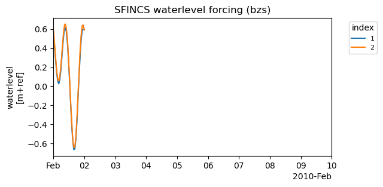
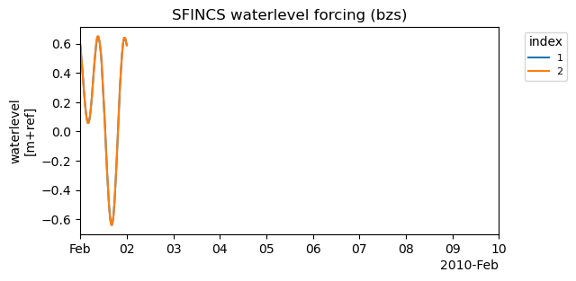
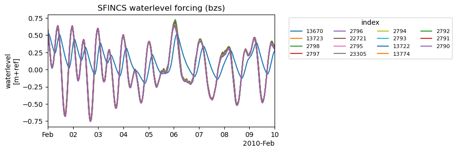

Tip
For an interactive online version click here:

Working with forcing conditions#
[1]:
import os
import sys
import matplotlib.pyplot as plt
from hydromt.log import setuplog
from hydromt_sfincs import SfincsModel
[2]:
# Initialize SfincsModel with the artifact data catalog which contains data for North Italy
sf = SfincsModel(
data_libs=["artifact_data"],
root="tmp_example",
mode="w+",
logger=setuplog("", log_level=20),
)
2023-08-09 11:09:31,056 - root - log - INFO - HydroMT version: 0.8.1.dev0
2023-08-09 11:09:31,118 - root - data_catalog - INFO - Reading data catalog artifact_data v0.0.8 from archive
2023-08-09 11:09:31,119 - root - data_catalog - INFO - Parsing data catalog from /home/runner/.hydromt_data/artifact_data/v0.0.8/data_catalog.yml
2023-08-09 11:09:31,354 - root - model_api - INFO - Initializing sfincs model from hydromt_sfincs (v1.0.2.dev0).
[3]:
sf.setup_grid(
x0=268650,
y0=5018550,
dx=150.0,
dy=150.0,
nmax=272,
mmax=425,
rotation=0,
epsg=32633,
)
[4]:
sf.setup_config(
tref="20100201 000000",
tstart="20100201 000000",
tstop="20100210 000000",
)
[5]:
# 2d precip
sf.setup_precip_forcing_from_grid(
precip="era5_hourly",
aggregate=True,
)
sf.write_forcing()
2023-08-09 11:09:31,411 - root - data_catalog - INFO - DataCatalog: Getting era5_hourly RasterDataset netcdf data from /home/runner/.hydromt_data/artifact_data/v0.0.8/era5_hourly.nc
2023-08-09 11:09:31,773 - root - sfincs - INFO - Write forcing files
[6]:
# 1d uniform precip
sf.setup_precip_forcing_from_grid(
precip="era5_hourly",
aggregate=True,
)
2023-08-09 11:09:31,793 - root - data_catalog - INFO - DataCatalog: Getting era5_hourly RasterDataset netcdf data from /home/runner/.hydromt_data/artifact_data/v0.0.8/era5_hourly.nc
2023-08-09 11:09:31,922 - root - model_api - WARNING - Replacing forcing: precip
[7]:
sf.forcing["precip"].to_pandas().to_csv("precip.csv")
sf.forcing.pop("precip", None) # reset
sf.setup_precip_forcing(
timeseries="precip.csv",
)
sf.plot_forcing()
2023-08-09 11:09:31,936 - root - data_catalog - INFO - DataCatalog: Getting precip.csv DataFrame csv data from /home/runner/work/hydromt_sfincs/hydromt_sfincs/docs/_examples/precip.csv
2023-08-09 11:09:31,937 - root - dataframe - INFO - DataFrame: Read csv data.
[7]:
(<Figure size 600x300 with 1 Axes>,
[<AxesSubplot:title={'center':'SFINCS precipitation forcing (precip)'}, ylabel='precipitation\n[mm.hr-1]'>])

[8]:
import pandas as pd
import geopandas as gpd
import numpy as np
from hydromt_sfincs import utils
df = utils.read_timeseries("sfincs_compound//sfincs.bzs", tref=sf.config["tref"])
gdf = utils.read_xy("sfincs_compound//sfincs.bnd", crs=sf.crs)
sf.forcing.pop("bzs", None) # reset
sf.forcing.pop("precip", None) # reset
# add timeseries and locations
sf.setup_waterlevel_forcing(
timeseries=df,
locations=gdf,
merge=True,
)
sf.plot_forcing()
[8]:
(<Figure size 600x300 with 1 Axes>,
[<AxesSubplot:title={'center':'SFINCS waterlevel forcing (bzs)'}, ylabel='waterlevel\n[m+ref]'>])

[9]:
# merge (overwrite) existing timeseries with different time resoltiuon
# and add offset
sf.setup_waterlevel_forcing(
timeseries=df.iloc[::5, [0]],
locations=gdf.iloc[[0]],
offset="dtu10mdt",
merge=True,
)
sf.plot_forcing()
2023-08-09 11:09:32,985 - root - data_catalog - INFO - DataCatalog: Getting dtu10mdt RasterDataset raster data from /home/runner/.hydromt_data/artifact_data/v0.0.8/dtu10mdt.tif
2023-08-09 11:09:33,071 - root - model_api - WARNING - Replacing forcing: bzs
[9]:
(<Figure size 600x300 with 1 Axes>,
[<AxesSubplot:title={'center':'SFINCS waterlevel forcing (bzs)'}, ylabel='waterlevel\n[m+ref]'>])

[10]:
# update timeseries from csv
df.to_csv("waterlevel.csv")
sf.setup_waterlevel_forcing(
timeseries="waterlevel.csv",
merge=True,
)
sf.plot_forcing()
2023-08-09 11:09:33,342 - root - data_catalog - INFO - DataCatalog: Getting waterlevel.csv DataFrame csv data from /home/runner/work/hydromt_sfincs/hydromt_sfincs/docs/_examples/waterlevel.csv
2023-08-09 11:09:33,343 - root - dataframe - INFO - DataFrame: Read csv data.
2023-08-09 11:09:33,389 - root - model_api - WARNING - Replacing forcing: bzs
[10]:
(<Figure size 600x300 with 1 Axes>,
[<AxesSubplot:title={'center':'SFINCS waterlevel forcing (bzs)'}, ylabel='waterlevel\n[m+ref]'>])

[11]:
# overwrite forcing from geodataset (netcdf file)
sf.setup_waterlevel_forcing(
geodataset="gtsmv3_eu_era5",
offset="dtu10mdt",
merge=False,
)
sf.plot_forcing()
2023-08-09 11:09:33,685 - root - data_catalog - INFO - DataCatalog: Getting gtsmv3_eu_era5 GeoDataset netcdf data from /home/runner/.hydromt_data/artifact_data/v0.0.8/gtsmv3_eu_era5.nc
2023-08-09 11:09:33,689 - hydromt.data_adapter.geodataset - geodataset - INFO - GeoDataset: Read netcdf data and clip to geom (epsg:32633) [263650.000, 5013550.000, 337400.000, 5064350.000].
2023-08-09 11:09:33,896 - root - data_catalog - INFO - DataCatalog: Getting dtu10mdt RasterDataset raster data from /home/runner/.hydromt_data/artifact_data/v0.0.8/dtu10mdt.tif
2023-08-09 11:09:33,954 - root - model_api - WARNING - Replacing forcing: bzs
[11]:
(<Figure size 600x300 with 1 Axes>,
[<AxesSubplot:title={'center':'SFINCS waterlevel forcing (bzs)'}, ylabel='waterlevel\n[m+ref]'>])

[12]:
sf.write_forcing()
sf.write_config()
2023-08-09 11:09:34,387 - root - sfincs - INFO - Write forcing files
2023-08-09 11:09:34,416 - root - sfincs - INFO - Write vector file(s) for forcing.bzs to 'gis' subfolder
[13]:
# note that index number cannot be saved in ascii timeseries format
# and are stored as attributes of the geojson file
sf1 = SfincsModel(sf.root, mode="r") # read mode
sf1.read_forcing()
sf1.plot_forcing()
2023-08-09 11:09:34,491 - hydromt_sfincs.sfincs - model_api - INFO - Initializing sfincs model from hydromt_sfincs (v1.0.2.dev0).
2023-08-09 11:09:34,522 - hydromt_sfincs.sfincs - sfincs - WARNING - Index in bndfile does not match /home/runner/work/hydromt_sfincs/hydromt_sfincs/docs/_examples/tmp_example/gis/bnd.geojson
2023-08-09 11:09:34,558 - hydromt_sfincs.sfincs - sfincs - WARNING - Index in bndfile does not match /home/runner/work/hydromt_sfincs/hydromt_sfincs/docs/_examples/tmp_example/gis/bnd.geojson
2023-08-09 11:09:34,592 - hydromt_sfincs.sfincs - sfincs - WARNING - Index in bndfile does not match /home/runner/work/hydromt_sfincs/hydromt_sfincs/docs/_examples/tmp_example/gis/bnd.geojson
2023-08-09 11:09:34,625 - hydromt_sfincs.sfincs - sfincs - WARNING - Index in bndfile does not match /home/runner/work/hydromt_sfincs/hydromt_sfincs/docs/_examples/tmp_example/gis/bnd.geojson
2023-08-09 11:09:34,656 - hydromt_sfincs.sfincs - sfincs - WARNING - Index in bndfile does not match /home/runner/work/hydromt_sfincs/hydromt_sfincs/docs/_examples/tmp_example/gis/bnd.geojson
2023-08-09 11:09:34,691 - hydromt_sfincs.sfincs - sfincs - WARNING - Index in bndfile does not match /home/runner/work/hydromt_sfincs/hydromt_sfincs/docs/_examples/tmp_example/gis/bnd.geojson
2023-08-09 11:09:34,724 - hydromt_sfincs.sfincs - sfincs - WARNING - Index in bndfile does not match /home/runner/work/hydromt_sfincs/hydromt_sfincs/docs/_examples/tmp_example/gis/bnd.geojson
2023-08-09 11:09:34,757 - hydromt_sfincs.sfincs - sfincs - WARNING - Index in bndfile does not match /home/runner/work/hydromt_sfincs/hydromt_sfincs/docs/_examples/tmp_example/gis/bnd.geojson
2023-08-09 11:09:34,793 - hydromt_sfincs.sfincs - sfincs - WARNING - Index in bndfile does not match /home/runner/work/hydromt_sfincs/hydromt_sfincs/docs/_examples/tmp_example/gis/bnd.geojson
2023-08-09 11:09:34,825 - hydromt_sfincs.sfincs - sfincs - WARNING - Index in bndfile does not match /home/runner/work/hydromt_sfincs/hydromt_sfincs/docs/_examples/tmp_example/gis/bnd.geojson
2023-08-09 11:09:34,859 - hydromt_sfincs.sfincs - sfincs - WARNING - Index in bndfile does not match /home/runner/work/hydromt_sfincs/hydromt_sfincs/docs/_examples/tmp_example/gis/bnd.geojson
2023-08-09 11:09:34,893 - hydromt_sfincs.sfincs - sfincs - WARNING - Index in bndfile does not match /home/runner/work/hydromt_sfincs/hydromt_sfincs/docs/_examples/tmp_example/gis/bnd.geojson
2023-08-09 11:09:34,926 - hydromt_sfincs.sfincs - sfincs - WARNING - Index in bndfile does not match /home/runner/work/hydromt_sfincs/hydromt_sfincs/docs/_examples/tmp_example/gis/bnd.geojson
2023-08-09 11:09:34,958 - hydromt_sfincs.sfincs - sfincs - WARNING - Index in bndfile does not match /home/runner/work/hydromt_sfincs/hydromt_sfincs/docs/_examples/tmp_example/gis/bnd.geojson
2023-08-09 11:09:34,991 - hydromt_sfincs.sfincs - sfincs - WARNING - Index in bndfile does not match /home/runner/work/hydromt_sfincs/hydromt_sfincs/docs/_examples/tmp_example/gis/bnd.geojson
2023-08-09 11:09:35,023 - hydromt_sfincs.sfincs - sfincs - WARNING - Index in bndfile does not match /home/runner/work/hydromt_sfincs/hydromt_sfincs/docs/_examples/tmp_example/gis/bnd.geojson
2023-08-09 11:09:35,056 - hydromt_sfincs.sfincs - sfincs - WARNING - Index in bndfile does not match /home/runner/work/hydromt_sfincs/hydromt_sfincs/docs/_examples/tmp_example/gis/bnd.geojson
2023-08-09 11:09:35,089 - hydromt_sfincs.sfincs - sfincs - WARNING - Index in bndfile does not match /home/runner/work/hydromt_sfincs/hydromt_sfincs/docs/_examples/tmp_example/gis/bnd.geojson
2023-08-09 11:09:35,123 - hydromt_sfincs.sfincs - sfincs - WARNING - Index in bndfile does not match /home/runner/work/hydromt_sfincs/hydromt_sfincs/docs/_examples/tmp_example/gis/bnd.geojson
2023-08-09 11:09:35,155 - hydromt_sfincs.sfincs - sfincs - WARNING - Index in bndfile does not match /home/runner/work/hydromt_sfincs/hydromt_sfincs/docs/_examples/tmp_example/gis/bnd.geojson
2023-08-09 11:09:35,188 - hydromt_sfincs.sfincs - sfincs - WARNING - Index in bndfile does not match /home/runner/work/hydromt_sfincs/hydromt_sfincs/docs/_examples/tmp_example/gis/bnd.geojson
2023-08-09 11:09:35,221 - hydromt_sfincs.sfincs - sfincs - WARNING - Index in bndfile does not match /home/runner/work/hydromt_sfincs/hydromt_sfincs/docs/_examples/tmp_example/gis/bnd.geojson
2023-08-09 11:09:35,254 - hydromt_sfincs.sfincs - sfincs - WARNING - Index in bndfile does not match /home/runner/work/hydromt_sfincs/hydromt_sfincs/docs/_examples/tmp_example/gis/bnd.geojson
2023-08-09 11:09:35,287 - hydromt_sfincs.sfincs - sfincs - WARNING - Index in bndfile does not match /home/runner/work/hydromt_sfincs/hydromt_sfincs/docs/_examples/tmp_example/gis/bnd.geojson
2023-08-09 11:09:35,320 - hydromt_sfincs.sfincs - sfincs - WARNING - Index in bndfile does not match /home/runner/work/hydromt_sfincs/hydromt_sfincs/docs/_examples/tmp_example/gis/bnd.geojson
2023-08-09 11:09:35,352 - hydromt_sfincs.sfincs - sfincs - WARNING - Index in bndfile does not match /home/runner/work/hydromt_sfincs/hydromt_sfincs/docs/_examples/tmp_example/gis/bnd.geojson
2023-08-09 11:09:35,384 - hydromt_sfincs.sfincs - sfincs - WARNING - Index in bndfile does not match /home/runner/work/hydromt_sfincs/hydromt_sfincs/docs/_examples/tmp_example/gis/bnd.geojson
2023-08-09 11:09:35,417 - hydromt_sfincs.sfincs - sfincs - WARNING - Index in bndfile does not match /home/runner/work/hydromt_sfincs/hydromt_sfincs/docs/_examples/tmp_example/gis/bnd.geojson
2023-08-09 11:09:35,451 - hydromt_sfincs.sfincs - sfincs - WARNING - Index in bndfile does not match /home/runner/work/hydromt_sfincs/hydromt_sfincs/docs/_examples/tmp_example/gis/bnd.geojson
2023-08-09 11:09:35,484 - hydromt_sfincs.sfincs - sfincs - WARNING - Index in bndfile does not match /home/runner/work/hydromt_sfincs/hydromt_sfincs/docs/_examples/tmp_example/gis/bnd.geojson
2023-08-09 11:09:35,517 - hydromt_sfincs.sfincs - sfincs - WARNING - Index in bndfile does not match /home/runner/work/hydromt_sfincs/hydromt_sfincs/docs/_examples/tmp_example/gis/bnd.geojson
2023-08-09 11:09:35,552 - hydromt_sfincs.sfincs - sfincs - WARNING - Index in bndfile does not match /home/runner/work/hydromt_sfincs/hydromt_sfincs/docs/_examples/tmp_example/gis/bnd.geojson
2023-08-09 11:09:35,585 - hydromt_sfincs.sfincs - sfincs - WARNING - Index in bndfile does not match /home/runner/work/hydromt_sfincs/hydromt_sfincs/docs/_examples/tmp_example/gis/bnd.geojson
2023-08-09 11:09:35,619 - hydromt_sfincs.sfincs - sfincs - WARNING - Index in bndfile does not match /home/runner/work/hydromt_sfincs/hydromt_sfincs/docs/_examples/tmp_example/gis/bnd.geojson
2023-08-09 11:09:35,653 - hydromt_sfincs.sfincs - sfincs - WARNING - Index in bndfile does not match /home/runner/work/hydromt_sfincs/hydromt_sfincs/docs/_examples/tmp_example/gis/bnd.geojson
2023-08-09 11:09:35,686 - hydromt_sfincs.sfincs - sfincs - WARNING - Index in bndfile does not match /home/runner/work/hydromt_sfincs/hydromt_sfincs/docs/_examples/tmp_example/gis/bnd.geojson
2023-08-09 11:09:35,719 - hydromt_sfincs.sfincs - sfincs - WARNING - Index in bndfile does not match /home/runner/work/hydromt_sfincs/hydromt_sfincs/docs/_examples/tmp_example/gis/bnd.geojson
2023-08-09 11:09:35,752 - hydromt_sfincs.sfincs - sfincs - WARNING - Index in bndfile does not match /home/runner/work/hydromt_sfincs/hydromt_sfincs/docs/_examples/tmp_example/gis/bnd.geojson
2023-08-09 11:09:35,785 - hydromt_sfincs.sfincs - sfincs - WARNING - Index in bndfile does not match /home/runner/work/hydromt_sfincs/hydromt_sfincs/docs/_examples/tmp_example/gis/bnd.geojson
2023-08-09 11:09:35,817 - hydromt_sfincs.sfincs - sfincs - WARNING - Index in bndfile does not match /home/runner/work/hydromt_sfincs/hydromt_sfincs/docs/_examples/tmp_example/gis/bnd.geojson
2023-08-09 11:09:35,851 - hydromt_sfincs.sfincs - sfincs - WARNING - Index in bndfile does not match /home/runner/work/hydromt_sfincs/hydromt_sfincs/docs/_examples/tmp_example/gis/bnd.geojson
2023-08-09 11:09:35,884 - hydromt_sfincs.sfincs - sfincs - WARNING - Index in bndfile does not match /home/runner/work/hydromt_sfincs/hydromt_sfincs/docs/_examples/tmp_example/gis/bnd.geojson
2023-08-09 11:09:35,919 - hydromt_sfincs.sfincs - sfincs - WARNING - Index in bndfile does not match /home/runner/work/hydromt_sfincs/hydromt_sfincs/docs/_examples/tmp_example/gis/bnd.geojson
2023-08-09 11:09:35,954 - hydromt_sfincs.sfincs - sfincs - WARNING - Index in bndfile does not match /home/runner/work/hydromt_sfincs/hydromt_sfincs/docs/_examples/tmp_example/gis/bnd.geojson
2023-08-09 11:09:35,988 - hydromt_sfincs.sfincs - sfincs - WARNING - Index in bndfile does not match /home/runner/work/hydromt_sfincs/hydromt_sfincs/docs/_examples/tmp_example/gis/bnd.geojson
2023-08-09 11:09:36,021 - hydromt_sfincs.sfincs - sfincs - WARNING - Index in bndfile does not match /home/runner/work/hydromt_sfincs/hydromt_sfincs/docs/_examples/tmp_example/gis/bnd.geojson
2023-08-09 11:09:36,058 - hydromt_sfincs.sfincs - sfincs - WARNING - Index in bndfile does not match /home/runner/work/hydromt_sfincs/hydromt_sfincs/docs/_examples/tmp_example/gis/bnd.geojson
2023-08-09 11:09:36,098 - hydromt_sfincs.sfincs - sfincs - WARNING - Index in bndfile does not match /home/runner/work/hydromt_sfincs/hydromt_sfincs/docs/_examples/tmp_example/gis/bnd.geojson
2023-08-09 11:09:36,132 - hydromt_sfincs.sfincs - sfincs - WARNING - Index in bndfile does not match /home/runner/work/hydromt_sfincs/hydromt_sfincs/docs/_examples/tmp_example/gis/bnd.geojson
2023-08-09 11:09:36,170 - hydromt_sfincs.sfincs - sfincs - WARNING - Index in bndfile does not match /home/runner/work/hydromt_sfincs/hydromt_sfincs/docs/_examples/tmp_example/gis/bnd.geojson
2023-08-09 11:09:36,203 - hydromt_sfincs.sfincs - sfincs - WARNING - Index in bndfile does not match /home/runner/work/hydromt_sfincs/hydromt_sfincs/docs/_examples/tmp_example/gis/bnd.geojson
2023-08-09 11:09:36,238 - hydromt_sfincs.sfincs - sfincs - WARNING - Index in bndfile does not match /home/runner/work/hydromt_sfincs/hydromt_sfincs/docs/_examples/tmp_example/gis/bnd.geojson
2023-08-09 11:09:36,269 - hydromt_sfincs.sfincs - sfincs - WARNING - Index in bndfile does not match /home/runner/work/hydromt_sfincs/hydromt_sfincs/docs/_examples/tmp_example/gis/bnd.geojson
2023-08-09 11:09:36,303 - hydromt_sfincs.sfincs - sfincs - WARNING - Index in bndfile does not match /home/runner/work/hydromt_sfincs/hydromt_sfincs/docs/_examples/tmp_example/gis/bnd.geojson
2023-08-09 11:09:36,335 - hydromt_sfincs.sfincs - sfincs - WARNING - Index in bndfile does not match /home/runner/work/hydromt_sfincs/hydromt_sfincs/docs/_examples/tmp_example/gis/bnd.geojson
2023-08-09 11:09:36,367 - hydromt_sfincs.sfincs - sfincs - WARNING - Index in bndfile does not match /home/runner/work/hydromt_sfincs/hydromt_sfincs/docs/_examples/tmp_example/gis/bnd.geojson
2023-08-09 11:09:36,402 - hydromt_sfincs.sfincs - sfincs - WARNING - Index in bndfile does not match /home/runner/work/hydromt_sfincs/hydromt_sfincs/docs/_examples/tmp_example/gis/bnd.geojson
2023-08-09 11:09:36,436 - hydromt_sfincs.sfincs - sfincs - WARNING - Index in bndfile does not match /home/runner/work/hydromt_sfincs/hydromt_sfincs/docs/_examples/tmp_example/gis/bnd.geojson
2023-08-09 11:09:36,468 - hydromt_sfincs.sfincs - sfincs - WARNING - Index in bndfile does not match /home/runner/work/hydromt_sfincs/hydromt_sfincs/docs/_examples/tmp_example/gis/bnd.geojson
2023-08-09 11:09:36,500 - hydromt_sfincs.sfincs - sfincs - WARNING - Index in bndfile does not match /home/runner/work/hydromt_sfincs/hydromt_sfincs/docs/_examples/tmp_example/gis/bnd.geojson
2023-08-09 11:09:36,533 - hydromt_sfincs.sfincs - sfincs - WARNING - Index in bndfile does not match /home/runner/work/hydromt_sfincs/hydromt_sfincs/docs/_examples/tmp_example/gis/bnd.geojson
2023-08-09 11:09:36,566 - hydromt_sfincs.sfincs - sfincs - WARNING - Index in bndfile does not match /home/runner/work/hydromt_sfincs/hydromt_sfincs/docs/_examples/tmp_example/gis/bnd.geojson
2023-08-09 11:09:36,599 - hydromt_sfincs.sfincs - sfincs - WARNING - Index in bndfile does not match /home/runner/work/hydromt_sfincs/hydromt_sfincs/docs/_examples/tmp_example/gis/bnd.geojson
2023-08-09 11:09:36,630 - hydromt_sfincs.sfincs - sfincs - WARNING - Index in bndfile does not match /home/runner/work/hydromt_sfincs/hydromt_sfincs/docs/_examples/tmp_example/gis/bnd.geojson
2023-08-09 11:09:36,663 - hydromt_sfincs.sfincs - sfincs - WARNING - Index in bndfile does not match /home/runner/work/hydromt_sfincs/hydromt_sfincs/docs/_examples/tmp_example/gis/bnd.geojson
2023-08-09 11:09:36,696 - hydromt_sfincs.sfincs - sfincs - WARNING - Index in bndfile does not match /home/runner/work/hydromt_sfincs/hydromt_sfincs/docs/_examples/tmp_example/gis/bnd.geojson
2023-08-09 11:09:36,728 - hydromt_sfincs.sfincs - sfincs - WARNING - Index in bndfile does not match /home/runner/work/hydromt_sfincs/hydromt_sfincs/docs/_examples/tmp_example/gis/bnd.geojson
2023-08-09 11:09:36,759 - hydromt_sfincs.sfincs - sfincs - WARNING - Index in bndfile does not match /home/runner/work/hydromt_sfincs/hydromt_sfincs/docs/_examples/tmp_example/gis/bnd.geojson
2023-08-09 11:09:36,791 - hydromt_sfincs.sfincs - sfincs - WARNING - Index in bndfile does not match /home/runner/work/hydromt_sfincs/hydromt_sfincs/docs/_examples/tmp_example/gis/bnd.geojson
2023-08-09 11:09:36,825 - hydromt_sfincs.sfincs - sfincs - WARNING - Index in bndfile does not match /home/runner/work/hydromt_sfincs/hydromt_sfincs/docs/_examples/tmp_example/gis/bnd.geojson
2023-08-09 11:09:36,857 - hydromt_sfincs.sfincs - sfincs - WARNING - Index in bndfile does not match /home/runner/work/hydromt_sfincs/hydromt_sfincs/docs/_examples/tmp_example/gis/bnd.geojson
2023-08-09 11:09:36,889 - hydromt_sfincs.sfincs - sfincs - WARNING - Index in bndfile does not match /home/runner/work/hydromt_sfincs/hydromt_sfincs/docs/_examples/tmp_example/gis/bnd.geojson
2023-08-09 11:09:36,921 - hydromt_sfincs.sfincs - sfincs - WARNING - Index in bndfile does not match /home/runner/work/hydromt_sfincs/hydromt_sfincs/docs/_examples/tmp_example/gis/bnd.geojson
2023-08-09 11:09:36,953 - hydromt_sfincs.sfincs - sfincs - WARNING - Index in bndfile does not match /home/runner/work/hydromt_sfincs/hydromt_sfincs/docs/_examples/tmp_example/gis/bnd.geojson
2023-08-09 11:09:36,986 - hydromt_sfincs.sfincs - sfincs - WARNING - Index in bndfile does not match /home/runner/work/hydromt_sfincs/hydromt_sfincs/docs/_examples/tmp_example/gis/bnd.geojson
2023-08-09 11:09:37,019 - hydromt_sfincs.sfincs - sfincs - WARNING - Index in bndfile does not match /home/runner/work/hydromt_sfincs/hydromt_sfincs/docs/_examples/tmp_example/gis/bnd.geojson
2023-08-09 11:09:37,052 - hydromt_sfincs.sfincs - sfincs - WARNING - Index in bndfile does not match /home/runner/work/hydromt_sfincs/hydromt_sfincs/docs/_examples/tmp_example/gis/bnd.geojson
2023-08-09 11:09:37,085 - hydromt_sfincs.sfincs - sfincs - WARNING - Index in bndfile does not match /home/runner/work/hydromt_sfincs/hydromt_sfincs/docs/_examples/tmp_example/gis/bnd.geojson
2023-08-09 11:09:37,117 - hydromt_sfincs.sfincs - sfincs - WARNING - Index in bndfile does not match /home/runner/work/hydromt_sfincs/hydromt_sfincs/docs/_examples/tmp_example/gis/bnd.geojson
2023-08-09 11:09:37,150 - hydromt_sfincs.sfincs - sfincs - WARNING - Index in bndfile does not match /home/runner/work/hydromt_sfincs/hydromt_sfincs/docs/_examples/tmp_example/gis/bnd.geojson
2023-08-09 11:09:37,183 - hydromt_sfincs.sfincs - sfincs - WARNING - Index in bndfile does not match /home/runner/work/hydromt_sfincs/hydromt_sfincs/docs/_examples/tmp_example/gis/bnd.geojson
2023-08-09 11:09:37,215 - hydromt_sfincs.sfincs - sfincs - WARNING - Index in bndfile does not match /home/runner/work/hydromt_sfincs/hydromt_sfincs/docs/_examples/tmp_example/gis/bnd.geojson
2023-08-09 11:09:37,249 - hydromt_sfincs.sfincs - sfincs - WARNING - Index in bndfile does not match /home/runner/work/hydromt_sfincs/hydromt_sfincs/docs/_examples/tmp_example/gis/bnd.geojson
2023-08-09 11:09:37,282 - hydromt_sfincs.sfincs - sfincs - WARNING - Index in bndfile does not match /home/runner/work/hydromt_sfincs/hydromt_sfincs/docs/_examples/tmp_example/gis/bnd.geojson
2023-08-09 11:09:37,314 - hydromt_sfincs.sfincs - sfincs - WARNING - Index in bndfile does not match /home/runner/work/hydromt_sfincs/hydromt_sfincs/docs/_examples/tmp_example/gis/bnd.geojson
2023-08-09 11:09:37,346 - hydromt_sfincs.sfincs - sfincs - WARNING - Index in bndfile does not match /home/runner/work/hydromt_sfincs/hydromt_sfincs/docs/_examples/tmp_example/gis/bnd.geojson
2023-08-09 11:09:37,379 - hydromt_sfincs.sfincs - sfincs - WARNING - Index in bndfile does not match /home/runner/work/hydromt_sfincs/hydromt_sfincs/docs/_examples/tmp_example/gis/bnd.geojson
2023-08-09 11:09:37,412 - hydromt_sfincs.sfincs - sfincs - WARNING - Index in bndfile does not match /home/runner/work/hydromt_sfincs/hydromt_sfincs/docs/_examples/tmp_example/gis/bnd.geojson
2023-08-09 11:09:37,455 - hydromt_sfincs.sfincs - sfincs - WARNING - Index in bndfile does not match /home/runner/work/hydromt_sfincs/hydromt_sfincs/docs/_examples/tmp_example/gis/bnd.geojson
2023-08-09 11:09:37,488 - hydromt_sfincs.sfincs - sfincs - WARNING - Index in bndfile does not match /home/runner/work/hydromt_sfincs/hydromt_sfincs/docs/_examples/tmp_example/gis/bnd.geojson
2023-08-09 11:09:37,520 - hydromt_sfincs.sfincs - sfincs - WARNING - Index in bndfile does not match /home/runner/work/hydromt_sfincs/hydromt_sfincs/docs/_examples/tmp_example/gis/bnd.geojson
2023-08-09 11:09:37,555 - hydromt_sfincs.sfincs - sfincs - WARNING - Index in bndfile does not match /home/runner/work/hydromt_sfincs/hydromt_sfincs/docs/_examples/tmp_example/gis/bnd.geojson
2023-08-09 11:09:37,591 - hydromt_sfincs.sfincs - sfincs - WARNING - Index in bndfile does not match /home/runner/work/hydromt_sfincs/hydromt_sfincs/docs/_examples/tmp_example/gis/bnd.geojson
2023-08-09 11:09:37,623 - hydromt_sfincs.sfincs - sfincs - WARNING - Index in bndfile does not match /home/runner/work/hydromt_sfincs/hydromt_sfincs/docs/_examples/tmp_example/gis/bnd.geojson
2023-08-09 11:09:37,656 - hydromt_sfincs.sfincs - sfincs - WARNING - Index in bndfile does not match /home/runner/work/hydromt_sfincs/hydromt_sfincs/docs/_examples/tmp_example/gis/bnd.geojson
2023-08-09 11:09:37,688 - hydromt_sfincs.sfincs - sfincs - WARNING - Index in bndfile does not match /home/runner/work/hydromt_sfincs/hydromt_sfincs/docs/_examples/tmp_example/gis/bnd.geojson
2023-08-09 11:09:37,722 - hydromt_sfincs.sfincs - sfincs - WARNING - Index in bndfile does not match /home/runner/work/hydromt_sfincs/hydromt_sfincs/docs/_examples/tmp_example/gis/bnd.geojson
2023-08-09 11:09:37,756 - hydromt_sfincs.sfincs - sfincs - WARNING - Index in bndfile does not match /home/runner/work/hydromt_sfincs/hydromt_sfincs/docs/_examples/tmp_example/gis/bnd.geojson
2023-08-09 11:09:37,789 - hydromt_sfincs.sfincs - sfincs - WARNING - Index in bndfile does not match /home/runner/work/hydromt_sfincs/hydromt_sfincs/docs/_examples/tmp_example/gis/bnd.geojson
2023-08-09 11:09:37,824 - hydromt_sfincs.sfincs - sfincs - WARNING - Index in bndfile does not match /home/runner/work/hydromt_sfincs/hydromt_sfincs/docs/_examples/tmp_example/gis/bnd.geojson
2023-08-09 11:09:37,858 - hydromt_sfincs.sfincs - sfincs - WARNING - Index in bndfile does not match /home/runner/work/hydromt_sfincs/hydromt_sfincs/docs/_examples/tmp_example/gis/bnd.geojson
2023-08-09 11:09:37,889 - hydromt_sfincs.sfincs - sfincs - WARNING - Index in bndfile does not match /home/runner/work/hydromt_sfincs/hydromt_sfincs/docs/_examples/tmp_example/gis/bnd.geojson
2023-08-09 11:09:37,923 - hydromt_sfincs.sfincs - sfincs - WARNING - Index in bndfile does not match /home/runner/work/hydromt_sfincs/hydromt_sfincs/docs/_examples/tmp_example/gis/bnd.geojson
2023-08-09 11:09:37,959 - hydromt_sfincs.sfincs - sfincs - WARNING - Index in bndfile does not match /home/runner/work/hydromt_sfincs/hydromt_sfincs/docs/_examples/tmp_example/gis/bnd.geojson
2023-08-09 11:09:37,995 - hydromt_sfincs.sfincs - sfincs - WARNING - Index in bndfile does not match /home/runner/work/hydromt_sfincs/hydromt_sfincs/docs/_examples/tmp_example/gis/bnd.geojson
2023-08-09 11:09:38,030 - hydromt_sfincs.sfincs - sfincs - WARNING - Index in bndfile does not match /home/runner/work/hydromt_sfincs/hydromt_sfincs/docs/_examples/tmp_example/gis/bnd.geojson
2023-08-09 11:09:38,061 - hydromt_sfincs.sfincs - sfincs - WARNING - Index in bndfile does not match /home/runner/work/hydromt_sfincs/hydromt_sfincs/docs/_examples/tmp_example/gis/bnd.geojson
2023-08-09 11:09:38,096 - hydromt_sfincs.sfincs - sfincs - WARNING - Index in bndfile does not match /home/runner/work/hydromt_sfincs/hydromt_sfincs/docs/_examples/tmp_example/gis/bnd.geojson
2023-08-09 11:09:38,131 - hydromt_sfincs.sfincs - sfincs - WARNING - Index in bndfile does not match /home/runner/work/hydromt_sfincs/hydromt_sfincs/docs/_examples/tmp_example/gis/bnd.geojson
2023-08-09 11:09:38,166 - hydromt_sfincs.sfincs - sfincs - WARNING - Index in bndfile does not match /home/runner/work/hydromt_sfincs/hydromt_sfincs/docs/_examples/tmp_example/gis/bnd.geojson
2023-08-09 11:09:38,200 - hydromt_sfincs.sfincs - sfincs - WARNING - Index in bndfile does not match /home/runner/work/hydromt_sfincs/hydromt_sfincs/docs/_examples/tmp_example/gis/bnd.geojson
2023-08-09 11:09:38,233 - hydromt_sfincs.sfincs - sfincs - WARNING - Index in bndfile does not match /home/runner/work/hydromt_sfincs/hydromt_sfincs/docs/_examples/tmp_example/gis/bnd.geojson
2023-08-09 11:09:38,266 - hydromt_sfincs.sfincs - sfincs - WARNING - Index in bndfile does not match /home/runner/work/hydromt_sfincs/hydromt_sfincs/docs/_examples/tmp_example/gis/bnd.geojson
2023-08-09 11:09:38,298 - hydromt_sfincs.sfincs - sfincs - WARNING - Index in bndfile does not match /home/runner/work/hydromt_sfincs/hydromt_sfincs/docs/_examples/tmp_example/gis/bnd.geojson
2023-08-09 11:09:38,329 - hydromt_sfincs.sfincs - sfincs - WARNING - Index in bndfile does not match /home/runner/work/hydromt_sfincs/hydromt_sfincs/docs/_examples/tmp_example/gis/bnd.geojson
2023-08-09 11:09:38,361 - hydromt_sfincs.sfincs - sfincs - WARNING - Index in bndfile does not match /home/runner/work/hydromt_sfincs/hydromt_sfincs/docs/_examples/tmp_example/gis/bnd.geojson
2023-08-09 11:09:38,394 - hydromt_sfincs.sfincs - sfincs - WARNING - Index in bndfile does not match /home/runner/work/hydromt_sfincs/hydromt_sfincs/docs/_examples/tmp_example/gis/bnd.geojson
2023-08-09 11:09:38,428 - hydromt_sfincs.sfincs - sfincs - WARNING - Index in bndfile does not match /home/runner/work/hydromt_sfincs/hydromt_sfincs/docs/_examples/tmp_example/gis/bnd.geojson
2023-08-09 11:09:38,460 - hydromt_sfincs.sfincs - sfincs - WARNING - Index in bndfile does not match /home/runner/work/hydromt_sfincs/hydromt_sfincs/docs/_examples/tmp_example/gis/bnd.geojson
2023-08-09 11:09:38,493 - hydromt_sfincs.sfincs - sfincs - WARNING - Index in bndfile does not match /home/runner/work/hydromt_sfincs/hydromt_sfincs/docs/_examples/tmp_example/gis/bnd.geojson
2023-08-09 11:09:38,526 - hydromt_sfincs.sfincs - sfincs - WARNING - Index in bndfile does not match /home/runner/work/hydromt_sfincs/hydromt_sfincs/docs/_examples/tmp_example/gis/bnd.geojson
2023-08-09 11:09:38,559 - hydromt_sfincs.sfincs - sfincs - WARNING - Index in bndfile does not match /home/runner/work/hydromt_sfincs/hydromt_sfincs/docs/_examples/tmp_example/gis/bnd.geojson
2023-08-09 11:09:38,593 - hydromt_sfincs.sfincs - sfincs - WARNING - Index in bndfile does not match /home/runner/work/hydromt_sfincs/hydromt_sfincs/docs/_examples/tmp_example/gis/bnd.geojson
2023-08-09 11:09:38,628 - hydromt_sfincs.sfincs - sfincs - WARNING - Index in bndfile does not match /home/runner/work/hydromt_sfincs/hydromt_sfincs/docs/_examples/tmp_example/gis/bnd.geojson
2023-08-09 11:09:38,663 - hydromt_sfincs.sfincs - sfincs - WARNING - Index in bndfile does not match /home/runner/work/hydromt_sfincs/hydromt_sfincs/docs/_examples/tmp_example/gis/bnd.geojson
2023-08-09 11:09:38,699 - hydromt_sfincs.sfincs - sfincs - WARNING - Index in bndfile does not match /home/runner/work/hydromt_sfincs/hydromt_sfincs/docs/_examples/tmp_example/gis/bnd.geojson
2023-08-09 11:09:38,734 - hydromt_sfincs.sfincs - sfincs - WARNING - Index in bndfile does not match /home/runner/work/hydromt_sfincs/hydromt_sfincs/docs/_examples/tmp_example/gis/bnd.geojson
2023-08-09 11:09:38,768 - hydromt_sfincs.sfincs - sfincs - WARNING - Index in bndfile does not match /home/runner/work/hydromt_sfincs/hydromt_sfincs/docs/_examples/tmp_example/gis/bnd.geojson
2023-08-09 11:09:38,802 - hydromt_sfincs.sfincs - sfincs - WARNING - Index in bndfile does not match /home/runner/work/hydromt_sfincs/hydromt_sfincs/docs/_examples/tmp_example/gis/bnd.geojson
2023-08-09 11:09:38,836 - hydromt_sfincs.sfincs - sfincs - WARNING - Index in bndfile does not match /home/runner/work/hydromt_sfincs/hydromt_sfincs/docs/_examples/tmp_example/gis/bnd.geojson
2023-08-09 11:09:38,869 - hydromt_sfincs.sfincs - sfincs - WARNING - Index in bndfile does not match /home/runner/work/hydromt_sfincs/hydromt_sfincs/docs/_examples/tmp_example/gis/bnd.geojson
2023-08-09 11:09:38,901 - hydromt_sfincs.sfincs - sfincs - WARNING - Index in bndfile does not match /home/runner/work/hydromt_sfincs/hydromt_sfincs/docs/_examples/tmp_example/gis/bnd.geojson
2023-08-09 11:09:38,933 - hydromt_sfincs.sfincs - sfincs - WARNING - Index in bndfile does not match /home/runner/work/hydromt_sfincs/hydromt_sfincs/docs/_examples/tmp_example/gis/bnd.geojson
2023-08-09 11:09:38,965 - hydromt_sfincs.sfincs - sfincs - WARNING - Index in bndfile does not match /home/runner/work/hydromt_sfincs/hydromt_sfincs/docs/_examples/tmp_example/gis/bnd.geojson
2023-08-09 11:09:38,998 - hydromt_sfincs.sfincs - sfincs - WARNING - Index in bndfile does not match /home/runner/work/hydromt_sfincs/hydromt_sfincs/docs/_examples/tmp_example/gis/bnd.geojson
2023-08-09 11:09:39,039 - hydromt_sfincs.sfincs - sfincs - WARNING - Index in bndfile does not match /home/runner/work/hydromt_sfincs/hydromt_sfincs/docs/_examples/tmp_example/gis/bnd.geojson
2023-08-09 11:09:39,072 - hydromt_sfincs.sfincs - sfincs - WARNING - Index in bndfile does not match /home/runner/work/hydromt_sfincs/hydromt_sfincs/docs/_examples/tmp_example/gis/bnd.geojson
2023-08-09 11:09:39,106 - hydromt_sfincs.sfincs - sfincs - WARNING - Index in bndfile does not match /home/runner/work/hydromt_sfincs/hydromt_sfincs/docs/_examples/tmp_example/gis/bnd.geojson
2023-08-09 11:09:39,138 - hydromt_sfincs.sfincs - sfincs - WARNING - Index in bndfile does not match /home/runner/work/hydromt_sfincs/hydromt_sfincs/docs/_examples/tmp_example/gis/bnd.geojson
2023-08-09 11:09:39,350 - hydromt_sfincs.sfincs - sfincs - WARNING - Index in bndfile does not match /home/runner/work/hydromt_sfincs/hydromt_sfincs/docs/_examples/tmp_example/gis/bnd.geojson
2023-08-09 11:09:39,385 - hydromt_sfincs.sfincs - sfincs - WARNING - Index in bndfile does not match /home/runner/work/hydromt_sfincs/hydromt_sfincs/docs/_examples/tmp_example/gis/bnd.geojson
2023-08-09 11:09:39,418 - hydromt_sfincs.sfincs - sfincs - WARNING - Index in bndfile does not match /home/runner/work/hydromt_sfincs/hydromt_sfincs/docs/_examples/tmp_example/gis/bnd.geojson
2023-08-09 11:09:39,452 - hydromt_sfincs.sfincs - sfincs - WARNING - Index in bndfile does not match /home/runner/work/hydromt_sfincs/hydromt_sfincs/docs/_examples/tmp_example/gis/bnd.geojson
2023-08-09 11:09:39,485 - hydromt_sfincs.sfincs - sfincs - WARNING - Index in bndfile does not match /home/runner/work/hydromt_sfincs/hydromt_sfincs/docs/_examples/tmp_example/gis/bnd.geojson
2023-08-09 11:09:39,520 - hydromt_sfincs.sfincs - sfincs - WARNING - Index in bndfile does not match /home/runner/work/hydromt_sfincs/hydromt_sfincs/docs/_examples/tmp_example/gis/bnd.geojson
2023-08-09 11:09:39,554 - hydromt_sfincs.sfincs - sfincs - WARNING - Index in bndfile does not match /home/runner/work/hydromt_sfincs/hydromt_sfincs/docs/_examples/tmp_example/gis/bnd.geojson
2023-08-09 11:09:39,587 - hydromt_sfincs.sfincs - sfincs - WARNING - Index in bndfile does not match /home/runner/work/hydromt_sfincs/hydromt_sfincs/docs/_examples/tmp_example/gis/bnd.geojson
2023-08-09 11:09:39,621 - hydromt_sfincs.sfincs - sfincs - WARNING - Index in bndfile does not match /home/runner/work/hydromt_sfincs/hydromt_sfincs/docs/_examples/tmp_example/gis/bnd.geojson
2023-08-09 11:09:39,654 - hydromt_sfincs.sfincs - sfincs - WARNING - Index in bndfile does not match /home/runner/work/hydromt_sfincs/hydromt_sfincs/docs/_examples/tmp_example/gis/bnd.geojson
2023-08-09 11:09:39,688 - hydromt_sfincs.sfincs - sfincs - WARNING - Index in bndfile does not match /home/runner/work/hydromt_sfincs/hydromt_sfincs/docs/_examples/tmp_example/gis/bnd.geojson
2023-08-09 11:09:39,721 - hydromt_sfincs.sfincs - sfincs - WARNING - Index in bndfile does not match /home/runner/work/hydromt_sfincs/hydromt_sfincs/docs/_examples/tmp_example/gis/bnd.geojson
2023-08-09 11:09:39,755 - hydromt_sfincs.sfincs - sfincs - WARNING - Index in bndfile does not match /home/runner/work/hydromt_sfincs/hydromt_sfincs/docs/_examples/tmp_example/gis/bnd.geojson
2023-08-09 11:09:39,789 - hydromt_sfincs.sfincs - sfincs - WARNING - Index in bndfile does not match /home/runner/work/hydromt_sfincs/hydromt_sfincs/docs/_examples/tmp_example/gis/bnd.geojson
2023-08-09 11:09:39,821 - hydromt_sfincs.sfincs - sfincs - WARNING - Index in bndfile does not match /home/runner/work/hydromt_sfincs/hydromt_sfincs/docs/_examples/tmp_example/gis/bnd.geojson
2023-08-09 11:09:39,855 - hydromt_sfincs.sfincs - sfincs - WARNING - Index in bndfile does not match /home/runner/work/hydromt_sfincs/hydromt_sfincs/docs/_examples/tmp_example/gis/bnd.geojson
2023-08-09 11:09:39,887 - hydromt_sfincs.sfincs - sfincs - WARNING - Index in bndfile does not match /home/runner/work/hydromt_sfincs/hydromt_sfincs/docs/_examples/tmp_example/gis/bnd.geojson
2023-08-09 11:09:39,919 - hydromt_sfincs.sfincs - sfincs - WARNING - Index in bndfile does not match /home/runner/work/hydromt_sfincs/hydromt_sfincs/docs/_examples/tmp_example/gis/bnd.geojson
2023-08-09 11:09:39,953 - hydromt_sfincs.sfincs - sfincs - WARNING - Index in bndfile does not match /home/runner/work/hydromt_sfincs/hydromt_sfincs/docs/_examples/tmp_example/gis/bnd.geojson
2023-08-09 11:09:39,985 - hydromt_sfincs.sfincs - sfincs - WARNING - Index in bndfile does not match /home/runner/work/hydromt_sfincs/hydromt_sfincs/docs/_examples/tmp_example/gis/bnd.geojson
2023-08-09 11:09:40,017 - hydromt_sfincs.sfincs - sfincs - WARNING - Index in bndfile does not match /home/runner/work/hydromt_sfincs/hydromt_sfincs/docs/_examples/tmp_example/gis/bnd.geojson
2023-08-09 11:09:40,049 - hydromt_sfincs.sfincs - sfincs - WARNING - Index in bndfile does not match /home/runner/work/hydromt_sfincs/hydromt_sfincs/docs/_examples/tmp_example/gis/bnd.geojson
2023-08-09 11:09:40,083 - hydromt_sfincs.sfincs - sfincs - WARNING - Index in bndfile does not match /home/runner/work/hydromt_sfincs/hydromt_sfincs/docs/_examples/tmp_example/gis/bnd.geojson
2023-08-09 11:09:40,117 - hydromt_sfincs.sfincs - sfincs - WARNING - Index in bndfile does not match /home/runner/work/hydromt_sfincs/hydromt_sfincs/docs/_examples/tmp_example/gis/bnd.geojson
2023-08-09 11:09:40,150 - hydromt_sfincs.sfincs - sfincs - WARNING - Index in bndfile does not match /home/runner/work/hydromt_sfincs/hydromt_sfincs/docs/_examples/tmp_example/gis/bnd.geojson
2023-08-09 11:09:40,183 - hydromt_sfincs.sfincs - sfincs - WARNING - Index in bndfile does not match /home/runner/work/hydromt_sfincs/hydromt_sfincs/docs/_examples/tmp_example/gis/bnd.geojson
2023-08-09 11:09:40,216 - hydromt_sfincs.sfincs - sfincs - WARNING - Index in bndfile does not match /home/runner/work/hydromt_sfincs/hydromt_sfincs/docs/_examples/tmp_example/gis/bnd.geojson
2023-08-09 11:09:40,250 - hydromt_sfincs.sfincs - sfincs - WARNING - Index in bndfile does not match /home/runner/work/hydromt_sfincs/hydromt_sfincs/docs/_examples/tmp_example/gis/bnd.geojson
2023-08-09 11:09:40,284 - hydromt_sfincs.sfincs - sfincs - WARNING - Index in bndfile does not match /home/runner/work/hydromt_sfincs/hydromt_sfincs/docs/_examples/tmp_example/gis/bnd.geojson
2023-08-09 11:09:40,318 - hydromt_sfincs.sfincs - sfincs - WARNING - Index in bndfile does not match /home/runner/work/hydromt_sfincs/hydromt_sfincs/docs/_examples/tmp_example/gis/bnd.geojson
2023-08-09 11:09:40,351 - hydromt_sfincs.sfincs - sfincs - WARNING - Index in bndfile does not match /home/runner/work/hydromt_sfincs/hydromt_sfincs/docs/_examples/tmp_example/gis/bnd.geojson
2023-08-09 11:09:40,389 - hydromt_sfincs.sfincs - sfincs - WARNING - Index in bndfile does not match /home/runner/work/hydromt_sfincs/hydromt_sfincs/docs/_examples/tmp_example/gis/bnd.geojson
2023-08-09 11:09:40,423 - hydromt_sfincs.sfincs - sfincs - WARNING - Index in bndfile does not match /home/runner/work/hydromt_sfincs/hydromt_sfincs/docs/_examples/tmp_example/gis/bnd.geojson
2023-08-09 11:09:40,456 - hydromt_sfincs.sfincs - sfincs - WARNING - Index in bndfile does not match /home/runner/work/hydromt_sfincs/hydromt_sfincs/docs/_examples/tmp_example/gis/bnd.geojson
2023-08-09 11:09:40,491 - hydromt_sfincs.sfincs - sfincs - WARNING - Index in bndfile does not match /home/runner/work/hydromt_sfincs/hydromt_sfincs/docs/_examples/tmp_example/gis/bnd.geojson
2023-08-09 11:09:40,524 - hydromt_sfincs.sfincs - sfincs - WARNING - Index in bndfile does not match /home/runner/work/hydromt_sfincs/hydromt_sfincs/docs/_examples/tmp_example/gis/bnd.geojson
2023-08-09 11:09:40,558 - hydromt_sfincs.sfincs - sfincs - WARNING - Index in bndfile does not match /home/runner/work/hydromt_sfincs/hydromt_sfincs/docs/_examples/tmp_example/gis/bnd.geojson
2023-08-09 11:09:40,590 - hydromt_sfincs.sfincs - sfincs - WARNING - Index in bndfile does not match /home/runner/work/hydromt_sfincs/hydromt_sfincs/docs/_examples/tmp_example/gis/bnd.geojson
2023-08-09 11:09:40,622 - hydromt_sfincs.sfincs - sfincs - WARNING - Index in bndfile does not match /home/runner/work/hydromt_sfincs/hydromt_sfincs/docs/_examples/tmp_example/gis/bnd.geojson
2023-08-09 11:09:40,658 - hydromt_sfincs.sfincs - sfincs - WARNING - Index in bndfile does not match /home/runner/work/hydromt_sfincs/hydromt_sfincs/docs/_examples/tmp_example/gis/bnd.geojson
2023-08-09 11:09:40,690 - hydromt_sfincs.sfincs - sfincs - WARNING - Index in bndfile does not match /home/runner/work/hydromt_sfincs/hydromt_sfincs/docs/_examples/tmp_example/gis/bnd.geojson
2023-08-09 11:09:40,721 - hydromt_sfincs.sfincs - sfincs - WARNING - Index in bndfile does not match /home/runner/work/hydromt_sfincs/hydromt_sfincs/docs/_examples/tmp_example/gis/bnd.geojson
2023-08-09 11:09:40,753 - hydromt_sfincs.sfincs - sfincs - WARNING - Index in bndfile does not match /home/runner/work/hydromt_sfincs/hydromt_sfincs/docs/_examples/tmp_example/gis/bnd.geojson
2023-08-09 11:09:40,786 - hydromt_sfincs.sfincs - sfincs - WARNING - Index in bndfile does not match /home/runner/work/hydromt_sfincs/hydromt_sfincs/docs/_examples/tmp_example/gis/bnd.geojson
2023-08-09 11:09:40,820 - hydromt_sfincs.sfincs - sfincs - WARNING - Index in bndfile does not match /home/runner/work/hydromt_sfincs/hydromt_sfincs/docs/_examples/tmp_example/gis/bnd.geojson
2023-08-09 11:09:40,852 - hydromt_sfincs.sfincs - sfincs - WARNING - Index in bndfile does not match /home/runner/work/hydromt_sfincs/hydromt_sfincs/docs/_examples/tmp_example/gis/bnd.geojson
2023-08-09 11:09:40,885 - hydromt_sfincs.sfincs - sfincs - WARNING - Index in bndfile does not match /home/runner/work/hydromt_sfincs/hydromt_sfincs/docs/_examples/tmp_example/gis/bnd.geojson
2023-08-09 11:09:40,917 - hydromt_sfincs.sfincs - sfincs - WARNING - Index in bndfile does not match /home/runner/work/hydromt_sfincs/hydromt_sfincs/docs/_examples/tmp_example/gis/bnd.geojson
2023-08-09 11:09:40,949 - hydromt_sfincs.sfincs - sfincs - WARNING - Index in bndfile does not match /home/runner/work/hydromt_sfincs/hydromt_sfincs/docs/_examples/tmp_example/gis/bnd.geojson
2023-08-09 11:09:40,981 - hydromt_sfincs.sfincs - sfincs - WARNING - Index in bndfile does not match /home/runner/work/hydromt_sfincs/hydromt_sfincs/docs/_examples/tmp_example/gis/bnd.geojson
2023-08-09 11:09:41,013 - hydromt_sfincs.sfincs - sfincs - WARNING - Index in bndfile does not match /home/runner/work/hydromt_sfincs/hydromt_sfincs/docs/_examples/tmp_example/gis/bnd.geojson
2023-08-09 11:09:41,044 - hydromt_sfincs.sfincs - sfincs - WARNING - Index in bndfile does not match /home/runner/work/hydromt_sfincs/hydromt_sfincs/docs/_examples/tmp_example/gis/bnd.geojson
2023-08-09 11:09:41,076 - hydromt_sfincs.sfincs - sfincs - WARNING - Index in bndfile does not match /home/runner/work/hydromt_sfincs/hydromt_sfincs/docs/_examples/tmp_example/gis/bnd.geojson
2023-08-09 11:09:41,110 - hydromt_sfincs.sfincs - sfincs - WARNING - Index in bndfile does not match /home/runner/work/hydromt_sfincs/hydromt_sfincs/docs/_examples/tmp_example/gis/bnd.geojson
2023-08-09 11:09:41,144 - hydromt_sfincs.sfincs - sfincs - WARNING - Index in bndfile does not match /home/runner/work/hydromt_sfincs/hydromt_sfincs/docs/_examples/tmp_example/gis/bnd.geojson
2023-08-09 11:09:41,176 - hydromt_sfincs.sfincs - sfincs - WARNING - Index in bndfile does not match /home/runner/work/hydromt_sfincs/hydromt_sfincs/docs/_examples/tmp_example/gis/bnd.geojson
2023-08-09 11:09:41,208 - hydromt_sfincs.sfincs - sfincs - WARNING - Index in bndfile does not match /home/runner/work/hydromt_sfincs/hydromt_sfincs/docs/_examples/tmp_example/gis/bnd.geojson
2023-08-09 11:09:41,241 - hydromt_sfincs.sfincs - sfincs - WARNING - Index in bndfile does not match /home/runner/work/hydromt_sfincs/hydromt_sfincs/docs/_examples/tmp_example/gis/bnd.geojson
2023-08-09 11:09:41,276 - hydromt_sfincs.sfincs - sfincs - WARNING - Index in bndfile does not match /home/runner/work/hydromt_sfincs/hydromt_sfincs/docs/_examples/tmp_example/gis/bnd.geojson
2023-08-09 11:09:41,309 - hydromt_sfincs.sfincs - sfincs - WARNING - Index in bndfile does not match /home/runner/work/hydromt_sfincs/hydromt_sfincs/docs/_examples/tmp_example/gis/bnd.geojson
2023-08-09 11:09:41,342 - hydromt_sfincs.sfincs - sfincs - WARNING - Index in bndfile does not match /home/runner/work/hydromt_sfincs/hydromt_sfincs/docs/_examples/tmp_example/gis/bnd.geojson
2023-08-09 11:09:41,375 - hydromt_sfincs.sfincs - sfincs - WARNING - Index in bndfile does not match /home/runner/work/hydromt_sfincs/hydromt_sfincs/docs/_examples/tmp_example/gis/bnd.geojson
2023-08-09 11:09:41,408 - hydromt_sfincs.sfincs - sfincs - WARNING - Index in bndfile does not match /home/runner/work/hydromt_sfincs/hydromt_sfincs/docs/_examples/tmp_example/gis/bnd.geojson
2023-08-09 11:09:41,439 - hydromt_sfincs.sfincs - sfincs - WARNING - Index in bndfile does not match /home/runner/work/hydromt_sfincs/hydromt_sfincs/docs/_examples/tmp_example/gis/bnd.geojson
2023-08-09 11:09:41,472 - hydromt_sfincs.sfincs - sfincs - WARNING - Index in bndfile does not match /home/runner/work/hydromt_sfincs/hydromt_sfincs/docs/_examples/tmp_example/gis/bnd.geojson
2023-08-09 11:09:41,506 - hydromt_sfincs.sfincs - sfincs - WARNING - Index in bndfile does not match /home/runner/work/hydromt_sfincs/hydromt_sfincs/docs/_examples/tmp_example/gis/bnd.geojson
2023-08-09 11:09:41,539 - hydromt_sfincs.sfincs - sfincs - WARNING - Index in bndfile does not match /home/runner/work/hydromt_sfincs/hydromt_sfincs/docs/_examples/tmp_example/gis/bnd.geojson
2023-08-09 11:09:41,571 - hydromt_sfincs.sfincs - sfincs - WARNING - Index in bndfile does not match /home/runner/work/hydromt_sfincs/hydromt_sfincs/docs/_examples/tmp_example/gis/bnd.geojson
2023-08-09 11:09:41,605 - hydromt_sfincs.sfincs - sfincs - WARNING - Index in bndfile does not match /home/runner/work/hydromt_sfincs/hydromt_sfincs/docs/_examples/tmp_example/gis/bnd.geojson
2023-08-09 11:09:41,638 - hydromt_sfincs.sfincs - sfincs - WARNING - Index in bndfile does not match /home/runner/work/hydromt_sfincs/hydromt_sfincs/docs/_examples/tmp_example/gis/bnd.geojson
2023-08-09 11:09:41,674 - hydromt_sfincs.sfincs - sfincs - WARNING - Index in bndfile does not match /home/runner/work/hydromt_sfincs/hydromt_sfincs/docs/_examples/tmp_example/gis/bnd.geojson
2023-08-09 11:09:41,708 - hydromt_sfincs.sfincs - sfincs - WARNING - Index in bndfile does not match /home/runner/work/hydromt_sfincs/hydromt_sfincs/docs/_examples/tmp_example/gis/bnd.geojson
2023-08-09 11:09:41,741 - hydromt_sfincs.sfincs - sfincs - WARNING - Index in bndfile does not match /home/runner/work/hydromt_sfincs/hydromt_sfincs/docs/_examples/tmp_example/gis/bnd.geojson
2023-08-09 11:09:41,774 - hydromt_sfincs.sfincs - sfincs - WARNING - Index in bndfile does not match /home/runner/work/hydromt_sfincs/hydromt_sfincs/docs/_examples/tmp_example/gis/bnd.geojson
2023-08-09 11:09:41,807 - hydromt_sfincs.sfincs - sfincs - WARNING - Index in bndfile does not match /home/runner/work/hydromt_sfincs/hydromt_sfincs/docs/_examples/tmp_example/gis/bnd.geojson
2023-08-09 11:09:41,840 - hydromt_sfincs.sfincs - sfincs - WARNING - Index in bndfile does not match /home/runner/work/hydromt_sfincs/hydromt_sfincs/docs/_examples/tmp_example/gis/bnd.geojson
2023-08-09 11:09:41,872 - hydromt_sfincs.sfincs - sfincs - WARNING - Index in bndfile does not match /home/runner/work/hydromt_sfincs/hydromt_sfincs/docs/_examples/tmp_example/gis/bnd.geojson
2023-08-09 11:09:41,905 - hydromt_sfincs.sfincs - sfincs - WARNING - Index in bndfile does not match /home/runner/work/hydromt_sfincs/hydromt_sfincs/docs/_examples/tmp_example/gis/bnd.geojson
2023-08-09 11:09:41,938 - hydromt_sfincs.sfincs - sfincs - WARNING - Index in bndfile does not match /home/runner/work/hydromt_sfincs/hydromt_sfincs/docs/_examples/tmp_example/gis/bnd.geojson
2023-08-09 11:09:41,970 - hydromt_sfincs.sfincs - sfincs - WARNING - Index in bndfile does not match /home/runner/work/hydromt_sfincs/hydromt_sfincs/docs/_examples/tmp_example/gis/bnd.geojson
2023-08-09 11:09:42,004 - hydromt_sfincs.sfincs - sfincs - WARNING - Index in bndfile does not match /home/runner/work/hydromt_sfincs/hydromt_sfincs/docs/_examples/tmp_example/gis/bnd.geojson
2023-08-09 11:09:42,037 - hydromt_sfincs.sfincs - sfincs - WARNING - Index in bndfile does not match /home/runner/work/hydromt_sfincs/hydromt_sfincs/docs/_examples/tmp_example/gis/bnd.geojson
2023-08-09 11:09:42,070 - hydromt_sfincs.sfincs - sfincs - WARNING - Index in bndfile does not match /home/runner/work/hydromt_sfincs/hydromt_sfincs/docs/_examples/tmp_example/gis/bnd.geojson
2023-08-09 11:09:42,103 - hydromt_sfincs.sfincs - sfincs - WARNING - Index in bndfile does not match /home/runner/work/hydromt_sfincs/hydromt_sfincs/docs/_examples/tmp_example/gis/bnd.geojson
2023-08-09 11:09:42,137 - hydromt_sfincs.sfincs - sfincs - WARNING - Index in bndfile does not match /home/runner/work/hydromt_sfincs/hydromt_sfincs/docs/_examples/tmp_example/gis/bnd.geojson
2023-08-09 11:09:42,169 - hydromt_sfincs.sfincs - sfincs - WARNING - Index in bndfile does not match /home/runner/work/hydromt_sfincs/hydromt_sfincs/docs/_examples/tmp_example/gis/bnd.geojson
2023-08-09 11:09:42,201 - hydromt_sfincs.sfincs - sfincs - WARNING - Index in bndfile does not match /home/runner/work/hydromt_sfincs/hydromt_sfincs/docs/_examples/tmp_example/gis/bnd.geojson
2023-08-09 11:09:42,236 - hydromt_sfincs.sfincs - sfincs - WARNING - Index in bndfile does not match /home/runner/work/hydromt_sfincs/hydromt_sfincs/docs/_examples/tmp_example/gis/bnd.geojson
2023-08-09 11:09:42,276 - hydromt_sfincs.sfincs - sfincs - WARNING - Index in bndfile does not match /home/runner/work/hydromt_sfincs/hydromt_sfincs/docs/_examples/tmp_example/gis/bnd.geojson
2023-08-09 11:09:42,309 - hydromt_sfincs.sfincs - sfincs - WARNING - Index in bndfile does not match /home/runner/work/hydromt_sfincs/hydromt_sfincs/docs/_examples/tmp_example/gis/bnd.geojson
2023-08-09 11:09:42,343 - hydromt_sfincs.sfincs - sfincs - WARNING - Index in bndfile does not match /home/runner/work/hydromt_sfincs/hydromt_sfincs/docs/_examples/tmp_example/gis/bnd.geojson
2023-08-09 11:09:42,376 - hydromt_sfincs.sfincs - sfincs - WARNING - Index in bndfile does not match /home/runner/work/hydromt_sfincs/hydromt_sfincs/docs/_examples/tmp_example/gis/bnd.geojson
2023-08-09 11:09:42,415 - hydromt_sfincs.sfincs - sfincs - WARNING - Index in bndfile does not match /home/runner/work/hydromt_sfincs/hydromt_sfincs/docs/_examples/tmp_example/gis/bnd.geojson
2023-08-09 11:09:42,449 - hydromt_sfincs.sfincs - sfincs - WARNING - Index in bndfile does not match /home/runner/work/hydromt_sfincs/hydromt_sfincs/docs/_examples/tmp_example/gis/bnd.geojson
2023-08-09 11:09:42,482 - hydromt_sfincs.sfincs - sfincs - WARNING - Index in bndfile does not match /home/runner/work/hydromt_sfincs/hydromt_sfincs/docs/_examples/tmp_example/gis/bnd.geojson
2023-08-09 11:09:42,514 - hydromt_sfincs.sfincs - sfincs - WARNING - Index in bndfile does not match /home/runner/work/hydromt_sfincs/hydromt_sfincs/docs/_examples/tmp_example/gis/bnd.geojson
2023-08-09 11:09:42,547 - hydromt_sfincs.sfincs - sfincs - WARNING - Index in bndfile does not match /home/runner/work/hydromt_sfincs/hydromt_sfincs/docs/_examples/tmp_example/gis/bnd.geojson
2023-08-09 11:09:42,580 - hydromt_sfincs.sfincs - sfincs - WARNING - Index in bndfile does not match /home/runner/work/hydromt_sfincs/hydromt_sfincs/docs/_examples/tmp_example/gis/bnd.geojson
2023-08-09 11:09:42,613 - hydromt_sfincs.sfincs - sfincs - WARNING - Index in bndfile does not match /home/runner/work/hydromt_sfincs/hydromt_sfincs/docs/_examples/tmp_example/gis/bnd.geojson
2023-08-09 11:09:42,646 - hydromt_sfincs.sfincs - sfincs - WARNING - Index in bndfile does not match /home/runner/work/hydromt_sfincs/hydromt_sfincs/docs/_examples/tmp_example/gis/bnd.geojson
2023-08-09 11:09:42,679 - hydromt_sfincs.sfincs - sfincs - WARNING - Index in bndfile does not match /home/runner/work/hydromt_sfincs/hydromt_sfincs/docs/_examples/tmp_example/gis/bnd.geojson
2023-08-09 11:09:42,714 - hydromt_sfincs.sfincs - sfincs - WARNING - Index in bndfile does not match /home/runner/work/hydromt_sfincs/hydromt_sfincs/docs/_examples/tmp_example/gis/bnd.geojson
2023-08-09 11:09:42,746 - hydromt_sfincs.sfincs - sfincs - WARNING - Index in bndfile does not match /home/runner/work/hydromt_sfincs/hydromt_sfincs/docs/_examples/tmp_example/gis/bnd.geojson
2023-08-09 11:09:42,777 - hydromt_sfincs.sfincs - sfincs - WARNING - Index in bndfile does not match /home/runner/work/hydromt_sfincs/hydromt_sfincs/docs/_examples/tmp_example/gis/bnd.geojson
2023-08-09 11:09:42,810 - hydromt_sfincs.sfincs - sfincs - WARNING - Index in bndfile does not match /home/runner/work/hydromt_sfincs/hydromt_sfincs/docs/_examples/tmp_example/gis/bnd.geojson
2023-08-09 11:09:42,841 - hydromt_sfincs.sfincs - sfincs - WARNING - Index in bndfile does not match /home/runner/work/hydromt_sfincs/hydromt_sfincs/docs/_examples/tmp_example/gis/bnd.geojson
2023-08-09 11:09:42,874 - hydromt_sfincs.sfincs - sfincs - WARNING - Index in bndfile does not match /home/runner/work/hydromt_sfincs/hydromt_sfincs/docs/_examples/tmp_example/gis/bnd.geojson
2023-08-09 11:09:42,906 - hydromt_sfincs.sfincs - sfincs - WARNING - Index in bndfile does not match /home/runner/work/hydromt_sfincs/hydromt_sfincs/docs/_examples/tmp_example/gis/bnd.geojson
2023-08-09 11:09:42,938 - hydromt_sfincs.sfincs - sfincs - WARNING - Index in bndfile does not match /home/runner/work/hydromt_sfincs/hydromt_sfincs/docs/_examples/tmp_example/gis/bnd.geojson
2023-08-09 11:09:42,970 - hydromt_sfincs.sfincs - sfincs - WARNING - Index in bndfile does not match /home/runner/work/hydromt_sfincs/hydromt_sfincs/docs/_examples/tmp_example/gis/bnd.geojson
2023-08-09 11:09:43,001 - hydromt_sfincs.sfincs - sfincs - WARNING - Index in bndfile does not match /home/runner/work/hydromt_sfincs/hydromt_sfincs/docs/_examples/tmp_example/gis/bnd.geojson
2023-08-09 11:09:43,034 - hydromt_sfincs.sfincs - sfincs - WARNING - Index in bndfile does not match /home/runner/work/hydromt_sfincs/hydromt_sfincs/docs/_examples/tmp_example/gis/bnd.geojson
2023-08-09 11:09:43,067 - hydromt_sfincs.sfincs - sfincs - WARNING - Index in bndfile does not match /home/runner/work/hydromt_sfincs/hydromt_sfincs/docs/_examples/tmp_example/gis/bnd.geojson
2023-08-09 11:09:43,099 - hydromt_sfincs.sfincs - sfincs - WARNING - Index in bndfile does not match /home/runner/work/hydromt_sfincs/hydromt_sfincs/docs/_examples/tmp_example/gis/bnd.geojson
2023-08-09 11:09:43,132 - hydromt_sfincs.sfincs - sfincs - WARNING - Index in bndfile does not match /home/runner/work/hydromt_sfincs/hydromt_sfincs/docs/_examples/tmp_example/gis/bnd.geojson
2023-08-09 11:09:43,164 - hydromt_sfincs.sfincs - sfincs - WARNING - Index in bndfile does not match /home/runner/work/hydromt_sfincs/hydromt_sfincs/docs/_examples/tmp_example/gis/bnd.geojson
2023-08-09 11:09:43,198 - hydromt_sfincs.sfincs - sfincs - WARNING - Index in bndfile does not match /home/runner/work/hydromt_sfincs/hydromt_sfincs/docs/_examples/tmp_example/gis/bnd.geojson
2023-08-09 11:09:43,231 - hydromt_sfincs.sfincs - sfincs - WARNING - Index in bndfile does not match /home/runner/work/hydromt_sfincs/hydromt_sfincs/docs/_examples/tmp_example/gis/bnd.geojson
2023-08-09 11:09:43,264 - hydromt_sfincs.sfincs - sfincs - WARNING - Index in bndfile does not match /home/runner/work/hydromt_sfincs/hydromt_sfincs/docs/_examples/tmp_example/gis/bnd.geojson
2023-08-09 11:09:43,299 - hydromt_sfincs.sfincs - sfincs - WARNING - Index in bndfile does not match /home/runner/work/hydromt_sfincs/hydromt_sfincs/docs/_examples/tmp_example/gis/bnd.geojson
2023-08-09 11:09:43,332 - hydromt_sfincs.sfincs - sfincs - WARNING - Index in bndfile does not match /home/runner/work/hydromt_sfincs/hydromt_sfincs/docs/_examples/tmp_example/gis/bnd.geojson
2023-08-09 11:09:43,365 - hydromt_sfincs.sfincs - sfincs - WARNING - Index in bndfile does not match /home/runner/work/hydromt_sfincs/hydromt_sfincs/docs/_examples/tmp_example/gis/bnd.geojson
2023-08-09 11:09:43,398 - hydromt_sfincs.sfincs - sfincs - WARNING - Index in bndfile does not match /home/runner/work/hydromt_sfincs/hydromt_sfincs/docs/_examples/tmp_example/gis/bnd.geojson
2023-08-09 11:09:43,433 - hydromt_sfincs.sfincs - sfincs - WARNING - Index in bndfile does not match /home/runner/work/hydromt_sfincs/hydromt_sfincs/docs/_examples/tmp_example/gis/bnd.geojson
2023-08-09 11:09:43,468 - hydromt_sfincs.sfincs - sfincs - WARNING - Index in bndfile does not match /home/runner/work/hydromt_sfincs/hydromt_sfincs/docs/_examples/tmp_example/gis/bnd.geojson
2023-08-09 11:09:43,504 - hydromt_sfincs.sfincs - sfincs - WARNING - Index in bndfile does not match /home/runner/work/hydromt_sfincs/hydromt_sfincs/docs/_examples/tmp_example/gis/bnd.geojson
2023-08-09 11:09:43,547 - hydromt_sfincs.sfincs - sfincs - WARNING - Index in bndfile does not match /home/runner/work/hydromt_sfincs/hydromt_sfincs/docs/_examples/tmp_example/gis/bnd.geojson
2023-08-09 11:09:43,580 - hydromt_sfincs.sfincs - sfincs - WARNING - Index in bndfile does not match /home/runner/work/hydromt_sfincs/hydromt_sfincs/docs/_examples/tmp_example/gis/bnd.geojson
2023-08-09 11:09:43,613 - hydromt_sfincs.sfincs - sfincs - WARNING - Index in bndfile does not match /home/runner/work/hydromt_sfincs/hydromt_sfincs/docs/_examples/tmp_example/gis/bnd.geojson
2023-08-09 11:09:43,649 - hydromt_sfincs.sfincs - sfincs - WARNING - Index in bndfile does not match /home/runner/work/hydromt_sfincs/hydromt_sfincs/docs/_examples/tmp_example/gis/bnd.geojson
2023-08-09 11:09:43,683 - hydromt_sfincs.sfincs - sfincs - WARNING - Index in bndfile does not match /home/runner/work/hydromt_sfincs/hydromt_sfincs/docs/_examples/tmp_example/gis/bnd.geojson
2023-08-09 11:09:43,716 - hydromt_sfincs.sfincs - sfincs - WARNING - Index in bndfile does not match /home/runner/work/hydromt_sfincs/hydromt_sfincs/docs/_examples/tmp_example/gis/bnd.geojson
2023-08-09 11:09:43,750 - hydromt_sfincs.sfincs - sfincs - WARNING - Index in bndfile does not match /home/runner/work/hydromt_sfincs/hydromt_sfincs/docs/_examples/tmp_example/gis/bnd.geojson
2023-08-09 11:09:43,783 - hydromt_sfincs.sfincs - sfincs - WARNING - Index in bndfile does not match /home/runner/work/hydromt_sfincs/hydromt_sfincs/docs/_examples/tmp_example/gis/bnd.geojson
2023-08-09 11:09:43,817 - hydromt_sfincs.sfincs - sfincs - WARNING - Index in bndfile does not match /home/runner/work/hydromt_sfincs/hydromt_sfincs/docs/_examples/tmp_example/gis/bnd.geojson
2023-08-09 11:09:43,850 - hydromt_sfincs.sfincs - sfincs - WARNING - Index in bndfile does not match /home/runner/work/hydromt_sfincs/hydromt_sfincs/docs/_examples/tmp_example/gis/bnd.geojson
2023-08-09 11:09:43,884 - hydromt_sfincs.sfincs - sfincs - WARNING - Index in bndfile does not match /home/runner/work/hydromt_sfincs/hydromt_sfincs/docs/_examples/tmp_example/gis/bnd.geojson
2023-08-09 11:09:43,917 - hydromt_sfincs.sfincs - sfincs - WARNING - Index in bndfile does not match /home/runner/work/hydromt_sfincs/hydromt_sfincs/docs/_examples/tmp_example/gis/bnd.geojson
2023-08-09 11:09:43,949 - hydromt_sfincs.sfincs - sfincs - WARNING - Index in bndfile does not match /home/runner/work/hydromt_sfincs/hydromt_sfincs/docs/_examples/tmp_example/gis/bnd.geojson
2023-08-09 11:09:43,980 - hydromt_sfincs.sfincs - sfincs - WARNING - Index in bndfile does not match /home/runner/work/hydromt_sfincs/hydromt_sfincs/docs/_examples/tmp_example/gis/bnd.geojson
2023-08-09 11:09:44,012 - hydromt_sfincs.sfincs - sfincs - WARNING - Index in bndfile does not match /home/runner/work/hydromt_sfincs/hydromt_sfincs/docs/_examples/tmp_example/gis/bnd.geojson
2023-08-09 11:09:44,045 - hydromt_sfincs.sfincs - sfincs - WARNING - Index in bndfile does not match /home/runner/work/hydromt_sfincs/hydromt_sfincs/docs/_examples/tmp_example/gis/bnd.geojson
2023-08-09 11:09:44,079 - hydromt_sfincs.sfincs - sfincs - WARNING - Index in bndfile does not match /home/runner/work/hydromt_sfincs/hydromt_sfincs/docs/_examples/tmp_example/gis/bnd.geojson
2023-08-09 11:09:44,113 - hydromt_sfincs.sfincs - sfincs - WARNING - Index in bndfile does not match /home/runner/work/hydromt_sfincs/hydromt_sfincs/docs/_examples/tmp_example/gis/bnd.geojson
2023-08-09 11:09:44,146 - hydromt_sfincs.sfincs - sfincs - WARNING - Index in bndfile does not match /home/runner/work/hydromt_sfincs/hydromt_sfincs/docs/_examples/tmp_example/gis/bnd.geojson
2023-08-09 11:09:44,178 - hydromt_sfincs.sfincs - sfincs - WARNING - Index in bndfile does not match /home/runner/work/hydromt_sfincs/hydromt_sfincs/docs/_examples/tmp_example/gis/bnd.geojson
2023-08-09 11:09:44,211 - hydromt_sfincs.sfincs - sfincs - WARNING - Index in bndfile does not match /home/runner/work/hydromt_sfincs/hydromt_sfincs/docs/_examples/tmp_example/gis/bnd.geojson
2023-08-09 11:09:44,242 - hydromt_sfincs.sfincs - sfincs - WARNING - Index in bndfile does not match /home/runner/work/hydromt_sfincs/hydromt_sfincs/docs/_examples/tmp_example/gis/bnd.geojson
2023-08-09 11:09:44,276 - hydromt_sfincs.sfincs - sfincs - WARNING - Index in bndfile does not match /home/runner/work/hydromt_sfincs/hydromt_sfincs/docs/_examples/tmp_example/gis/bnd.geojson
2023-08-09 11:09:44,309 - hydromt_sfincs.sfincs - sfincs - WARNING - Index in bndfile does not match /home/runner/work/hydromt_sfincs/hydromt_sfincs/docs/_examples/tmp_example/gis/bnd.geojson
2023-08-09 11:09:44,344 - hydromt_sfincs.sfincs - sfincs - WARNING - Index in bndfile does not match /home/runner/work/hydromt_sfincs/hydromt_sfincs/docs/_examples/tmp_example/gis/bnd.geojson
2023-08-09 11:09:44,376 - hydromt_sfincs.sfincs - sfincs - WARNING - Index in bndfile does not match /home/runner/work/hydromt_sfincs/hydromt_sfincs/docs/_examples/tmp_example/gis/bnd.geojson
2023-08-09 11:09:44,410 - hydromt_sfincs.sfincs - sfincs - WARNING - Index in bndfile does not match /home/runner/work/hydromt_sfincs/hydromt_sfincs/docs/_examples/tmp_example/gis/bnd.geojson
2023-08-09 11:09:44,441 - hydromt_sfincs.sfincs - sfincs - WARNING - Index in bndfile does not match /home/runner/work/hydromt_sfincs/hydromt_sfincs/docs/_examples/tmp_example/gis/bnd.geojson
2023-08-09 11:09:44,473 - hydromt_sfincs.sfincs - sfincs - WARNING - Index in bndfile does not match /home/runner/work/hydromt_sfincs/hydromt_sfincs/docs/_examples/tmp_example/gis/bnd.geojson
2023-08-09 11:09:44,506 - hydromt_sfincs.sfincs - sfincs - WARNING - Index in bndfile does not match /home/runner/work/hydromt_sfincs/hydromt_sfincs/docs/_examples/tmp_example/gis/bnd.geojson
2023-08-09 11:09:44,539 - hydromt_sfincs.sfincs - sfincs - WARNING - Index in bndfile does not match /home/runner/work/hydromt_sfincs/hydromt_sfincs/docs/_examples/tmp_example/gis/bnd.geojson
2023-08-09 11:09:44,571 - hydromt_sfincs.sfincs - sfincs - WARNING - Index in bndfile does not match /home/runner/work/hydromt_sfincs/hydromt_sfincs/docs/_examples/tmp_example/gis/bnd.geojson
2023-08-09 11:09:44,604 - hydromt_sfincs.sfincs - sfincs - WARNING - Index in bndfile does not match /home/runner/work/hydromt_sfincs/hydromt_sfincs/docs/_examples/tmp_example/gis/bnd.geojson
2023-08-09 11:09:44,637 - hydromt_sfincs.sfincs - sfincs - WARNING - Index in bndfile does not match /home/runner/work/hydromt_sfincs/hydromt_sfincs/docs/_examples/tmp_example/gis/bnd.geojson
2023-08-09 11:09:44,670 - hydromt_sfincs.sfincs - sfincs - WARNING - Index in bndfile does not match /home/runner/work/hydromt_sfincs/hydromt_sfincs/docs/_examples/tmp_example/gis/bnd.geojson
2023-08-09 11:09:44,704 - hydromt_sfincs.sfincs - sfincs - WARNING - Index in bndfile does not match /home/runner/work/hydromt_sfincs/hydromt_sfincs/docs/_examples/tmp_example/gis/bnd.geojson
2023-08-09 11:09:44,737 - hydromt_sfincs.sfincs - sfincs - WARNING - Index in bndfile does not match /home/runner/work/hydromt_sfincs/hydromt_sfincs/docs/_examples/tmp_example/gis/bnd.geojson
2023-08-09 11:09:44,774 - hydromt_sfincs.sfincs - sfincs - WARNING - Index in bndfile does not match /home/runner/work/hydromt_sfincs/hydromt_sfincs/docs/_examples/tmp_example/gis/bnd.geojson
2023-08-09 11:09:44,807 - hydromt_sfincs.sfincs - sfincs - WARNING - Index in bndfile does not match /home/runner/work/hydromt_sfincs/hydromt_sfincs/docs/_examples/tmp_example/gis/bnd.geojson
2023-08-09 11:09:44,840 - hydromt_sfincs.sfincs - sfincs - WARNING - Index in bndfile does not match /home/runner/work/hydromt_sfincs/hydromt_sfincs/docs/_examples/tmp_example/gis/bnd.geojson
2023-08-09 11:09:44,873 - hydromt_sfincs.sfincs - sfincs - WARNING - Index in bndfile does not match /home/runner/work/hydromt_sfincs/hydromt_sfincs/docs/_examples/tmp_example/gis/bnd.geojson
2023-08-09 11:09:44,907 - hydromt_sfincs.sfincs - sfincs - WARNING - Index in bndfile does not match /home/runner/work/hydromt_sfincs/hydromt_sfincs/docs/_examples/tmp_example/gis/bnd.geojson
2023-08-09 11:09:44,940 - hydromt_sfincs.sfincs - sfincs - WARNING - Index in bndfile does not match /home/runner/work/hydromt_sfincs/hydromt_sfincs/docs/_examples/tmp_example/gis/bnd.geojson
2023-08-09 11:09:44,972 - hydromt_sfincs.sfincs - sfincs - WARNING - Index in bndfile does not match /home/runner/work/hydromt_sfincs/hydromt_sfincs/docs/_examples/tmp_example/gis/bnd.geojson
2023-08-09 11:09:45,005 - hydromt_sfincs.sfincs - sfincs - WARNING - Index in bndfile does not match /home/runner/work/hydromt_sfincs/hydromt_sfincs/docs/_examples/tmp_example/gis/bnd.geojson
2023-08-09 11:09:45,038 - hydromt_sfincs.sfincs - sfincs - WARNING - Index in bndfile does not match /home/runner/work/hydromt_sfincs/hydromt_sfincs/docs/_examples/tmp_example/gis/bnd.geojson
2023-08-09 11:09:45,071 - hydromt_sfincs.sfincs - sfincs - WARNING - Index in bndfile does not match /home/runner/work/hydromt_sfincs/hydromt_sfincs/docs/_examples/tmp_example/gis/bnd.geojson
2023-08-09 11:09:45,104 - hydromt_sfincs.sfincs - sfincs - WARNING - Index in bndfile does not match /home/runner/work/hydromt_sfincs/hydromt_sfincs/docs/_examples/tmp_example/gis/bnd.geojson
2023-08-09 11:09:45,139 - hydromt_sfincs.sfincs - sfincs - WARNING - Index in bndfile does not match /home/runner/work/hydromt_sfincs/hydromt_sfincs/docs/_examples/tmp_example/gis/bnd.geojson
2023-08-09 11:09:45,173 - hydromt_sfincs.sfincs - sfincs - WARNING - Index in bndfile does not match /home/runner/work/hydromt_sfincs/hydromt_sfincs/docs/_examples/tmp_example/gis/bnd.geojson
2023-08-09 11:09:45,207 - hydromt_sfincs.sfincs - sfincs - WARNING - Index in bndfile does not match /home/runner/work/hydromt_sfincs/hydromt_sfincs/docs/_examples/tmp_example/gis/bnd.geojson
2023-08-09 11:09:45,241 - hydromt_sfincs.sfincs - sfincs - WARNING - Index in bndfile does not match /home/runner/work/hydromt_sfincs/hydromt_sfincs/docs/_examples/tmp_example/gis/bnd.geojson
2023-08-09 11:09:45,273 - hydromt_sfincs.sfincs - sfincs - WARNING - Index in bndfile does not match /home/runner/work/hydromt_sfincs/hydromt_sfincs/docs/_examples/tmp_example/gis/bnd.geojson
2023-08-09 11:09:45,307 - hydromt_sfincs.sfincs - sfincs - WARNING - Index in bndfile does not match /home/runner/work/hydromt_sfincs/hydromt_sfincs/docs/_examples/tmp_example/gis/bnd.geojson
2023-08-09 11:09:45,339 - hydromt_sfincs.sfincs - sfincs - WARNING - Index in bndfile does not match /home/runner/work/hydromt_sfincs/hydromt_sfincs/docs/_examples/tmp_example/gis/bnd.geojson
2023-08-09 11:09:45,374 - hydromt_sfincs.sfincs - sfincs - WARNING - Index in bndfile does not match /home/runner/work/hydromt_sfincs/hydromt_sfincs/docs/_examples/tmp_example/gis/bnd.geojson
2023-08-09 11:09:45,407 - hydromt_sfincs.sfincs - sfincs - WARNING - Index in bndfile does not match /home/runner/work/hydromt_sfincs/hydromt_sfincs/docs/_examples/tmp_example/gis/bnd.geojson
2023-08-09 11:09:45,442 - hydromt_sfincs.sfincs - sfincs - WARNING - Index in bndfile does not match /home/runner/work/hydromt_sfincs/hydromt_sfincs/docs/_examples/tmp_example/gis/bnd.geojson
2023-08-09 11:09:45,476 - hydromt_sfincs.sfincs - sfincs - WARNING - Index in bndfile does not match /home/runner/work/hydromt_sfincs/hydromt_sfincs/docs/_examples/tmp_example/gis/bnd.geojson
2023-08-09 11:09:45,510 - hydromt_sfincs.sfincs - sfincs - WARNING - Index in bndfile does not match /home/runner/work/hydromt_sfincs/hydromt_sfincs/docs/_examples/tmp_example/gis/bnd.geojson
2023-08-09 11:09:45,542 - hydromt_sfincs.sfincs - sfincs - WARNING - Index in bndfile does not match /home/runner/work/hydromt_sfincs/hydromt_sfincs/docs/_examples/tmp_example/gis/bnd.geojson
2023-08-09 11:09:45,574 - hydromt_sfincs.sfincs - sfincs - WARNING - Index in bndfile does not match /home/runner/work/hydromt_sfincs/hydromt_sfincs/docs/_examples/tmp_example/gis/bnd.geojson
2023-08-09 11:09:45,607 - hydromt_sfincs.sfincs - sfincs - WARNING - Index in bndfile does not match /home/runner/work/hydromt_sfincs/hydromt_sfincs/docs/_examples/tmp_example/gis/bnd.geojson
2023-08-09 11:09:45,640 - hydromt_sfincs.sfincs - sfincs - WARNING - Index in bndfile does not match /home/runner/work/hydromt_sfincs/hydromt_sfincs/docs/_examples/tmp_example/gis/bnd.geojson
2023-08-09 11:09:45,671 - hydromt_sfincs.sfincs - sfincs - WARNING - Index in bndfile does not match /home/runner/work/hydromt_sfincs/hydromt_sfincs/docs/_examples/tmp_example/gis/bnd.geojson
2023-08-09 11:09:45,704 - hydromt_sfincs.sfincs - sfincs - WARNING - Index in bndfile does not match /home/runner/work/hydromt_sfincs/hydromt_sfincs/docs/_examples/tmp_example/gis/bnd.geojson
2023-08-09 11:09:45,736 - hydromt_sfincs.sfincs - sfincs - WARNING - Index in bndfile does not match /home/runner/work/hydromt_sfincs/hydromt_sfincs/docs/_examples/tmp_example/gis/bnd.geojson
2023-08-09 11:09:45,768 - hydromt_sfincs.sfincs - sfincs - WARNING - Index in bndfile does not match /home/runner/work/hydromt_sfincs/hydromt_sfincs/docs/_examples/tmp_example/gis/bnd.geojson
2023-08-09 11:09:45,801 - hydromt_sfincs.sfincs - sfincs - WARNING - Index in bndfile does not match /home/runner/work/hydromt_sfincs/hydromt_sfincs/docs/_examples/tmp_example/gis/bnd.geojson
2023-08-09 11:09:45,832 - hydromt_sfincs.sfincs - sfincs - WARNING - Index in bndfile does not match /home/runner/work/hydromt_sfincs/hydromt_sfincs/docs/_examples/tmp_example/gis/bnd.geojson
2023-08-09 11:09:45,861 - hydromt_sfincs.sfincs - sfincs - WARNING - Index in bndfile does not match /home/runner/work/hydromt_sfincs/hydromt_sfincs/docs/_examples/tmp_example/gis/bnd.geojson
2023-08-09 11:09:45,892 - hydromt_sfincs.sfincs - sfincs - WARNING - Index in bndfile does not match /home/runner/work/hydromt_sfincs/hydromt_sfincs/docs/_examples/tmp_example/gis/bnd.geojson
2023-08-09 11:09:45,925 - hydromt_sfincs.sfincs - sfincs - WARNING - Index in bndfile does not match /home/runner/work/hydromt_sfincs/hydromt_sfincs/docs/_examples/tmp_example/gis/bnd.geojson
2023-08-09 11:09:45,956 - hydromt_sfincs.sfincs - sfincs - WARNING - Index in bndfile does not match /home/runner/work/hydromt_sfincs/hydromt_sfincs/docs/_examples/tmp_example/gis/bnd.geojson
2023-08-09 11:09:45,988 - hydromt_sfincs.sfincs - sfincs - WARNING - Index in bndfile does not match /home/runner/work/hydromt_sfincs/hydromt_sfincs/docs/_examples/tmp_example/gis/bnd.geojson
2023-08-09 11:09:46,019 - hydromt_sfincs.sfincs - sfincs - WARNING - Index in bndfile does not match /home/runner/work/hydromt_sfincs/hydromt_sfincs/docs/_examples/tmp_example/gis/bnd.geojson
2023-08-09 11:09:46,052 - hydromt_sfincs.sfincs - sfincs - WARNING - Index in bndfile does not match /home/runner/work/hydromt_sfincs/hydromt_sfincs/docs/_examples/tmp_example/gis/bnd.geojson
2023-08-09 11:09:46,087 - hydromt_sfincs.sfincs - sfincs - WARNING - Index in bndfile does not match /home/runner/work/hydromt_sfincs/hydromt_sfincs/docs/_examples/tmp_example/gis/bnd.geojson
2023-08-09 11:09:46,122 - hydromt_sfincs.sfincs - sfincs - WARNING - Index in bndfile does not match /home/runner/work/hydromt_sfincs/hydromt_sfincs/docs/_examples/tmp_example/gis/bnd.geojson
2023-08-09 11:09:46,155 - hydromt_sfincs.sfincs - sfincs - WARNING - Index in bndfile does not match /home/runner/work/hydromt_sfincs/hydromt_sfincs/docs/_examples/tmp_example/gis/bnd.geojson
2023-08-09 11:09:46,190 - hydromt_sfincs.sfincs - sfincs - WARNING - Index in bndfile does not match /home/runner/work/hydromt_sfincs/hydromt_sfincs/docs/_examples/tmp_example/gis/bnd.geojson
2023-08-09 11:09:46,224 - hydromt_sfincs.sfincs - sfincs - WARNING - Index in bndfile does not match /home/runner/work/hydromt_sfincs/hydromt_sfincs/docs/_examples/tmp_example/gis/bnd.geojson
2023-08-09 11:09:46,261 - hydromt_sfincs.sfincs - sfincs - WARNING - Index in bndfile does not match /home/runner/work/hydromt_sfincs/hydromt_sfincs/docs/_examples/tmp_example/gis/bnd.geojson
2023-08-09 11:09:46,294 - hydromt_sfincs.sfincs - sfincs - WARNING - Index in bndfile does not match /home/runner/work/hydromt_sfincs/hydromt_sfincs/docs/_examples/tmp_example/gis/bnd.geojson
2023-08-09 11:09:46,329 - hydromt_sfincs.sfincs - sfincs - WARNING - Index in bndfile does not match /home/runner/work/hydromt_sfincs/hydromt_sfincs/docs/_examples/tmp_example/gis/bnd.geojson
2023-08-09 11:09:46,363 - hydromt_sfincs.sfincs - sfincs - WARNING - Index in bndfile does not match /home/runner/work/hydromt_sfincs/hydromt_sfincs/docs/_examples/tmp_example/gis/bnd.geojson
2023-08-09 11:09:46,395 - hydromt_sfincs.sfincs - sfincs - WARNING - Index in bndfile does not match /home/runner/work/hydromt_sfincs/hydromt_sfincs/docs/_examples/tmp_example/gis/bnd.geojson
2023-08-09 11:09:46,427 - hydromt_sfincs.sfincs - sfincs - WARNING - Index in bndfile does not match /home/runner/work/hydromt_sfincs/hydromt_sfincs/docs/_examples/tmp_example/gis/bnd.geojson
2023-08-09 11:09:46,460 - hydromt_sfincs.sfincs - sfincs - WARNING - Index in bndfile does not match /home/runner/work/hydromt_sfincs/hydromt_sfincs/docs/_examples/tmp_example/gis/bnd.geojson
2023-08-09 11:09:46,493 - hydromt_sfincs.sfincs - sfincs - WARNING - Index in bndfile does not match /home/runner/work/hydromt_sfincs/hydromt_sfincs/docs/_examples/tmp_example/gis/bnd.geojson
2023-08-09 11:09:46,526 - hydromt_sfincs.sfincs - sfincs - WARNING - Index in bndfile does not match /home/runner/work/hydromt_sfincs/hydromt_sfincs/docs/_examples/tmp_example/gis/bnd.geojson
2023-08-09 11:09:46,559 - hydromt_sfincs.sfincs - sfincs - WARNING - Index in bndfile does not match /home/runner/work/hydromt_sfincs/hydromt_sfincs/docs/_examples/tmp_example/gis/bnd.geojson
2023-08-09 11:09:46,591 - hydromt_sfincs.sfincs - sfincs - WARNING - Index in bndfile does not match /home/runner/work/hydromt_sfincs/hydromt_sfincs/docs/_examples/tmp_example/gis/bnd.geojson
2023-08-09 11:09:46,626 - hydromt_sfincs.sfincs - sfincs - WARNING - Index in bndfile does not match /home/runner/work/hydromt_sfincs/hydromt_sfincs/docs/_examples/tmp_example/gis/bnd.geojson
2023-08-09 11:09:46,660 - hydromt_sfincs.sfincs - sfincs - WARNING - Index in bndfile does not match /home/runner/work/hydromt_sfincs/hydromt_sfincs/docs/_examples/tmp_example/gis/bnd.geojson
2023-08-09 11:09:46,692 - hydromt_sfincs.sfincs - sfincs - WARNING - Index in bndfile does not match /home/runner/work/hydromt_sfincs/hydromt_sfincs/docs/_examples/tmp_example/gis/bnd.geojson
2023-08-09 11:09:46,726 - hydromt_sfincs.sfincs - sfincs - WARNING - Index in bndfile does not match /home/runner/work/hydromt_sfincs/hydromt_sfincs/docs/_examples/tmp_example/gis/bnd.geojson
2023-08-09 11:09:46,760 - hydromt_sfincs.sfincs - sfincs - WARNING - Index in bndfile does not match /home/runner/work/hydromt_sfincs/hydromt_sfincs/docs/_examples/tmp_example/gis/bnd.geojson
2023-08-09 11:09:46,793 - hydromt_sfincs.sfincs - sfincs - WARNING - Index in bndfile does not match /home/runner/work/hydromt_sfincs/hydromt_sfincs/docs/_examples/tmp_example/gis/bnd.geojson
2023-08-09 11:09:46,826 - hydromt_sfincs.sfincs - sfincs - WARNING - Index in bndfile does not match /home/runner/work/hydromt_sfincs/hydromt_sfincs/docs/_examples/tmp_example/gis/bnd.geojson
2023-08-09 11:09:46,858 - hydromt_sfincs.sfincs - sfincs - WARNING - Index in bndfile does not match /home/runner/work/hydromt_sfincs/hydromt_sfincs/docs/_examples/tmp_example/gis/bnd.geojson
2023-08-09 11:09:46,890 - hydromt_sfincs.sfincs - sfincs - WARNING - Index in bndfile does not match /home/runner/work/hydromt_sfincs/hydromt_sfincs/docs/_examples/tmp_example/gis/bnd.geojson
2023-08-09 11:09:46,921 - hydromt_sfincs.sfincs - sfincs - WARNING - Index in bndfile does not match /home/runner/work/hydromt_sfincs/hydromt_sfincs/docs/_examples/tmp_example/gis/bnd.geojson
2023-08-09 11:09:46,951 - hydromt_sfincs.sfincs - sfincs - WARNING - Index in bndfile does not match /home/runner/work/hydromt_sfincs/hydromt_sfincs/docs/_examples/tmp_example/gis/bnd.geojson
2023-08-09 11:09:46,982 - hydromt_sfincs.sfincs - sfincs - WARNING - Index in bndfile does not match /home/runner/work/hydromt_sfincs/hydromt_sfincs/docs/_examples/tmp_example/gis/bnd.geojson
2023-08-09 11:09:47,013 - hydromt_sfincs.sfincs - sfincs - WARNING - Index in bndfile does not match /home/runner/work/hydromt_sfincs/hydromt_sfincs/docs/_examples/tmp_example/gis/bnd.geojson
2023-08-09 11:09:47,045 - hydromt_sfincs.sfincs - sfincs - WARNING - Index in bndfile does not match /home/runner/work/hydromt_sfincs/hydromt_sfincs/docs/_examples/tmp_example/gis/bnd.geojson
2023-08-09 11:09:47,077 - hydromt_sfincs.sfincs - sfincs - WARNING - Index in bndfile does not match /home/runner/work/hydromt_sfincs/hydromt_sfincs/docs/_examples/tmp_example/gis/bnd.geojson
2023-08-09 11:09:47,108 - hydromt_sfincs.sfincs - sfincs - WARNING - Index in bndfile does not match /home/runner/work/hydromt_sfincs/hydromt_sfincs/docs/_examples/tmp_example/gis/bnd.geojson
2023-08-09 11:09:47,141 - hydromt_sfincs.sfincs - sfincs - WARNING - Index in bndfile does not match /home/runner/work/hydromt_sfincs/hydromt_sfincs/docs/_examples/tmp_example/gis/bnd.geojson
2023-08-09 11:09:47,173 - hydromt_sfincs.sfincs - sfincs - WARNING - Index in bndfile does not match /home/runner/work/hydromt_sfincs/hydromt_sfincs/docs/_examples/tmp_example/gis/bnd.geojson
2023-08-09 11:09:47,205 - hydromt_sfincs.sfincs - sfincs - WARNING - Index in bndfile does not match /home/runner/work/hydromt_sfincs/hydromt_sfincs/docs/_examples/tmp_example/gis/bnd.geojson
2023-08-09 11:09:47,236 - hydromt_sfincs.sfincs - sfincs - WARNING - Index in bndfile does not match /home/runner/work/hydromt_sfincs/hydromt_sfincs/docs/_examples/tmp_example/gis/bnd.geojson
2023-08-09 11:09:47,267 - hydromt_sfincs.sfincs - sfincs - WARNING - Index in bndfile does not match /home/runner/work/hydromt_sfincs/hydromt_sfincs/docs/_examples/tmp_example/gis/bnd.geojson
2023-08-09 11:09:47,299 - hydromt_sfincs.sfincs - sfincs - WARNING - Index in bndfile does not match /home/runner/work/hydromt_sfincs/hydromt_sfincs/docs/_examples/tmp_example/gis/bnd.geojson
2023-08-09 11:09:47,332 - hydromt_sfincs.sfincs - sfincs - WARNING - Index in bndfile does not match /home/runner/work/hydromt_sfincs/hydromt_sfincs/docs/_examples/tmp_example/gis/bnd.geojson
2023-08-09 11:09:47,366 - hydromt_sfincs.sfincs - sfincs - WARNING - Index in bndfile does not match /home/runner/work/hydromt_sfincs/hydromt_sfincs/docs/_examples/tmp_example/gis/bnd.geojson
2023-08-09 11:09:47,398 - hydromt_sfincs.sfincs - sfincs - WARNING - Index in bndfile does not match /home/runner/work/hydromt_sfincs/hydromt_sfincs/docs/_examples/tmp_example/gis/bnd.geojson
2023-08-09 11:09:47,430 - hydromt_sfincs.sfincs - sfincs - WARNING - Index in bndfile does not match /home/runner/work/hydromt_sfincs/hydromt_sfincs/docs/_examples/tmp_example/gis/bnd.geojson
2023-08-09 11:09:47,463 - hydromt_sfincs.sfincs - sfincs - WARNING - Index in bndfile does not match /home/runner/work/hydromt_sfincs/hydromt_sfincs/docs/_examples/tmp_example/gis/bnd.geojson
2023-08-09 11:09:47,496 - hydromt_sfincs.sfincs - sfincs - WARNING - Index in bndfile does not match /home/runner/work/hydromt_sfincs/hydromt_sfincs/docs/_examples/tmp_example/gis/bnd.geojson
2023-08-09 11:09:47,529 - hydromt_sfincs.sfincs - sfincs - WARNING - Index in bndfile does not match /home/runner/work/hydromt_sfincs/hydromt_sfincs/docs/_examples/tmp_example/gis/bnd.geojson
2023-08-09 11:09:47,562 - hydromt_sfincs.sfincs - sfincs - WARNING - Index in bndfile does not match /home/runner/work/hydromt_sfincs/hydromt_sfincs/docs/_examples/tmp_example/gis/bnd.geojson
2023-08-09 11:09:47,597 - hydromt_sfincs.sfincs - sfincs - WARNING - Index in bndfile does not match /home/runner/work/hydromt_sfincs/hydromt_sfincs/docs/_examples/tmp_example/gis/bnd.geojson
2023-08-09 11:09:47,629 - hydromt_sfincs.sfincs - sfincs - WARNING - Index in bndfile does not match /home/runner/work/hydromt_sfincs/hydromt_sfincs/docs/_examples/tmp_example/gis/bnd.geojson
2023-08-09 11:09:47,661 - hydromt_sfincs.sfincs - sfincs - WARNING - Index in bndfile does not match /home/runner/work/hydromt_sfincs/hydromt_sfincs/docs/_examples/tmp_example/gis/bnd.geojson
2023-08-09 11:09:47,694 - hydromt_sfincs.sfincs - sfincs - WARNING - Index in bndfile does not match /home/runner/work/hydromt_sfincs/hydromt_sfincs/docs/_examples/tmp_example/gis/bnd.geojson
2023-08-09 11:09:47,727 - hydromt_sfincs.sfincs - sfincs - WARNING - Index in bndfile does not match /home/runner/work/hydromt_sfincs/hydromt_sfincs/docs/_examples/tmp_example/gis/bnd.geojson
2023-08-09 11:09:47,759 - hydromt_sfincs.sfincs - sfincs - WARNING - Index in bndfile does not match /home/runner/work/hydromt_sfincs/hydromt_sfincs/docs/_examples/tmp_example/gis/bnd.geojson
2023-08-09 11:09:47,793 - hydromt_sfincs.sfincs - sfincs - WARNING - Index in bndfile does not match /home/runner/work/hydromt_sfincs/hydromt_sfincs/docs/_examples/tmp_example/gis/bnd.geojson
2023-08-09 11:09:47,825 - hydromt_sfincs.sfincs - sfincs - WARNING - Index in bndfile does not match /home/runner/work/hydromt_sfincs/hydromt_sfincs/docs/_examples/tmp_example/gis/bnd.geojson
2023-08-09 11:09:47,859 - hydromt_sfincs.sfincs - sfincs - WARNING - Index in bndfile does not match /home/runner/work/hydromt_sfincs/hydromt_sfincs/docs/_examples/tmp_example/gis/bnd.geojson
2023-08-09 11:09:47,891 - hydromt_sfincs.sfincs - sfincs - WARNING - Index in bndfile does not match /home/runner/work/hydromt_sfincs/hydromt_sfincs/docs/_examples/tmp_example/gis/bnd.geojson
2023-08-09 11:09:47,924 - hydromt_sfincs.sfincs - sfincs - WARNING - Index in bndfile does not match /home/runner/work/hydromt_sfincs/hydromt_sfincs/docs/_examples/tmp_example/gis/bnd.geojson
2023-08-09 11:09:47,957 - hydromt_sfincs.sfincs - sfincs - WARNING - Index in bndfile does not match /home/runner/work/hydromt_sfincs/hydromt_sfincs/docs/_examples/tmp_example/gis/bnd.geojson
2023-08-09 11:09:47,991 - hydromt_sfincs.sfincs - sfincs - WARNING - Index in bndfile does not match /home/runner/work/hydromt_sfincs/hydromt_sfincs/docs/_examples/tmp_example/gis/bnd.geojson
2023-08-09 11:09:48,023 - hydromt_sfincs.sfincs - sfincs - WARNING - Index in bndfile does not match /home/runner/work/hydromt_sfincs/hydromt_sfincs/docs/_examples/tmp_example/gis/bnd.geojson
2023-08-09 11:09:48,057 - hydromt_sfincs.sfincs - sfincs - WARNING - Index in bndfile does not match /home/runner/work/hydromt_sfincs/hydromt_sfincs/docs/_examples/tmp_example/gis/bnd.geojson
2023-08-09 11:09:48,091 - hydromt_sfincs.sfincs - sfincs - WARNING - Index in bndfile does not match /home/runner/work/hydromt_sfincs/hydromt_sfincs/docs/_examples/tmp_example/gis/bnd.geojson
2023-08-09 11:09:48,123 - hydromt_sfincs.sfincs - sfincs - WARNING - Index in bndfile does not match /home/runner/work/hydromt_sfincs/hydromt_sfincs/docs/_examples/tmp_example/gis/bnd.geojson
2023-08-09 11:09:48,157 - hydromt_sfincs.sfincs - sfincs - WARNING - Index in bndfile does not match /home/runner/work/hydromt_sfincs/hydromt_sfincs/docs/_examples/tmp_example/gis/bnd.geojson
2023-08-09 11:09:48,189 - hydromt_sfincs.sfincs - sfincs - WARNING - Index in bndfile does not match /home/runner/work/hydromt_sfincs/hydromt_sfincs/docs/_examples/tmp_example/gis/bnd.geojson
2023-08-09 11:09:48,222 - hydromt_sfincs.sfincs - sfincs - WARNING - Index in bndfile does not match /home/runner/work/hydromt_sfincs/hydromt_sfincs/docs/_examples/tmp_example/gis/bnd.geojson
2023-08-09 11:09:48,254 - hydromt_sfincs.sfincs - sfincs - WARNING - Index in bndfile does not match /home/runner/work/hydromt_sfincs/hydromt_sfincs/docs/_examples/tmp_example/gis/bnd.geojson
2023-08-09 11:09:48,287 - hydromt_sfincs.sfincs - sfincs - WARNING - Index in bndfile does not match /home/runner/work/hydromt_sfincs/hydromt_sfincs/docs/_examples/tmp_example/gis/bnd.geojson
2023-08-09 11:09:48,319 - hydromt_sfincs.sfincs - sfincs - WARNING - Index in bndfile does not match /home/runner/work/hydromt_sfincs/hydromt_sfincs/docs/_examples/tmp_example/gis/bnd.geojson
2023-08-09 11:09:48,353 - hydromt_sfincs.sfincs - sfincs - WARNING - Index in bndfile does not match /home/runner/work/hydromt_sfincs/hydromt_sfincs/docs/_examples/tmp_example/gis/bnd.geojson
2023-08-09 11:09:48,388 - hydromt_sfincs.sfincs - sfincs - WARNING - Index in bndfile does not match /home/runner/work/hydromt_sfincs/hydromt_sfincs/docs/_examples/tmp_example/gis/bnd.geojson
2023-08-09 11:09:48,423 - hydromt_sfincs.sfincs - sfincs - WARNING - Index in bndfile does not match /home/runner/work/hydromt_sfincs/hydromt_sfincs/docs/_examples/tmp_example/gis/bnd.geojson
2023-08-09 11:09:48,456 - hydromt_sfincs.sfincs - sfincs - WARNING - Index in bndfile does not match /home/runner/work/hydromt_sfincs/hydromt_sfincs/docs/_examples/tmp_example/gis/bnd.geojson
2023-08-09 11:09:48,490 - hydromt_sfincs.sfincs - sfincs - WARNING - Index in bndfile does not match /home/runner/work/hydromt_sfincs/hydromt_sfincs/docs/_examples/tmp_example/gis/bnd.geojson
2023-08-09 11:09:48,523 - hydromt_sfincs.sfincs - sfincs - WARNING - Index in bndfile does not match /home/runner/work/hydromt_sfincs/hydromt_sfincs/docs/_examples/tmp_example/gis/bnd.geojson
2023-08-09 11:09:48,557 - hydromt_sfincs.sfincs - sfincs - WARNING - Index in bndfile does not match /home/runner/work/hydromt_sfincs/hydromt_sfincs/docs/_examples/tmp_example/gis/bnd.geojson
2023-08-09 11:09:48,591 - hydromt_sfincs.sfincs - sfincs - WARNING - Index in bndfile does not match /home/runner/work/hydromt_sfincs/hydromt_sfincs/docs/_examples/tmp_example/gis/bnd.geojson
2023-08-09 11:09:48,625 - hydromt_sfincs.sfincs - sfincs - WARNING - Index in bndfile does not match /home/runner/work/hydromt_sfincs/hydromt_sfincs/docs/_examples/tmp_example/gis/bnd.geojson
2023-08-09 11:09:48,659 - hydromt_sfincs.sfincs - sfincs - WARNING - Index in bndfile does not match /home/runner/work/hydromt_sfincs/hydromt_sfincs/docs/_examples/tmp_example/gis/bnd.geojson
2023-08-09 11:09:48,691 - hydromt_sfincs.sfincs - sfincs - WARNING - Index in bndfile does not match /home/runner/work/hydromt_sfincs/hydromt_sfincs/docs/_examples/tmp_example/gis/bnd.geojson
2023-08-09 11:09:48,726 - hydromt_sfincs.sfincs - sfincs - WARNING - Index in bndfile does not match /home/runner/work/hydromt_sfincs/hydromt_sfincs/docs/_examples/tmp_example/gis/bnd.geojson
2023-08-09 11:09:48,759 - hydromt_sfincs.sfincs - sfincs - WARNING - Index in bndfile does not match /home/runner/work/hydromt_sfincs/hydromt_sfincs/docs/_examples/tmp_example/gis/bnd.geojson
2023-08-09 11:09:48,793 - hydromt_sfincs.sfincs - sfincs - WARNING - Index in bndfile does not match /home/runner/work/hydromt_sfincs/hydromt_sfincs/docs/_examples/tmp_example/gis/bnd.geojson
2023-08-09 11:09:48,826 - hydromt_sfincs.sfincs - sfincs - WARNING - Index in bndfile does not match /home/runner/work/hydromt_sfincs/hydromt_sfincs/docs/_examples/tmp_example/gis/bnd.geojson
2023-08-09 11:09:48,862 - hydromt_sfincs.sfincs - sfincs - WARNING - Index in bndfile does not match /home/runner/work/hydromt_sfincs/hydromt_sfincs/docs/_examples/tmp_example/gis/bnd.geojson
2023-08-09 11:09:48,895 - hydromt_sfincs.sfincs - sfincs - WARNING - Index in bndfile does not match /home/runner/work/hydromt_sfincs/hydromt_sfincs/docs/_examples/tmp_example/gis/bnd.geojson
2023-08-09 11:09:48,929 - hydromt_sfincs.sfincs - sfincs - WARNING - Index in bndfile does not match /home/runner/work/hydromt_sfincs/hydromt_sfincs/docs/_examples/tmp_example/gis/bnd.geojson
2023-08-09 11:09:48,962 - hydromt_sfincs.sfincs - sfincs - WARNING - Index in bndfile does not match /home/runner/work/hydromt_sfincs/hydromt_sfincs/docs/_examples/tmp_example/gis/bnd.geojson
2023-08-09 11:09:48,995 - hydromt_sfincs.sfincs - sfincs - WARNING - Index in bndfile does not match /home/runner/work/hydromt_sfincs/hydromt_sfincs/docs/_examples/tmp_example/gis/bnd.geojson
2023-08-09 11:09:49,028 - hydromt_sfincs.sfincs - sfincs - WARNING - Index in bndfile does not match /home/runner/work/hydromt_sfincs/hydromt_sfincs/docs/_examples/tmp_example/gis/bnd.geojson
2023-08-09 11:09:49,063 - hydromt_sfincs.sfincs - sfincs - WARNING - Index in bndfile does not match /home/runner/work/hydromt_sfincs/hydromt_sfincs/docs/_examples/tmp_example/gis/bnd.geojson
2023-08-09 11:09:49,096 - hydromt_sfincs.sfincs - sfincs - WARNING - Index in bndfile does not match /home/runner/work/hydromt_sfincs/hydromt_sfincs/docs/_examples/tmp_example/gis/bnd.geojson
2023-08-09 11:09:49,130 - hydromt_sfincs.sfincs - sfincs - WARNING - Index in bndfile does not match /home/runner/work/hydromt_sfincs/hydromt_sfincs/docs/_examples/tmp_example/gis/bnd.geojson
2023-08-09 11:09:49,162 - hydromt_sfincs.sfincs - sfincs - WARNING - Index in bndfile does not match /home/runner/work/hydromt_sfincs/hydromt_sfincs/docs/_examples/tmp_example/gis/bnd.geojson
2023-08-09 11:09:49,196 - hydromt_sfincs.sfincs - sfincs - WARNING - Index in bndfile does not match /home/runner/work/hydromt_sfincs/hydromt_sfincs/docs/_examples/tmp_example/gis/bnd.geojson
2023-08-09 11:09:49,229 - hydromt_sfincs.sfincs - sfincs - WARNING - Index in bndfile does not match /home/runner/work/hydromt_sfincs/hydromt_sfincs/docs/_examples/tmp_example/gis/bnd.geojson
2023-08-09 11:09:49,264 - hydromt_sfincs.sfincs - sfincs - WARNING - Index in bndfile does not match /home/runner/work/hydromt_sfincs/hydromt_sfincs/docs/_examples/tmp_example/gis/bnd.geojson
2023-08-09 11:09:49,298 - hydromt_sfincs.sfincs - sfincs - WARNING - Index in bndfile does not match /home/runner/work/hydromt_sfincs/hydromt_sfincs/docs/_examples/tmp_example/gis/bnd.geojson
2023-08-09 11:09:49,330 - hydromt_sfincs.sfincs - sfincs - WARNING - Index in bndfile does not match /home/runner/work/hydromt_sfincs/hydromt_sfincs/docs/_examples/tmp_example/gis/bnd.geojson
2023-08-09 11:09:49,363 - hydromt_sfincs.sfincs - sfincs - WARNING - Index in bndfile does not match /home/runner/work/hydromt_sfincs/hydromt_sfincs/docs/_examples/tmp_example/gis/bnd.geojson
2023-08-09 11:09:49,397 - hydromt_sfincs.sfincs - sfincs - WARNING - Index in bndfile does not match /home/runner/work/hydromt_sfincs/hydromt_sfincs/docs/_examples/tmp_example/gis/bnd.geojson
2023-08-09 11:09:49,430 - hydromt_sfincs.sfincs - sfincs - WARNING - Index in bndfile does not match /home/runner/work/hydromt_sfincs/hydromt_sfincs/docs/_examples/tmp_example/gis/bnd.geojson
2023-08-09 11:09:49,463 - hydromt_sfincs.sfincs - sfincs - WARNING - Index in bndfile does not match /home/runner/work/hydromt_sfincs/hydromt_sfincs/docs/_examples/tmp_example/gis/bnd.geojson
2023-08-09 11:09:49,496 - hydromt_sfincs.sfincs - sfincs - WARNING - Index in bndfile does not match /home/runner/work/hydromt_sfincs/hydromt_sfincs/docs/_examples/tmp_example/gis/bnd.geojson
2023-08-09 11:09:49,528 - hydromt_sfincs.sfincs - sfincs - WARNING - Index in bndfile does not match /home/runner/work/hydromt_sfincs/hydromt_sfincs/docs/_examples/tmp_example/gis/bnd.geojson
2023-08-09 11:09:49,560 - hydromt_sfincs.sfincs - sfincs - WARNING - Index in bndfile does not match /home/runner/work/hydromt_sfincs/hydromt_sfincs/docs/_examples/tmp_example/gis/bnd.geojson
2023-08-09 11:09:49,593 - hydromt_sfincs.sfincs - sfincs - WARNING - Index in bndfile does not match /home/runner/work/hydromt_sfincs/hydromt_sfincs/docs/_examples/tmp_example/gis/bnd.geojson
2023-08-09 11:09:49,628 - hydromt_sfincs.sfincs - sfincs - WARNING - Index in bndfile does not match /home/runner/work/hydromt_sfincs/hydromt_sfincs/docs/_examples/tmp_example/gis/bnd.geojson
2023-08-09 11:09:49,662 - hydromt_sfincs.sfincs - sfincs - WARNING - Index in bndfile does not match /home/runner/work/hydromt_sfincs/hydromt_sfincs/docs/_examples/tmp_example/gis/bnd.geojson
2023-08-09 11:09:49,696 - hydromt_sfincs.sfincs - sfincs - WARNING - Index in bndfile does not match /home/runner/work/hydromt_sfincs/hydromt_sfincs/docs/_examples/tmp_example/gis/bnd.geojson
2023-08-09 11:09:49,730 - hydromt_sfincs.sfincs - sfincs - WARNING - Index in bndfile does not match /home/runner/work/hydromt_sfincs/hydromt_sfincs/docs/_examples/tmp_example/gis/bnd.geojson
2023-08-09 11:09:49,764 - hydromt_sfincs.sfincs - sfincs - WARNING - Index in bndfile does not match /home/runner/work/hydromt_sfincs/hydromt_sfincs/docs/_examples/tmp_example/gis/bnd.geojson
2023-08-09 11:09:49,797 - hydromt_sfincs.sfincs - sfincs - WARNING - Index in bndfile does not match /home/runner/work/hydromt_sfincs/hydromt_sfincs/docs/_examples/tmp_example/gis/bnd.geojson
2023-08-09 11:09:49,830 - hydromt_sfincs.sfincs - sfincs - WARNING - Index in bndfile does not match /home/runner/work/hydromt_sfincs/hydromt_sfincs/docs/_examples/tmp_example/gis/bnd.geojson
2023-08-09 11:09:49,864 - hydromt_sfincs.sfincs - sfincs - WARNING - Index in bndfile does not match /home/runner/work/hydromt_sfincs/hydromt_sfincs/docs/_examples/tmp_example/gis/bnd.geojson
2023-08-09 11:09:49,898 - hydromt_sfincs.sfincs - sfincs - WARNING - Index in bndfile does not match /home/runner/work/hydromt_sfincs/hydromt_sfincs/docs/_examples/tmp_example/gis/bnd.geojson
2023-08-09 11:09:49,931 - hydromt_sfincs.sfincs - sfincs - WARNING - Index in bndfile does not match /home/runner/work/hydromt_sfincs/hydromt_sfincs/docs/_examples/tmp_example/gis/bnd.geojson
2023-08-09 11:09:49,964 - hydromt_sfincs.sfincs - sfincs - WARNING - Index in bndfile does not match /home/runner/work/hydromt_sfincs/hydromt_sfincs/docs/_examples/tmp_example/gis/bnd.geojson
2023-08-09 11:09:49,995 - hydromt_sfincs.sfincs - sfincs - WARNING - Index in bndfile does not match /home/runner/work/hydromt_sfincs/hydromt_sfincs/docs/_examples/tmp_example/gis/bnd.geojson
2023-08-09 11:09:50,028 - hydromt_sfincs.sfincs - sfincs - WARNING - Index in bndfile does not match /home/runner/work/hydromt_sfincs/hydromt_sfincs/docs/_examples/tmp_example/gis/bnd.geojson
2023-08-09 11:09:50,060 - hydromt_sfincs.sfincs - sfincs - WARNING - Index in bndfile does not match /home/runner/work/hydromt_sfincs/hydromt_sfincs/docs/_examples/tmp_example/gis/bnd.geojson
2023-08-09 11:09:50,094 - hydromt_sfincs.sfincs - sfincs - WARNING - Index in bndfile does not match /home/runner/work/hydromt_sfincs/hydromt_sfincs/docs/_examples/tmp_example/gis/bnd.geojson
2023-08-09 11:09:50,126 - hydromt_sfincs.sfincs - sfincs - WARNING - Index in bndfile does not match /home/runner/work/hydromt_sfincs/hydromt_sfincs/docs/_examples/tmp_example/gis/bnd.geojson
2023-08-09 11:09:50,158 - hydromt_sfincs.sfincs - sfincs - WARNING - Index in bndfile does not match /home/runner/work/hydromt_sfincs/hydromt_sfincs/docs/_examples/tmp_example/gis/bnd.geojson
2023-08-09 11:09:50,190 - hydromt_sfincs.sfincs - sfincs - WARNING - Index in bndfile does not match /home/runner/work/hydromt_sfincs/hydromt_sfincs/docs/_examples/tmp_example/gis/bnd.geojson
2023-08-09 11:09:50,221 - hydromt_sfincs.sfincs - sfincs - WARNING - Index in bndfile does not match /home/runner/work/hydromt_sfincs/hydromt_sfincs/docs/_examples/tmp_example/gis/bnd.geojson
2023-08-09 11:09:50,253 - hydromt_sfincs.sfincs - sfincs - WARNING - Index in bndfile does not match /home/runner/work/hydromt_sfincs/hydromt_sfincs/docs/_examples/tmp_example/gis/bnd.geojson
2023-08-09 11:09:50,285 - hydromt_sfincs.sfincs - sfincs - WARNING - Index in bndfile does not match /home/runner/work/hydromt_sfincs/hydromt_sfincs/docs/_examples/tmp_example/gis/bnd.geojson
2023-08-09 11:09:50,316 - hydromt_sfincs.sfincs - sfincs - WARNING - Index in bndfile does not match /home/runner/work/hydromt_sfincs/hydromt_sfincs/docs/_examples/tmp_example/gis/bnd.geojson
2023-08-09 11:09:50,347 - hydromt_sfincs.sfincs - sfincs - WARNING - Index in bndfile does not match /home/runner/work/hydromt_sfincs/hydromt_sfincs/docs/_examples/tmp_example/gis/bnd.geojson
2023-08-09 11:09:50,377 - hydromt_sfincs.sfincs - sfincs - WARNING - Index in bndfile does not match /home/runner/work/hydromt_sfincs/hydromt_sfincs/docs/_examples/tmp_example/gis/bnd.geojson
2023-08-09 11:09:50,409 - hydromt_sfincs.sfincs - sfincs - WARNING - Index in bndfile does not match /home/runner/work/hydromt_sfincs/hydromt_sfincs/docs/_examples/tmp_example/gis/bnd.geojson
2023-08-09 11:09:50,440 - hydromt_sfincs.sfincs - sfincs - WARNING - Index in bndfile does not match /home/runner/work/hydromt_sfincs/hydromt_sfincs/docs/_examples/tmp_example/gis/bnd.geojson
2023-08-09 11:09:50,472 - hydromt_sfincs.sfincs - sfincs - WARNING - Index in bndfile does not match /home/runner/work/hydromt_sfincs/hydromt_sfincs/docs/_examples/tmp_example/gis/bnd.geojson
2023-08-09 11:09:50,504 - hydromt_sfincs.sfincs - sfincs - WARNING - Index in bndfile does not match /home/runner/work/hydromt_sfincs/hydromt_sfincs/docs/_examples/tmp_example/gis/bnd.geojson
2023-08-09 11:09:50,536 - hydromt_sfincs.sfincs - sfincs - WARNING - Index in bndfile does not match /home/runner/work/hydromt_sfincs/hydromt_sfincs/docs/_examples/tmp_example/gis/bnd.geojson
2023-08-09 11:09:50,568 - hydromt_sfincs.sfincs - sfincs - WARNING - Index in bndfile does not match /home/runner/work/hydromt_sfincs/hydromt_sfincs/docs/_examples/tmp_example/gis/bnd.geojson
2023-08-09 11:09:50,598 - hydromt_sfincs.sfincs - sfincs - WARNING - Index in bndfile does not match /home/runner/work/hydromt_sfincs/hydromt_sfincs/docs/_examples/tmp_example/gis/bnd.geojson
2023-08-09 11:09:50,629 - hydromt_sfincs.sfincs - sfincs - WARNING - Index in bndfile does not match /home/runner/work/hydromt_sfincs/hydromt_sfincs/docs/_examples/tmp_example/gis/bnd.geojson
2023-08-09 11:09:50,662 - hydromt_sfincs.sfincs - sfincs - WARNING - Index in bndfile does not match /home/runner/work/hydromt_sfincs/hydromt_sfincs/docs/_examples/tmp_example/gis/bnd.geojson
2023-08-09 11:09:50,696 - hydromt_sfincs.sfincs - sfincs - WARNING - Index in bndfile does not match /home/runner/work/hydromt_sfincs/hydromt_sfincs/docs/_examples/tmp_example/gis/bnd.geojson
2023-08-09 11:09:50,729 - hydromt_sfincs.sfincs - sfincs - WARNING - Index in bndfile does not match /home/runner/work/hydromt_sfincs/hydromt_sfincs/docs/_examples/tmp_example/gis/bnd.geojson
2023-08-09 11:09:50,763 - hydromt_sfincs.sfincs - sfincs - WARNING - Index in bndfile does not match /home/runner/work/hydromt_sfincs/hydromt_sfincs/docs/_examples/tmp_example/gis/bnd.geojson
2023-08-09 11:09:50,797 - hydromt_sfincs.sfincs - sfincs - WARNING - Index in bndfile does not match /home/runner/work/hydromt_sfincs/hydromt_sfincs/docs/_examples/tmp_example/gis/bnd.geojson
2023-08-09 11:09:50,830 - hydromt_sfincs.sfincs - sfincs - WARNING - Index in bndfile does not match /home/runner/work/hydromt_sfincs/hydromt_sfincs/docs/_examples/tmp_example/gis/bnd.geojson
2023-08-09 11:09:50,862 - hydromt_sfincs.sfincs - sfincs - WARNING - Index in bndfile does not match /home/runner/work/hydromt_sfincs/hydromt_sfincs/docs/_examples/tmp_example/gis/bnd.geojson
2023-08-09 11:09:50,897 - hydromt_sfincs.sfincs - sfincs - WARNING - Index in bndfile does not match /home/runner/work/hydromt_sfincs/hydromt_sfincs/docs/_examples/tmp_example/gis/bnd.geojson
2023-08-09 11:09:50,933 - hydromt_sfincs.sfincs - sfincs - WARNING - Index in bndfile does not match /home/runner/work/hydromt_sfincs/hydromt_sfincs/docs/_examples/tmp_example/gis/bnd.geojson
2023-08-09 11:09:50,966 - hydromt_sfincs.sfincs - sfincs - WARNING - Index in bndfile does not match /home/runner/work/hydromt_sfincs/hydromt_sfincs/docs/_examples/tmp_example/gis/bnd.geojson
2023-08-09 11:09:50,998 - hydromt_sfincs.sfincs - sfincs - WARNING - Index in bndfile does not match /home/runner/work/hydromt_sfincs/hydromt_sfincs/docs/_examples/tmp_example/gis/bnd.geojson
2023-08-09 11:09:51,032 - hydromt_sfincs.sfincs - sfincs - WARNING - Index in bndfile does not match /home/runner/work/hydromt_sfincs/hydromt_sfincs/docs/_examples/tmp_example/gis/bnd.geojson
2023-08-09 11:09:51,065 - hydromt_sfincs.sfincs - sfincs - WARNING - Index in bndfile does not match /home/runner/work/hydromt_sfincs/hydromt_sfincs/docs/_examples/tmp_example/gis/bnd.geojson
2023-08-09 11:09:51,096 - hydromt_sfincs.sfincs - sfincs - WARNING - Index in bndfile does not match /home/runner/work/hydromt_sfincs/hydromt_sfincs/docs/_examples/tmp_example/gis/bnd.geojson
2023-08-09 11:09:51,127 - hydromt_sfincs.sfincs - sfincs - WARNING - Index in bndfile does not match /home/runner/work/hydromt_sfincs/hydromt_sfincs/docs/_examples/tmp_example/gis/bnd.geojson
2023-08-09 11:09:51,160 - hydromt_sfincs.sfincs - sfincs - WARNING - Index in bndfile does not match /home/runner/work/hydromt_sfincs/hydromt_sfincs/docs/_examples/tmp_example/gis/bnd.geojson
2023-08-09 11:09:51,193 - hydromt_sfincs.sfincs - sfincs - WARNING - Index in bndfile does not match /home/runner/work/hydromt_sfincs/hydromt_sfincs/docs/_examples/tmp_example/gis/bnd.geojson
2023-08-09 11:09:51,227 - hydromt_sfincs.sfincs - sfincs - WARNING - Index in bndfile does not match /home/runner/work/hydromt_sfincs/hydromt_sfincs/docs/_examples/tmp_example/gis/bnd.geojson
2023-08-09 11:09:51,259 - hydromt_sfincs.sfincs - sfincs - WARNING - Index in bndfile does not match /home/runner/work/hydromt_sfincs/hydromt_sfincs/docs/_examples/tmp_example/gis/bnd.geojson
2023-08-09 11:09:51,290 - hydromt_sfincs.sfincs - sfincs - WARNING - Index in bndfile does not match /home/runner/work/hydromt_sfincs/hydromt_sfincs/docs/_examples/tmp_example/gis/bnd.geojson
2023-08-09 11:09:51,324 - hydromt_sfincs.sfincs - sfincs - WARNING - Index in bndfile does not match /home/runner/work/hydromt_sfincs/hydromt_sfincs/docs/_examples/tmp_example/gis/bnd.geojson
2023-08-09 11:09:51,355 - hydromt_sfincs.sfincs - sfincs - WARNING - Index in bndfile does not match /home/runner/work/hydromt_sfincs/hydromt_sfincs/docs/_examples/tmp_example/gis/bnd.geojson
2023-08-09 11:09:51,388 - hydromt_sfincs.sfincs - sfincs - WARNING - Index in bndfile does not match /home/runner/work/hydromt_sfincs/hydromt_sfincs/docs/_examples/tmp_example/gis/bnd.geojson
2023-08-09 11:09:51,419 - hydromt_sfincs.sfincs - sfincs - WARNING - Index in bndfile does not match /home/runner/work/hydromt_sfincs/hydromt_sfincs/docs/_examples/tmp_example/gis/bnd.geojson
2023-08-09 11:09:51,451 - hydromt_sfincs.sfincs - sfincs - WARNING - Index in bndfile does not match /home/runner/work/hydromt_sfincs/hydromt_sfincs/docs/_examples/tmp_example/gis/bnd.geojson
2023-08-09 11:09:51,483 - hydromt_sfincs.sfincs - sfincs - WARNING - Index in bndfile does not match /home/runner/work/hydromt_sfincs/hydromt_sfincs/docs/_examples/tmp_example/gis/bnd.geojson
2023-08-09 11:09:51,514 - hydromt_sfincs.sfincs - sfincs - WARNING - Index in bndfile does not match /home/runner/work/hydromt_sfincs/hydromt_sfincs/docs/_examples/tmp_example/gis/bnd.geojson
2023-08-09 11:09:51,547 - hydromt_sfincs.sfincs - sfincs - WARNING - Index in bndfile does not match /home/runner/work/hydromt_sfincs/hydromt_sfincs/docs/_examples/tmp_example/gis/bnd.geojson
2023-08-09 11:09:51,579 - hydromt_sfincs.sfincs - sfincs - WARNING - Index in bndfile does not match /home/runner/work/hydromt_sfincs/hydromt_sfincs/docs/_examples/tmp_example/gis/bnd.geojson
2023-08-09 11:09:51,611 - hydromt_sfincs.sfincs - sfincs - WARNING - Index in bndfile does not match /home/runner/work/hydromt_sfincs/hydromt_sfincs/docs/_examples/tmp_example/gis/bnd.geojson
2023-08-09 11:09:51,643 - hydromt_sfincs.sfincs - sfincs - WARNING - Index in bndfile does not match /home/runner/work/hydromt_sfincs/hydromt_sfincs/docs/_examples/tmp_example/gis/bnd.geojson
2023-08-09 11:09:51,678 - hydromt_sfincs.sfincs - sfincs - WARNING - Index in bndfile does not match /home/runner/work/hydromt_sfincs/hydromt_sfincs/docs/_examples/tmp_example/gis/bnd.geojson
2023-08-09 11:09:51,710 - hydromt_sfincs.sfincs - sfincs - WARNING - Index in bndfile does not match /home/runner/work/hydromt_sfincs/hydromt_sfincs/docs/_examples/tmp_example/gis/bnd.geojson
2023-08-09 11:09:51,745 - hydromt_sfincs.sfincs - sfincs - WARNING - Index in bndfile does not match /home/runner/work/hydromt_sfincs/hydromt_sfincs/docs/_examples/tmp_example/gis/bnd.geojson
2023-08-09 11:09:51,777 - hydromt_sfincs.sfincs - sfincs - WARNING - Index in bndfile does not match /home/runner/work/hydromt_sfincs/hydromt_sfincs/docs/_examples/tmp_example/gis/bnd.geojson
2023-08-09 11:09:51,811 - hydromt_sfincs.sfincs - sfincs - WARNING - Index in bndfile does not match /home/runner/work/hydromt_sfincs/hydromt_sfincs/docs/_examples/tmp_example/gis/bnd.geojson
2023-08-09 11:09:51,844 - hydromt_sfincs.sfincs - sfincs - WARNING - Index in bndfile does not match /home/runner/work/hydromt_sfincs/hydromt_sfincs/docs/_examples/tmp_example/gis/bnd.geojson
2023-08-09 11:09:51,878 - hydromt_sfincs.sfincs - sfincs - WARNING - Index in bndfile does not match /home/runner/work/hydromt_sfincs/hydromt_sfincs/docs/_examples/tmp_example/gis/bnd.geojson
2023-08-09 11:09:51,910 - hydromt_sfincs.sfincs - sfincs - WARNING - Index in bndfile does not match /home/runner/work/hydromt_sfincs/hydromt_sfincs/docs/_examples/tmp_example/gis/bnd.geojson
2023-08-09 11:09:51,950 - hydromt_sfincs.sfincs - sfincs - WARNING - Index in bndfile does not match /home/runner/work/hydromt_sfincs/hydromt_sfincs/docs/_examples/tmp_example/gis/bnd.geojson
2023-08-09 11:09:51,982 - hydromt_sfincs.sfincs - sfincs - WARNING - Index in bndfile does not match /home/runner/work/hydromt_sfincs/hydromt_sfincs/docs/_examples/tmp_example/gis/bnd.geojson
2023-08-09 11:09:52,016 - hydromt_sfincs.sfincs - sfincs - WARNING - Index in bndfile does not match /home/runner/work/hydromt_sfincs/hydromt_sfincs/docs/_examples/tmp_example/gis/bnd.geojson
2023-08-09 11:09:52,049 - hydromt_sfincs.sfincs - sfincs - WARNING - Index in bndfile does not match /home/runner/work/hydromt_sfincs/hydromt_sfincs/docs/_examples/tmp_example/gis/bnd.geojson
2023-08-09 11:09:52,082 - hydromt_sfincs.sfincs - sfincs - WARNING - Index in bndfile does not match /home/runner/work/hydromt_sfincs/hydromt_sfincs/docs/_examples/tmp_example/gis/bnd.geojson
2023-08-09 11:09:52,116 - hydromt_sfincs.sfincs - sfincs - WARNING - Index in bndfile does not match /home/runner/work/hydromt_sfincs/hydromt_sfincs/docs/_examples/tmp_example/gis/bnd.geojson
2023-08-09 11:09:52,147 - hydromt_sfincs.sfincs - sfincs - WARNING - Index in bndfile does not match /home/runner/work/hydromt_sfincs/hydromt_sfincs/docs/_examples/tmp_example/gis/bnd.geojson
2023-08-09 11:09:52,180 - hydromt_sfincs.sfincs - sfincs - WARNING - Index in bndfile does not match /home/runner/work/hydromt_sfincs/hydromt_sfincs/docs/_examples/tmp_example/gis/bnd.geojson
2023-08-09 11:09:52,212 - hydromt_sfincs.sfincs - sfincs - WARNING - Index in bndfile does not match /home/runner/work/hydromt_sfincs/hydromt_sfincs/docs/_examples/tmp_example/gis/bnd.geojson
2023-08-09 11:09:52,246 - hydromt_sfincs.sfincs - sfincs - WARNING - Index in bndfile does not match /home/runner/work/hydromt_sfincs/hydromt_sfincs/docs/_examples/tmp_example/gis/bnd.geojson
2023-08-09 11:09:52,279 - hydromt_sfincs.sfincs - sfincs - WARNING - Index in bndfile does not match /home/runner/work/hydromt_sfincs/hydromt_sfincs/docs/_examples/tmp_example/gis/bnd.geojson
2023-08-09 11:09:52,312 - hydromt_sfincs.sfincs - sfincs - WARNING - Index in bndfile does not match /home/runner/work/hydromt_sfincs/hydromt_sfincs/docs/_examples/tmp_example/gis/bnd.geojson
2023-08-09 11:09:52,345 - hydromt_sfincs.sfincs - sfincs - WARNING - Index in bndfile does not match /home/runner/work/hydromt_sfincs/hydromt_sfincs/docs/_examples/tmp_example/gis/bnd.geojson
2023-08-09 11:09:52,378 - hydromt_sfincs.sfincs - sfincs - WARNING - Index in bndfile does not match /home/runner/work/hydromt_sfincs/hydromt_sfincs/docs/_examples/tmp_example/gis/bnd.geojson
2023-08-09 11:09:52,410 - hydromt_sfincs.sfincs - sfincs - WARNING - Index in bndfile does not match /home/runner/work/hydromt_sfincs/hydromt_sfincs/docs/_examples/tmp_example/gis/bnd.geojson
2023-08-09 11:09:52,442 - hydromt_sfincs.sfincs - sfincs - WARNING - Index in bndfile does not match /home/runner/work/hydromt_sfincs/hydromt_sfincs/docs/_examples/tmp_example/gis/bnd.geojson
2023-08-09 11:09:52,477 - hydromt_sfincs.sfincs - sfincs - WARNING - Index in bndfile does not match /home/runner/work/hydromt_sfincs/hydromt_sfincs/docs/_examples/tmp_example/gis/bnd.geojson
2023-08-09 11:09:52,510 - hydromt_sfincs.sfincs - sfincs - WARNING - Index in bndfile does not match /home/runner/work/hydromt_sfincs/hydromt_sfincs/docs/_examples/tmp_example/gis/bnd.geojson
2023-08-09 11:09:52,542 - hydromt_sfincs.sfincs - sfincs - WARNING - Index in bndfile does not match /home/runner/work/hydromt_sfincs/hydromt_sfincs/docs/_examples/tmp_example/gis/bnd.geojson
2023-08-09 11:09:52,574 - hydromt_sfincs.sfincs - sfincs - WARNING - Index in bndfile does not match /home/runner/work/hydromt_sfincs/hydromt_sfincs/docs/_examples/tmp_example/gis/bnd.geojson
2023-08-09 11:09:52,606 - hydromt_sfincs.sfincs - sfincs - WARNING - Index in bndfile does not match /home/runner/work/hydromt_sfincs/hydromt_sfincs/docs/_examples/tmp_example/gis/bnd.geojson
2023-08-09 11:09:52,638 - hydromt_sfincs.sfincs - sfincs - WARNING - Index in bndfile does not match /home/runner/work/hydromt_sfincs/hydromt_sfincs/docs/_examples/tmp_example/gis/bnd.geojson
2023-08-09 11:09:52,671 - hydromt_sfincs.sfincs - sfincs - WARNING - Index in bndfile does not match /home/runner/work/hydromt_sfincs/hydromt_sfincs/docs/_examples/tmp_example/gis/bnd.geojson
2023-08-09 11:09:52,706 - hydromt_sfincs.sfincs - sfincs - WARNING - Index in bndfile does not match /home/runner/work/hydromt_sfincs/hydromt_sfincs/docs/_examples/tmp_example/gis/bnd.geojson
2023-08-09 11:09:52,739 - hydromt_sfincs.sfincs - sfincs - WARNING - Index in bndfile does not match /home/runner/work/hydromt_sfincs/hydromt_sfincs/docs/_examples/tmp_example/gis/bnd.geojson
2023-08-09 11:09:52,771 - hydromt_sfincs.sfincs - sfincs - WARNING - Index in bndfile does not match /home/runner/work/hydromt_sfincs/hydromt_sfincs/docs/_examples/tmp_example/gis/bnd.geojson
2023-08-09 11:09:52,803 - hydromt_sfincs.sfincs - sfincs - WARNING - Index in bndfile does not match /home/runner/work/hydromt_sfincs/hydromt_sfincs/docs/_examples/tmp_example/gis/bnd.geojson
2023-08-09 11:09:52,835 - hydromt_sfincs.sfincs - sfincs - WARNING - Index in bndfile does not match /home/runner/work/hydromt_sfincs/hydromt_sfincs/docs/_examples/tmp_example/gis/bnd.geojson
2023-08-09 11:09:52,869 - hydromt_sfincs.sfincs - sfincs - WARNING - Index in bndfile does not match /home/runner/work/hydromt_sfincs/hydromt_sfincs/docs/_examples/tmp_example/gis/bnd.geojson
2023-08-09 11:09:52,901 - hydromt_sfincs.sfincs - sfincs - WARNING - Index in bndfile does not match /home/runner/work/hydromt_sfincs/hydromt_sfincs/docs/_examples/tmp_example/gis/bnd.geojson
2023-08-09 11:09:52,935 - hydromt_sfincs.sfincs - sfincs - WARNING - Index in bndfile does not match /home/runner/work/hydromt_sfincs/hydromt_sfincs/docs/_examples/tmp_example/gis/bnd.geojson
2023-08-09 11:09:52,968 - hydromt_sfincs.sfincs - sfincs - WARNING - Index in bndfile does not match /home/runner/work/hydromt_sfincs/hydromt_sfincs/docs/_examples/tmp_example/gis/bnd.geojson
2023-08-09 11:09:53,002 - hydromt_sfincs.sfincs - sfincs - WARNING - Index in bndfile does not match /home/runner/work/hydromt_sfincs/hydromt_sfincs/docs/_examples/tmp_example/gis/bnd.geojson
2023-08-09 11:09:53,035 - hydromt_sfincs.sfincs - sfincs - WARNING - Index in bndfile does not match /home/runner/work/hydromt_sfincs/hydromt_sfincs/docs/_examples/tmp_example/gis/bnd.geojson
2023-08-09 11:09:53,071 - hydromt_sfincs.sfincs - sfincs - WARNING - Index in bndfile does not match /home/runner/work/hydromt_sfincs/hydromt_sfincs/docs/_examples/tmp_example/gis/bnd.geojson
2023-08-09 11:09:53,105 - hydromt_sfincs.sfincs - sfincs - WARNING - Index in bndfile does not match /home/runner/work/hydromt_sfincs/hydromt_sfincs/docs/_examples/tmp_example/gis/bnd.geojson
2023-08-09 11:09:53,137 - hydromt_sfincs.sfincs - sfincs - WARNING - Index in bndfile does not match /home/runner/work/hydromt_sfincs/hydromt_sfincs/docs/_examples/tmp_example/gis/bnd.geojson
2023-08-09 11:09:53,170 - hydromt_sfincs.sfincs - sfincs - WARNING - Index in bndfile does not match /home/runner/work/hydromt_sfincs/hydromt_sfincs/docs/_examples/tmp_example/gis/bnd.geojson
2023-08-09 11:09:53,204 - hydromt_sfincs.sfincs - sfincs - WARNING - Index in bndfile does not match /home/runner/work/hydromt_sfincs/hydromt_sfincs/docs/_examples/tmp_example/gis/bnd.geojson
2023-08-09 11:09:53,236 - hydromt_sfincs.sfincs - sfincs - WARNING - Index in bndfile does not match /home/runner/work/hydromt_sfincs/hydromt_sfincs/docs/_examples/tmp_example/gis/bnd.geojson
2023-08-09 11:09:53,269 - hydromt_sfincs.sfincs - sfincs - WARNING - Index in bndfile does not match /home/runner/work/hydromt_sfincs/hydromt_sfincs/docs/_examples/tmp_example/gis/bnd.geojson
2023-08-09 11:09:53,303 - hydromt_sfincs.sfincs - sfincs - WARNING - Index in bndfile does not match /home/runner/work/hydromt_sfincs/hydromt_sfincs/docs/_examples/tmp_example/gis/bnd.geojson
2023-08-09 11:09:53,337 - hydromt_sfincs.sfincs - sfincs - WARNING - Index in bndfile does not match /home/runner/work/hydromt_sfincs/hydromt_sfincs/docs/_examples/tmp_example/gis/bnd.geojson
2023-08-09 11:09:53,369 - hydromt_sfincs.sfincs - sfincs - WARNING - Index in bndfile does not match /home/runner/work/hydromt_sfincs/hydromt_sfincs/docs/_examples/tmp_example/gis/bnd.geojson
2023-08-09 11:09:53,403 - hydromt_sfincs.sfincs - sfincs - WARNING - Index in bndfile does not match /home/runner/work/hydromt_sfincs/hydromt_sfincs/docs/_examples/tmp_example/gis/bnd.geojson
2023-08-09 11:09:53,436 - hydromt_sfincs.sfincs - sfincs - WARNING - Index in bndfile does not match /home/runner/work/hydromt_sfincs/hydromt_sfincs/docs/_examples/tmp_example/gis/bnd.geojson
2023-08-09 11:09:53,470 - hydromt_sfincs.sfincs - sfincs - WARNING - Index in bndfile does not match /home/runner/work/hydromt_sfincs/hydromt_sfincs/docs/_examples/tmp_example/gis/bnd.geojson
2023-08-09 11:09:53,503 - hydromt_sfincs.sfincs - sfincs - WARNING - Index in bndfile does not match /home/runner/work/hydromt_sfincs/hydromt_sfincs/docs/_examples/tmp_example/gis/bnd.geojson
2023-08-09 11:09:53,538 - hydromt_sfincs.sfincs - sfincs - WARNING - Index in bndfile does not match /home/runner/work/hydromt_sfincs/hydromt_sfincs/docs/_examples/tmp_example/gis/bnd.geojson
2023-08-09 11:09:53,571 - hydromt_sfincs.sfincs - sfincs - WARNING - Index in bndfile does not match /home/runner/work/hydromt_sfincs/hydromt_sfincs/docs/_examples/tmp_example/gis/bnd.geojson
2023-08-09 11:09:53,603 - hydromt_sfincs.sfincs - sfincs - WARNING - Index in bndfile does not match /home/runner/work/hydromt_sfincs/hydromt_sfincs/docs/_examples/tmp_example/gis/bnd.geojson
2023-08-09 11:09:53,636 - hydromt_sfincs.sfincs - sfincs - WARNING - Index in bndfile does not match /home/runner/work/hydromt_sfincs/hydromt_sfincs/docs/_examples/tmp_example/gis/bnd.geojson
2023-08-09 11:09:53,669 - hydromt_sfincs.sfincs - sfincs - WARNING - Index in bndfile does not match /home/runner/work/hydromt_sfincs/hydromt_sfincs/docs/_examples/tmp_example/gis/bnd.geojson
2023-08-09 11:09:53,702 - hydromt_sfincs.sfincs - sfincs - WARNING - Index in bndfile does not match /home/runner/work/hydromt_sfincs/hydromt_sfincs/docs/_examples/tmp_example/gis/bnd.geojson
2023-08-09 11:09:53,736 - hydromt_sfincs.sfincs - sfincs - WARNING - Index in bndfile does not match /home/runner/work/hydromt_sfincs/hydromt_sfincs/docs/_examples/tmp_example/gis/bnd.geojson
2023-08-09 11:09:53,768 - hydromt_sfincs.sfincs - sfincs - WARNING - Index in bndfile does not match /home/runner/work/hydromt_sfincs/hydromt_sfincs/docs/_examples/tmp_example/gis/bnd.geojson
2023-08-09 11:09:53,800 - hydromt_sfincs.sfincs - sfincs - WARNING - Index in bndfile does not match /home/runner/work/hydromt_sfincs/hydromt_sfincs/docs/_examples/tmp_example/gis/bnd.geojson
2023-08-09 11:09:53,832 - hydromt_sfincs.sfincs - sfincs - WARNING - Index in bndfile does not match /home/runner/work/hydromt_sfincs/hydromt_sfincs/docs/_examples/tmp_example/gis/bnd.geojson
2023-08-09 11:09:53,864 - hydromt_sfincs.sfincs - sfincs - WARNING - Index in bndfile does not match /home/runner/work/hydromt_sfincs/hydromt_sfincs/docs/_examples/tmp_example/gis/bnd.geojson
2023-08-09 11:09:53,896 - hydromt_sfincs.sfincs - sfincs - WARNING - Index in bndfile does not match /home/runner/work/hydromt_sfincs/hydromt_sfincs/docs/_examples/tmp_example/gis/bnd.geojson
2023-08-09 11:09:53,927 - hydromt_sfincs.sfincs - sfincs - WARNING - Index in bndfile does not match /home/runner/work/hydromt_sfincs/hydromt_sfincs/docs/_examples/tmp_example/gis/bnd.geojson
2023-08-09 11:09:53,961 - hydromt_sfincs.sfincs - sfincs - WARNING - Index in bndfile does not match /home/runner/work/hydromt_sfincs/hydromt_sfincs/docs/_examples/tmp_example/gis/bnd.geojson
2023-08-09 11:09:53,999 - hydromt_sfincs.sfincs - sfincs - WARNING - Index in bndfile does not match /home/runner/work/hydromt_sfincs/hydromt_sfincs/docs/_examples/tmp_example/gis/bnd.geojson
2023-08-09 11:09:54,031 - hydromt_sfincs.sfincs - sfincs - WARNING - Index in bndfile does not match /home/runner/work/hydromt_sfincs/hydromt_sfincs/docs/_examples/tmp_example/gis/bnd.geojson
2023-08-09 11:09:54,063 - hydromt_sfincs.sfincs - sfincs - WARNING - Index in bndfile does not match /home/runner/work/hydromt_sfincs/hydromt_sfincs/docs/_examples/tmp_example/gis/bnd.geojson
2023-08-09 11:09:54,099 - hydromt_sfincs.sfincs - sfincs - WARNING - Index in bndfile does not match /home/runner/work/hydromt_sfincs/hydromt_sfincs/docs/_examples/tmp_example/gis/bnd.geojson
2023-08-09 11:09:54,133 - hydromt_sfincs.sfincs - sfincs - WARNING - Index in bndfile does not match /home/runner/work/hydromt_sfincs/hydromt_sfincs/docs/_examples/tmp_example/gis/bnd.geojson
2023-08-09 11:09:54,167 - hydromt_sfincs.sfincs - sfincs - WARNING - Index in bndfile does not match /home/runner/work/hydromt_sfincs/hydromt_sfincs/docs/_examples/tmp_example/gis/bnd.geojson
2023-08-09 11:09:54,199 - hydromt_sfincs.sfincs - sfincs - WARNING - Index in bndfile does not match /home/runner/work/hydromt_sfincs/hydromt_sfincs/docs/_examples/tmp_example/gis/bnd.geojson
2023-08-09 11:09:54,231 - hydromt_sfincs.sfincs - sfincs - WARNING - Index in bndfile does not match /home/runner/work/hydromt_sfincs/hydromt_sfincs/docs/_examples/tmp_example/gis/bnd.geojson
2023-08-09 11:09:54,263 - hydromt_sfincs.sfincs - sfincs - WARNING - Index in bndfile does not match /home/runner/work/hydromt_sfincs/hydromt_sfincs/docs/_examples/tmp_example/gis/bnd.geojson
2023-08-09 11:09:54,296 - hydromt_sfincs.sfincs - sfincs - WARNING - Index in bndfile does not match /home/runner/work/hydromt_sfincs/hydromt_sfincs/docs/_examples/tmp_example/gis/bnd.geojson
2023-08-09 11:09:54,330 - hydromt_sfincs.sfincs - sfincs - WARNING - Index in bndfile does not match /home/runner/work/hydromt_sfincs/hydromt_sfincs/docs/_examples/tmp_example/gis/bnd.geojson
2023-08-09 11:09:54,364 - hydromt_sfincs.sfincs - sfincs - WARNING - Index in bndfile does not match /home/runner/work/hydromt_sfincs/hydromt_sfincs/docs/_examples/tmp_example/gis/bnd.geojson
2023-08-09 11:09:54,396 - hydromt_sfincs.sfincs - sfincs - WARNING - Index in bndfile does not match /home/runner/work/hydromt_sfincs/hydromt_sfincs/docs/_examples/tmp_example/gis/bnd.geojson
2023-08-09 11:09:54,653 - hydromt_sfincs.sfincs - sfincs - WARNING - Index in bndfile does not match /home/runner/work/hydromt_sfincs/hydromt_sfincs/docs/_examples/tmp_example/gis/bnd.geojson
2023-08-09 11:09:54,688 - hydromt_sfincs.sfincs - sfincs - WARNING - Index in bndfile does not match /home/runner/work/hydromt_sfincs/hydromt_sfincs/docs/_examples/tmp_example/gis/bnd.geojson
2023-08-09 11:09:54,724 - hydromt_sfincs.sfincs - sfincs - WARNING - Index in bndfile does not match /home/runner/work/hydromt_sfincs/hydromt_sfincs/docs/_examples/tmp_example/gis/bnd.geojson
2023-08-09 11:09:54,761 - hydromt_sfincs.sfincs - sfincs - WARNING - Index in bndfile does not match /home/runner/work/hydromt_sfincs/hydromt_sfincs/docs/_examples/tmp_example/gis/bnd.geojson
2023-08-09 11:09:54,796 - hydromt_sfincs.sfincs - sfincs - WARNING - Index in bndfile does not match /home/runner/work/hydromt_sfincs/hydromt_sfincs/docs/_examples/tmp_example/gis/bnd.geojson
2023-08-09 11:09:54,832 - hydromt_sfincs.sfincs - sfincs - WARNING - Index in bndfile does not match /home/runner/work/hydromt_sfincs/hydromt_sfincs/docs/_examples/tmp_example/gis/bnd.geojson
2023-08-09 11:09:54,866 - hydromt_sfincs.sfincs - sfincs - WARNING - Index in bndfile does not match /home/runner/work/hydromt_sfincs/hydromt_sfincs/docs/_examples/tmp_example/gis/bnd.geojson
2023-08-09 11:09:54,899 - hydromt_sfincs.sfincs - sfincs - WARNING - Index in bndfile does not match /home/runner/work/hydromt_sfincs/hydromt_sfincs/docs/_examples/tmp_example/gis/bnd.geojson
2023-08-09 11:09:54,932 - hydromt_sfincs.sfincs - sfincs - WARNING - Index in bndfile does not match /home/runner/work/hydromt_sfincs/hydromt_sfincs/docs/_examples/tmp_example/gis/bnd.geojson
2023-08-09 11:09:54,966 - hydromt_sfincs.sfincs - sfincs - WARNING - Index in bndfile does not match /home/runner/work/hydromt_sfincs/hydromt_sfincs/docs/_examples/tmp_example/gis/bnd.geojson
2023-08-09 11:09:54,999 - hydromt_sfincs.sfincs - sfincs - WARNING - Index in bndfile does not match /home/runner/work/hydromt_sfincs/hydromt_sfincs/docs/_examples/tmp_example/gis/bnd.geojson
2023-08-09 11:09:55,036 - hydromt_sfincs.sfincs - sfincs - WARNING - Index in bndfile does not match /home/runner/work/hydromt_sfincs/hydromt_sfincs/docs/_examples/tmp_example/gis/bnd.geojson
2023-08-09 11:09:55,070 - hydromt_sfincs.sfincs - sfincs - WARNING - Index in bndfile does not match /home/runner/work/hydromt_sfincs/hydromt_sfincs/docs/_examples/tmp_example/gis/bnd.geojson
2023-08-09 11:09:55,102 - hydromt_sfincs.sfincs - sfincs - WARNING - Index in bndfile does not match /home/runner/work/hydromt_sfincs/hydromt_sfincs/docs/_examples/tmp_example/gis/bnd.geojson
2023-08-09 11:09:55,134 - hydromt_sfincs.sfincs - sfincs - WARNING - Index in bndfile does not match /home/runner/work/hydromt_sfincs/hydromt_sfincs/docs/_examples/tmp_example/gis/bnd.geojson
2023-08-09 11:09:55,166 - hydromt_sfincs.sfincs - sfincs - WARNING - Index in bndfile does not match /home/runner/work/hydromt_sfincs/hydromt_sfincs/docs/_examples/tmp_example/gis/bnd.geojson
2023-08-09 11:09:55,199 - hydromt_sfincs.sfincs - sfincs - WARNING - Index in bndfile does not match /home/runner/work/hydromt_sfincs/hydromt_sfincs/docs/_examples/tmp_example/gis/bnd.geojson
2023-08-09 11:09:55,231 - hydromt_sfincs.sfincs - sfincs - WARNING - Index in bndfile does not match /home/runner/work/hydromt_sfincs/hydromt_sfincs/docs/_examples/tmp_example/gis/bnd.geojson
2023-08-09 11:09:55,264 - hydromt_sfincs.sfincs - sfincs - WARNING - Index in bndfile does not match /home/runner/work/hydromt_sfincs/hydromt_sfincs/docs/_examples/tmp_example/gis/bnd.geojson
2023-08-09 11:09:55,295 - hydromt_sfincs.sfincs - sfincs - WARNING - Index in bndfile does not match /home/runner/work/hydromt_sfincs/hydromt_sfincs/docs/_examples/tmp_example/gis/bnd.geojson
2023-08-09 11:09:55,328 - hydromt_sfincs.sfincs - sfincs - WARNING - Index in bndfile does not match /home/runner/work/hydromt_sfincs/hydromt_sfincs/docs/_examples/tmp_example/gis/bnd.geojson
2023-08-09 11:09:55,360 - hydromt_sfincs.sfincs - sfincs - WARNING - Index in bndfile does not match /home/runner/work/hydromt_sfincs/hydromt_sfincs/docs/_examples/tmp_example/gis/bnd.geojson
2023-08-09 11:09:55,393 - hydromt_sfincs.sfincs - sfincs - WARNING - Index in bndfile does not match /home/runner/work/hydromt_sfincs/hydromt_sfincs/docs/_examples/tmp_example/gis/bnd.geojson
2023-08-09 11:09:55,425 - hydromt_sfincs.sfincs - sfincs - WARNING - Index in bndfile does not match /home/runner/work/hydromt_sfincs/hydromt_sfincs/docs/_examples/tmp_example/gis/bnd.geojson
2023-08-09 11:09:55,457 - hydromt_sfincs.sfincs - sfincs - WARNING - Index in bndfile does not match /home/runner/work/hydromt_sfincs/hydromt_sfincs/docs/_examples/tmp_example/gis/bnd.geojson
2023-08-09 11:09:55,489 - hydromt_sfincs.sfincs - sfincs - WARNING - Index in bndfile does not match /home/runner/work/hydromt_sfincs/hydromt_sfincs/docs/_examples/tmp_example/gis/bnd.geojson
2023-08-09 11:09:55,521 - hydromt_sfincs.sfincs - sfincs - WARNING - Index in bndfile does not match /home/runner/work/hydromt_sfincs/hydromt_sfincs/docs/_examples/tmp_example/gis/bnd.geojson
2023-08-09 11:09:55,551 - hydromt_sfincs.sfincs - sfincs - WARNING - Index in bndfile does not match /home/runner/work/hydromt_sfincs/hydromt_sfincs/docs/_examples/tmp_example/gis/bnd.geojson
2023-08-09 11:09:55,584 - hydromt_sfincs.sfincs - sfincs - WARNING - Index in bndfile does not match /home/runner/work/hydromt_sfincs/hydromt_sfincs/docs/_examples/tmp_example/gis/bnd.geojson
2023-08-09 11:09:55,618 - hydromt_sfincs.sfincs - sfincs - WARNING - Index in bndfile does not match /home/runner/work/hydromt_sfincs/hydromt_sfincs/docs/_examples/tmp_example/gis/bnd.geojson
2023-08-09 11:09:55,651 - hydromt_sfincs.sfincs - sfincs - WARNING - Index in bndfile does not match /home/runner/work/hydromt_sfincs/hydromt_sfincs/docs/_examples/tmp_example/gis/bnd.geojson
2023-08-09 11:09:55,683 - hydromt_sfincs.sfincs - sfincs - WARNING - Index in bndfile does not match /home/runner/work/hydromt_sfincs/hydromt_sfincs/docs/_examples/tmp_example/gis/bnd.geojson
2023-08-09 11:09:55,716 - hydromt_sfincs.sfincs - sfincs - WARNING - Index in bndfile does not match /home/runner/work/hydromt_sfincs/hydromt_sfincs/docs/_examples/tmp_example/gis/bnd.geojson
2023-08-09 11:09:55,748 - hydromt_sfincs.sfincs - sfincs - WARNING - Index in bndfile does not match /home/runner/work/hydromt_sfincs/hydromt_sfincs/docs/_examples/tmp_example/gis/bnd.geojson
2023-08-09 11:09:55,781 - hydromt_sfincs.sfincs - sfincs - WARNING - Index in bndfile does not match /home/runner/work/hydromt_sfincs/hydromt_sfincs/docs/_examples/tmp_example/gis/bnd.geojson
2023-08-09 11:09:55,814 - hydromt_sfincs.sfincs - sfincs - WARNING - Index in bndfile does not match /home/runner/work/hydromt_sfincs/hydromt_sfincs/docs/_examples/tmp_example/gis/bnd.geojson
2023-08-09 11:09:55,846 - hydromt_sfincs.sfincs - sfincs - WARNING - Index in bndfile does not match /home/runner/work/hydromt_sfincs/hydromt_sfincs/docs/_examples/tmp_example/gis/bnd.geojson
2023-08-09 11:09:55,878 - hydromt_sfincs.sfincs - sfincs - WARNING - Index in bndfile does not match /home/runner/work/hydromt_sfincs/hydromt_sfincs/docs/_examples/tmp_example/gis/bnd.geojson
2023-08-09 11:09:55,910 - hydromt_sfincs.sfincs - sfincs - WARNING - Index in bndfile does not match /home/runner/work/hydromt_sfincs/hydromt_sfincs/docs/_examples/tmp_example/gis/bnd.geojson
2023-08-09 11:09:55,943 - hydromt_sfincs.sfincs - sfincs - WARNING - Index in bndfile does not match /home/runner/work/hydromt_sfincs/hydromt_sfincs/docs/_examples/tmp_example/gis/bnd.geojson
2023-08-09 11:09:55,975 - hydromt_sfincs.sfincs - sfincs - WARNING - Index in bndfile does not match /home/runner/work/hydromt_sfincs/hydromt_sfincs/docs/_examples/tmp_example/gis/bnd.geojson
2023-08-09 11:09:56,008 - hydromt_sfincs.sfincs - sfincs - WARNING - Index in bndfile does not match /home/runner/work/hydromt_sfincs/hydromt_sfincs/docs/_examples/tmp_example/gis/bnd.geojson
2023-08-09 11:09:56,043 - hydromt_sfincs.sfincs - sfincs - WARNING - Index in bndfile does not match /home/runner/work/hydromt_sfincs/hydromt_sfincs/docs/_examples/tmp_example/gis/bnd.geojson
2023-08-09 11:09:56,076 - hydromt_sfincs.sfincs - sfincs - WARNING - Index in bndfile does not match /home/runner/work/hydromt_sfincs/hydromt_sfincs/docs/_examples/tmp_example/gis/bnd.geojson
2023-08-09 11:09:56,109 - hydromt_sfincs.sfincs - sfincs - WARNING - Index in bndfile does not match /home/runner/work/hydromt_sfincs/hydromt_sfincs/docs/_examples/tmp_example/gis/bnd.geojson
2023-08-09 11:09:56,143 - hydromt_sfincs.sfincs - sfincs - WARNING - Index in bndfile does not match /home/runner/work/hydromt_sfincs/hydromt_sfincs/docs/_examples/tmp_example/gis/bnd.geojson
2023-08-09 11:09:56,176 - hydromt_sfincs.sfincs - sfincs - WARNING - Index in bndfile does not match /home/runner/work/hydromt_sfincs/hydromt_sfincs/docs/_examples/tmp_example/gis/bnd.geojson
2023-08-09 11:09:56,209 - hydromt_sfincs.sfincs - sfincs - WARNING - Index in bndfile does not match /home/runner/work/hydromt_sfincs/hydromt_sfincs/docs/_examples/tmp_example/gis/bnd.geojson
2023-08-09 11:09:56,241 - hydromt_sfincs.sfincs - sfincs - WARNING - Index in bndfile does not match /home/runner/work/hydromt_sfincs/hydromt_sfincs/docs/_examples/tmp_example/gis/bnd.geojson
2023-08-09 11:09:56,273 - hydromt_sfincs.sfincs - sfincs - WARNING - Index in bndfile does not match /home/runner/work/hydromt_sfincs/hydromt_sfincs/docs/_examples/tmp_example/gis/bnd.geojson
2023-08-09 11:09:56,307 - hydromt_sfincs.sfincs - sfincs - WARNING - Index in bndfile does not match /home/runner/work/hydromt_sfincs/hydromt_sfincs/docs/_examples/tmp_example/gis/bnd.geojson
2023-08-09 11:09:56,341 - hydromt_sfincs.sfincs - sfincs - WARNING - Index in bndfile does not match /home/runner/work/hydromt_sfincs/hydromt_sfincs/docs/_examples/tmp_example/gis/bnd.geojson
2023-08-09 11:09:56,372 - hydromt_sfincs.sfincs - sfincs - WARNING - Index in bndfile does not match /home/runner/work/hydromt_sfincs/hydromt_sfincs/docs/_examples/tmp_example/gis/bnd.geojson
2023-08-09 11:09:56,404 - hydromt_sfincs.sfincs - sfincs - WARNING - Index in bndfile does not match /home/runner/work/hydromt_sfincs/hydromt_sfincs/docs/_examples/tmp_example/gis/bnd.geojson
2023-08-09 11:09:56,436 - hydromt_sfincs.sfincs - sfincs - WARNING - Index in bndfile does not match /home/runner/work/hydromt_sfincs/hydromt_sfincs/docs/_examples/tmp_example/gis/bnd.geojson
2023-08-09 11:09:56,466 - hydromt_sfincs.sfincs - sfincs - WARNING - Index in bndfile does not match /home/runner/work/hydromt_sfincs/hydromt_sfincs/docs/_examples/tmp_example/gis/bnd.geojson
2023-08-09 11:09:56,500 - hydromt_sfincs.sfincs - sfincs - WARNING - Index in bndfile does not match /home/runner/work/hydromt_sfincs/hydromt_sfincs/docs/_examples/tmp_example/gis/bnd.geojson
2023-08-09 11:09:56,533 - hydromt_sfincs.sfincs - sfincs - WARNING - Index in bndfile does not match /home/runner/work/hydromt_sfincs/hydromt_sfincs/docs/_examples/tmp_example/gis/bnd.geojson
2023-08-09 11:09:56,565 - hydromt_sfincs.sfincs - sfincs - WARNING - Index in bndfile does not match /home/runner/work/hydromt_sfincs/hydromt_sfincs/docs/_examples/tmp_example/gis/bnd.geojson
2023-08-09 11:09:56,597 - hydromt_sfincs.sfincs - sfincs - WARNING - Index in bndfile does not match /home/runner/work/hydromt_sfincs/hydromt_sfincs/docs/_examples/tmp_example/gis/bnd.geojson
2023-08-09 11:09:56,628 - hydromt_sfincs.sfincs - sfincs - WARNING - Index in bndfile does not match /home/runner/work/hydromt_sfincs/hydromt_sfincs/docs/_examples/tmp_example/gis/bnd.geojson
2023-08-09 11:09:56,659 - hydromt_sfincs.sfincs - sfincs - WARNING - Index in bndfile does not match /home/runner/work/hydromt_sfincs/hydromt_sfincs/docs/_examples/tmp_example/gis/bnd.geojson
2023-08-09 11:09:56,691 - hydromt_sfincs.sfincs - sfincs - WARNING - Index in bndfile does not match /home/runner/work/hydromt_sfincs/hydromt_sfincs/docs/_examples/tmp_example/gis/bnd.geojson
2023-08-09 11:09:56,723 - hydromt_sfincs.sfincs - sfincs - WARNING - Index in bndfile does not match /home/runner/work/hydromt_sfincs/hydromt_sfincs/docs/_examples/tmp_example/gis/bnd.geojson
2023-08-09 11:09:56,754 - hydromt_sfincs.sfincs - sfincs - WARNING - Index in bndfile does not match /home/runner/work/hydromt_sfincs/hydromt_sfincs/docs/_examples/tmp_example/gis/bnd.geojson
2023-08-09 11:09:56,784 - hydromt_sfincs.sfincs - sfincs - WARNING - Index in bndfile does not match /home/runner/work/hydromt_sfincs/hydromt_sfincs/docs/_examples/tmp_example/gis/bnd.geojson
2023-08-09 11:09:56,816 - hydromt_sfincs.sfincs - sfincs - WARNING - Index in bndfile does not match /home/runner/work/hydromt_sfincs/hydromt_sfincs/docs/_examples/tmp_example/gis/bnd.geojson
2023-08-09 11:09:56,847 - hydromt_sfincs.sfincs - sfincs - WARNING - Index in bndfile does not match /home/runner/work/hydromt_sfincs/hydromt_sfincs/docs/_examples/tmp_example/gis/bnd.geojson
2023-08-09 11:09:56,879 - hydromt_sfincs.sfincs - sfincs - WARNING - Index in bndfile does not match /home/runner/work/hydromt_sfincs/hydromt_sfincs/docs/_examples/tmp_example/gis/bnd.geojson
2023-08-09 11:09:56,912 - hydromt_sfincs.sfincs - sfincs - WARNING - Index in bndfile does not match /home/runner/work/hydromt_sfincs/hydromt_sfincs/docs/_examples/tmp_example/gis/bnd.geojson
2023-08-09 11:09:56,943 - hydromt_sfincs.sfincs - sfincs - WARNING - Index in bndfile does not match /home/runner/work/hydromt_sfincs/hydromt_sfincs/docs/_examples/tmp_example/gis/bnd.geojson
2023-08-09 11:09:56,975 - hydromt_sfincs.sfincs - sfincs - WARNING - Index in bndfile does not match /home/runner/work/hydromt_sfincs/hydromt_sfincs/docs/_examples/tmp_example/gis/bnd.geojson
2023-08-09 11:09:57,008 - hydromt_sfincs.sfincs - sfincs - WARNING - Index in bndfile does not match /home/runner/work/hydromt_sfincs/hydromt_sfincs/docs/_examples/tmp_example/gis/bnd.geojson
2023-08-09 11:09:57,040 - hydromt_sfincs.sfincs - sfincs - WARNING - Index in bndfile does not match /home/runner/work/hydromt_sfincs/hydromt_sfincs/docs/_examples/tmp_example/gis/bnd.geojson
2023-08-09 11:09:57,082 - hydromt_sfincs.sfincs - sfincs - WARNING - Index in bndfile does not match /home/runner/work/hydromt_sfincs/hydromt_sfincs/docs/_examples/tmp_example/gis/bnd.geojson
2023-08-09 11:09:57,116 - hydromt_sfincs.sfincs - sfincs - WARNING - Index in bndfile does not match /home/runner/work/hydromt_sfincs/hydromt_sfincs/docs/_examples/tmp_example/gis/bnd.geojson
2023-08-09 11:09:57,149 - hydromt_sfincs.sfincs - sfincs - WARNING - Index in bndfile does not match /home/runner/work/hydromt_sfincs/hydromt_sfincs/docs/_examples/tmp_example/gis/bnd.geojson
2023-08-09 11:09:57,183 - hydromt_sfincs.sfincs - sfincs - WARNING - Index in bndfile does not match /home/runner/work/hydromt_sfincs/hydromt_sfincs/docs/_examples/tmp_example/gis/bnd.geojson
2023-08-09 11:09:57,215 - hydromt_sfincs.sfincs - sfincs - WARNING - Index in bndfile does not match /home/runner/work/hydromt_sfincs/hydromt_sfincs/docs/_examples/tmp_example/gis/bnd.geojson
2023-08-09 11:09:57,252 - hydromt_sfincs.sfincs - sfincs - WARNING - Index in bndfile does not match /home/runner/work/hydromt_sfincs/hydromt_sfincs/docs/_examples/tmp_example/gis/bnd.geojson
2023-08-09 11:09:57,288 - hydromt_sfincs.sfincs - sfincs - WARNING - Index in bndfile does not match /home/runner/work/hydromt_sfincs/hydromt_sfincs/docs/_examples/tmp_example/gis/bnd.geojson
2023-08-09 11:09:57,322 - hydromt_sfincs.sfincs - sfincs - WARNING - Index in bndfile does not match /home/runner/work/hydromt_sfincs/hydromt_sfincs/docs/_examples/tmp_example/gis/bnd.geojson
2023-08-09 11:09:57,361 - hydromt_sfincs.sfincs - sfincs - WARNING - Index in bndfile does not match /home/runner/work/hydromt_sfincs/hydromt_sfincs/docs/_examples/tmp_example/gis/bnd.geojson
2023-08-09 11:09:57,392 - hydromt_sfincs.sfincs - sfincs - WARNING - Index in bndfile does not match /home/runner/work/hydromt_sfincs/hydromt_sfincs/docs/_examples/tmp_example/gis/bnd.geojson
2023-08-09 11:09:57,424 - hydromt_sfincs.sfincs - sfincs - WARNING - Index in bndfile does not match /home/runner/work/hydromt_sfincs/hydromt_sfincs/docs/_examples/tmp_example/gis/bnd.geojson
2023-08-09 11:09:57,456 - hydromt_sfincs.sfincs - sfincs - WARNING - Index in bndfile does not match /home/runner/work/hydromt_sfincs/hydromt_sfincs/docs/_examples/tmp_example/gis/bnd.geojson
2023-08-09 11:09:57,489 - hydromt_sfincs.sfincs - sfincs - WARNING - Index in bndfile does not match /home/runner/work/hydromt_sfincs/hydromt_sfincs/docs/_examples/tmp_example/gis/bnd.geojson
2023-08-09 11:09:57,521 - hydromt_sfincs.sfincs - sfincs - WARNING - Index in bndfile does not match /home/runner/work/hydromt_sfincs/hydromt_sfincs/docs/_examples/tmp_example/gis/bnd.geojson
2023-08-09 11:09:57,553 - hydromt_sfincs.sfincs - sfincs - WARNING - Index in bndfile does not match /home/runner/work/hydromt_sfincs/hydromt_sfincs/docs/_examples/tmp_example/gis/bnd.geojson
2023-08-09 11:09:57,585 - hydromt_sfincs.sfincs - sfincs - WARNING - Index in bndfile does not match /home/runner/work/hydromt_sfincs/hydromt_sfincs/docs/_examples/tmp_example/gis/bnd.geojson
2023-08-09 11:09:57,618 - hydromt_sfincs.sfincs - sfincs - WARNING - Index in bndfile does not match /home/runner/work/hydromt_sfincs/hydromt_sfincs/docs/_examples/tmp_example/gis/bnd.geojson
2023-08-09 11:09:57,651 - hydromt_sfincs.sfincs - sfincs - WARNING - Index in bndfile does not match /home/runner/work/hydromt_sfincs/hydromt_sfincs/docs/_examples/tmp_example/gis/bnd.geojson
2023-08-09 11:09:57,683 - hydromt_sfincs.sfincs - sfincs - WARNING - Index in bndfile does not match /home/runner/work/hydromt_sfincs/hydromt_sfincs/docs/_examples/tmp_example/gis/bnd.geojson
2023-08-09 11:09:57,715 - hydromt_sfincs.sfincs - sfincs - WARNING - Index in bndfile does not match /home/runner/work/hydromt_sfincs/hydromt_sfincs/docs/_examples/tmp_example/gis/bnd.geojson
2023-08-09 11:09:57,749 - hydromt_sfincs.sfincs - sfincs - WARNING - Index in bndfile does not match /home/runner/work/hydromt_sfincs/hydromt_sfincs/docs/_examples/tmp_example/gis/bnd.geojson
2023-08-09 11:09:57,783 - hydromt_sfincs.sfincs - sfincs - WARNING - Index in bndfile does not match /home/runner/work/hydromt_sfincs/hydromt_sfincs/docs/_examples/tmp_example/gis/bnd.geojson
2023-08-09 11:09:57,816 - hydromt_sfincs.sfincs - sfincs - WARNING - Index in bndfile does not match /home/runner/work/hydromt_sfincs/hydromt_sfincs/docs/_examples/tmp_example/gis/bnd.geojson
2023-08-09 11:09:57,851 - hydromt_sfincs.sfincs - sfincs - WARNING - Index in bndfile does not match /home/runner/work/hydromt_sfincs/hydromt_sfincs/docs/_examples/tmp_example/gis/bnd.geojson
2023-08-09 11:09:57,886 - hydromt_sfincs.sfincs - sfincs - WARNING - Index in bndfile does not match /home/runner/work/hydromt_sfincs/hydromt_sfincs/docs/_examples/tmp_example/gis/bnd.geojson
2023-08-09 11:09:57,918 - hydromt_sfincs.sfincs - sfincs - WARNING - Index in bndfile does not match /home/runner/work/hydromt_sfincs/hydromt_sfincs/docs/_examples/tmp_example/gis/bnd.geojson
2023-08-09 11:09:57,951 - hydromt_sfincs.sfincs - sfincs - WARNING - Index in bndfile does not match /home/runner/work/hydromt_sfincs/hydromt_sfincs/docs/_examples/tmp_example/gis/bnd.geojson
2023-08-09 11:09:57,984 - hydromt_sfincs.sfincs - sfincs - WARNING - Index in bndfile does not match /home/runner/work/hydromt_sfincs/hydromt_sfincs/docs/_examples/tmp_example/gis/bnd.geojson
2023-08-09 11:09:58,016 - hydromt_sfincs.sfincs - sfincs - WARNING - Index in bndfile does not match /home/runner/work/hydromt_sfincs/hydromt_sfincs/docs/_examples/tmp_example/gis/bnd.geojson
2023-08-09 11:09:58,049 - hydromt_sfincs.sfincs - sfincs - WARNING - Index in bndfile does not match /home/runner/work/hydromt_sfincs/hydromt_sfincs/docs/_examples/tmp_example/gis/bnd.geojson
2023-08-09 11:09:58,085 - hydromt_sfincs.sfincs - sfincs - WARNING - Index in bndfile does not match /home/runner/work/hydromt_sfincs/hydromt_sfincs/docs/_examples/tmp_example/gis/bnd.geojson
2023-08-09 11:09:58,118 - hydromt_sfincs.sfincs - sfincs - WARNING - Index in bndfile does not match /home/runner/work/hydromt_sfincs/hydromt_sfincs/docs/_examples/tmp_example/gis/bnd.geojson
2023-08-09 11:09:58,150 - hydromt_sfincs.sfincs - sfincs - WARNING - Index in bndfile does not match /home/runner/work/hydromt_sfincs/hydromt_sfincs/docs/_examples/tmp_example/gis/bnd.geojson
2023-08-09 11:09:58,183 - hydromt_sfincs.sfincs - sfincs - WARNING - Index in bndfile does not match /home/runner/work/hydromt_sfincs/hydromt_sfincs/docs/_examples/tmp_example/gis/bnd.geojson
2023-08-09 11:09:58,215 - hydromt_sfincs.sfincs - sfincs - WARNING - Index in bndfile does not match /home/runner/work/hydromt_sfincs/hydromt_sfincs/docs/_examples/tmp_example/gis/bnd.geojson
2023-08-09 11:09:58,248 - hydromt_sfincs.sfincs - sfincs - WARNING - Index in bndfile does not match /home/runner/work/hydromt_sfincs/hydromt_sfincs/docs/_examples/tmp_example/gis/bnd.geojson
2023-08-09 11:09:58,281 - hydromt_sfincs.sfincs - sfincs - WARNING - Index in bndfile does not match /home/runner/work/hydromt_sfincs/hydromt_sfincs/docs/_examples/tmp_example/gis/bnd.geojson
2023-08-09 11:09:58,314 - hydromt_sfincs.sfincs - sfincs - WARNING - Index in bndfile does not match /home/runner/work/hydromt_sfincs/hydromt_sfincs/docs/_examples/tmp_example/gis/bnd.geojson
2023-08-09 11:09:58,347 - hydromt_sfincs.sfincs - sfincs - WARNING - Index in bndfile does not match /home/runner/work/hydromt_sfincs/hydromt_sfincs/docs/_examples/tmp_example/gis/bnd.geojson
2023-08-09 11:09:58,380 - hydromt_sfincs.sfincs - sfincs - WARNING - Index in bndfile does not match /home/runner/work/hydromt_sfincs/hydromt_sfincs/docs/_examples/tmp_example/gis/bnd.geojson
2023-08-09 11:09:58,414 - hydromt_sfincs.sfincs - sfincs - WARNING - Index in bndfile does not match /home/runner/work/hydromt_sfincs/hydromt_sfincs/docs/_examples/tmp_example/gis/bnd.geojson
2023-08-09 11:09:58,446 - hydromt_sfincs.sfincs - sfincs - WARNING - Index in bndfile does not match /home/runner/work/hydromt_sfincs/hydromt_sfincs/docs/_examples/tmp_example/gis/bnd.geojson
2023-08-09 11:09:58,479 - hydromt_sfincs.sfincs - sfincs - WARNING - Index in bndfile does not match /home/runner/work/hydromt_sfincs/hydromt_sfincs/docs/_examples/tmp_example/gis/bnd.geojson
2023-08-09 11:09:58,511 - hydromt_sfincs.sfincs - sfincs - WARNING - Index in bndfile does not match /home/runner/work/hydromt_sfincs/hydromt_sfincs/docs/_examples/tmp_example/gis/bnd.geojson
2023-08-09 11:09:58,545 - hydromt_sfincs.sfincs - sfincs - WARNING - Index in bndfile does not match /home/runner/work/hydromt_sfincs/hydromt_sfincs/docs/_examples/tmp_example/gis/bnd.geojson
2023-08-09 11:09:58,579 - hydromt_sfincs.sfincs - sfincs - WARNING - Index in bndfile does not match /home/runner/work/hydromt_sfincs/hydromt_sfincs/docs/_examples/tmp_example/gis/bnd.geojson
2023-08-09 11:09:58,612 - hydromt_sfincs.sfincs - sfincs - WARNING - Index in bndfile does not match /home/runner/work/hydromt_sfincs/hydromt_sfincs/docs/_examples/tmp_example/gis/bnd.geojson
2023-08-09 11:09:58,646 - hydromt_sfincs.sfincs - sfincs - WARNING - Index in bndfile does not match /home/runner/work/hydromt_sfincs/hydromt_sfincs/docs/_examples/tmp_example/gis/bnd.geojson
2023-08-09 11:09:58,679 - hydromt_sfincs.sfincs - sfincs - WARNING - Index in bndfile does not match /home/runner/work/hydromt_sfincs/hydromt_sfincs/docs/_examples/tmp_example/gis/bnd.geojson
2023-08-09 11:09:58,712 - hydromt_sfincs.sfincs - sfincs - WARNING - Index in bndfile does not match /home/runner/work/hydromt_sfincs/hydromt_sfincs/docs/_examples/tmp_example/gis/bnd.geojson
2023-08-09 11:09:58,744 - hydromt_sfincs.sfincs - sfincs - WARNING - Index in bndfile does not match /home/runner/work/hydromt_sfincs/hydromt_sfincs/docs/_examples/tmp_example/gis/bnd.geojson
2023-08-09 11:09:58,776 - hydromt_sfincs.sfincs - sfincs - WARNING - Index in bndfile does not match /home/runner/work/hydromt_sfincs/hydromt_sfincs/docs/_examples/tmp_example/gis/bnd.geojson
2023-08-09 11:09:58,810 - hydromt_sfincs.sfincs - sfincs - WARNING - Index in bndfile does not match /home/runner/work/hydromt_sfincs/hydromt_sfincs/docs/_examples/tmp_example/gis/bnd.geojson
2023-08-09 11:09:58,849 - hydromt_sfincs.sfincs - sfincs - WARNING - Index in bndfile does not match /home/runner/work/hydromt_sfincs/hydromt_sfincs/docs/_examples/tmp_example/gis/bnd.geojson
2023-08-09 11:09:58,883 - hydromt_sfincs.sfincs - sfincs - WARNING - Index in bndfile does not match /home/runner/work/hydromt_sfincs/hydromt_sfincs/docs/_examples/tmp_example/gis/bnd.geojson
2023-08-09 11:09:58,919 - hydromt_sfincs.sfincs - sfincs - WARNING - Index in bndfile does not match /home/runner/work/hydromt_sfincs/hydromt_sfincs/docs/_examples/tmp_example/gis/bnd.geojson
2023-08-09 11:09:58,952 - hydromt_sfincs.sfincs - sfincs - WARNING - Index in bndfile does not match /home/runner/work/hydromt_sfincs/hydromt_sfincs/docs/_examples/tmp_example/gis/bnd.geojson
2023-08-09 11:09:58,984 - hydromt_sfincs.sfincs - sfincs - WARNING - Index in bndfile does not match /home/runner/work/hydromt_sfincs/hydromt_sfincs/docs/_examples/tmp_example/gis/bnd.geojson
2023-08-09 11:09:59,017 - hydromt_sfincs.sfincs - sfincs - WARNING - Index in bndfile does not match /home/runner/work/hydromt_sfincs/hydromt_sfincs/docs/_examples/tmp_example/gis/bnd.geojson
2023-08-09 11:09:59,052 - hydromt_sfincs.sfincs - sfincs - WARNING - Index in bndfile does not match /home/runner/work/hydromt_sfincs/hydromt_sfincs/docs/_examples/tmp_example/gis/bnd.geojson
2023-08-09 11:09:59,085 - hydromt_sfincs.sfincs - sfincs - WARNING - Index in bndfile does not match /home/runner/work/hydromt_sfincs/hydromt_sfincs/docs/_examples/tmp_example/gis/bnd.geojson
2023-08-09 11:09:59,119 - hydromt_sfincs.sfincs - sfincs - WARNING - Index in bndfile does not match /home/runner/work/hydromt_sfincs/hydromt_sfincs/docs/_examples/tmp_example/gis/bnd.geojson
2023-08-09 11:09:59,154 - hydromt_sfincs.sfincs - sfincs - WARNING - Index in bndfile does not match /home/runner/work/hydromt_sfincs/hydromt_sfincs/docs/_examples/tmp_example/gis/bnd.geojson
2023-08-09 11:09:59,188 - hydromt_sfincs.sfincs - sfincs - WARNING - Index in bndfile does not match /home/runner/work/hydromt_sfincs/hydromt_sfincs/docs/_examples/tmp_example/gis/bnd.geojson
2023-08-09 11:09:59,221 - hydromt_sfincs.sfincs - sfincs - WARNING - Index in bndfile does not match /home/runner/work/hydromt_sfincs/hydromt_sfincs/docs/_examples/tmp_example/gis/bnd.geojson
2023-08-09 11:09:59,254 - hydromt_sfincs.sfincs - sfincs - WARNING - Index in bndfile does not match /home/runner/work/hydromt_sfincs/hydromt_sfincs/docs/_examples/tmp_example/gis/bnd.geojson
2023-08-09 11:09:59,288 - hydromt_sfincs.sfincs - sfincs - WARNING - Index in bndfile does not match /home/runner/work/hydromt_sfincs/hydromt_sfincs/docs/_examples/tmp_example/gis/bnd.geojson
2023-08-09 11:09:59,322 - hydromt_sfincs.sfincs - sfincs - WARNING - Index in bndfile does not match /home/runner/work/hydromt_sfincs/hydromt_sfincs/docs/_examples/tmp_example/gis/bnd.geojson
2023-08-09 11:09:59,358 - hydromt_sfincs.sfincs - sfincs - WARNING - Index in bndfile does not match /home/runner/work/hydromt_sfincs/hydromt_sfincs/docs/_examples/tmp_example/gis/bnd.geojson
2023-08-09 11:09:59,392 - hydromt_sfincs.sfincs - sfincs - WARNING - Index in bndfile does not match /home/runner/work/hydromt_sfincs/hydromt_sfincs/docs/_examples/tmp_example/gis/bnd.geojson
2023-08-09 11:09:59,425 - hydromt_sfincs.sfincs - sfincs - WARNING - Index in bndfile does not match /home/runner/work/hydromt_sfincs/hydromt_sfincs/docs/_examples/tmp_example/gis/bnd.geojson
2023-08-09 11:09:59,458 - hydromt_sfincs.sfincs - sfincs - WARNING - Index in bndfile does not match /home/runner/work/hydromt_sfincs/hydromt_sfincs/docs/_examples/tmp_example/gis/bnd.geojson
2023-08-09 11:09:59,498 - hydromt_sfincs.sfincs - sfincs - WARNING - Index in bndfile does not match /home/runner/work/hydromt_sfincs/hydromt_sfincs/docs/_examples/tmp_example/gis/bnd.geojson
2023-08-09 11:09:59,533 - hydromt_sfincs.sfincs - sfincs - WARNING - Index in bndfile does not match /home/runner/work/hydromt_sfincs/hydromt_sfincs/docs/_examples/tmp_example/gis/bnd.geojson
2023-08-09 11:09:59,566 - hydromt_sfincs.sfincs - sfincs - WARNING - Index in bndfile does not match /home/runner/work/hydromt_sfincs/hydromt_sfincs/docs/_examples/tmp_example/gis/bnd.geojson
2023-08-09 11:09:59,598 - hydromt_sfincs.sfincs - sfincs - WARNING - Index in bndfile does not match /home/runner/work/hydromt_sfincs/hydromt_sfincs/docs/_examples/tmp_example/gis/bnd.geojson
2023-08-09 11:09:59,630 - hydromt_sfincs.sfincs - sfincs - WARNING - Index in bndfile does not match /home/runner/work/hydromt_sfincs/hydromt_sfincs/docs/_examples/tmp_example/gis/bnd.geojson
2023-08-09 11:09:59,665 - hydromt_sfincs.sfincs - sfincs - WARNING - Index in bndfile does not match /home/runner/work/hydromt_sfincs/hydromt_sfincs/docs/_examples/tmp_example/gis/bnd.geojson
2023-08-09 11:09:59,698 - hydromt_sfincs.sfincs - sfincs - WARNING - Index in bndfile does not match /home/runner/work/hydromt_sfincs/hydromt_sfincs/docs/_examples/tmp_example/gis/bnd.geojson
2023-08-09 11:09:59,733 - hydromt_sfincs.sfincs - sfincs - WARNING - Index in bndfile does not match /home/runner/work/hydromt_sfincs/hydromt_sfincs/docs/_examples/tmp_example/gis/bnd.geojson
2023-08-09 11:09:59,775 - hydromt_sfincs.sfincs - sfincs - WARNING - Index in bndfile does not match /home/runner/work/hydromt_sfincs/hydromt_sfincs/docs/_examples/tmp_example/gis/bnd.geojson
2023-08-09 11:09:59,809 - hydromt_sfincs.sfincs - sfincs - WARNING - Index in bndfile does not match /home/runner/work/hydromt_sfincs/hydromt_sfincs/docs/_examples/tmp_example/gis/bnd.geojson
2023-08-09 11:09:59,842 - hydromt_sfincs.sfincs - sfincs - WARNING - Index in bndfile does not match /home/runner/work/hydromt_sfincs/hydromt_sfincs/docs/_examples/tmp_example/gis/bnd.geojson
2023-08-09 11:09:59,873 - hydromt_sfincs.sfincs - sfincs - WARNING - Index in bndfile does not match /home/runner/work/hydromt_sfincs/hydromt_sfincs/docs/_examples/tmp_example/gis/bnd.geojson
2023-08-09 11:09:59,907 - hydromt_sfincs.sfincs - sfincs - WARNING - Index in bndfile does not match /home/runner/work/hydromt_sfincs/hydromt_sfincs/docs/_examples/tmp_example/gis/bnd.geojson
2023-08-09 11:09:59,941 - hydromt_sfincs.sfincs - sfincs - WARNING - Index in bndfile does not match /home/runner/work/hydromt_sfincs/hydromt_sfincs/docs/_examples/tmp_example/gis/bnd.geojson
2023-08-09 11:09:59,973 - hydromt_sfincs.sfincs - sfincs - WARNING - Index in bndfile does not match /home/runner/work/hydromt_sfincs/hydromt_sfincs/docs/_examples/tmp_example/gis/bnd.geojson
2023-08-09 11:10:00,006 - hydromt_sfincs.sfincs - sfincs - WARNING - Index in bndfile does not match /home/runner/work/hydromt_sfincs/hydromt_sfincs/docs/_examples/tmp_example/gis/bnd.geojson
2023-08-09 11:10:00,038 - hydromt_sfincs.sfincs - sfincs - WARNING - Index in bndfile does not match /home/runner/work/hydromt_sfincs/hydromt_sfincs/docs/_examples/tmp_example/gis/bnd.geojson
2023-08-09 11:10:00,080 - hydromt_sfincs.sfincs - sfincs - WARNING - Index in bndfile does not match /home/runner/work/hydromt_sfincs/hydromt_sfincs/docs/_examples/tmp_example/gis/bnd.geojson
2023-08-09 11:10:00,114 - hydromt_sfincs.sfincs - sfincs - WARNING - Index in bndfile does not match /home/runner/work/hydromt_sfincs/hydromt_sfincs/docs/_examples/tmp_example/gis/bnd.geojson
2023-08-09 11:10:00,146 - hydromt_sfincs.sfincs - sfincs - WARNING - Index in bndfile does not match /home/runner/work/hydromt_sfincs/hydromt_sfincs/docs/_examples/tmp_example/gis/bnd.geojson
2023-08-09 11:10:00,180 - hydromt_sfincs.sfincs - sfincs - WARNING - Index in bndfile does not match /home/runner/work/hydromt_sfincs/hydromt_sfincs/docs/_examples/tmp_example/gis/bnd.geojson
2023-08-09 11:10:00,214 - hydromt_sfincs.sfincs - sfincs - WARNING - Index in bndfile does not match /home/runner/work/hydromt_sfincs/hydromt_sfincs/docs/_examples/tmp_example/gis/bnd.geojson
2023-08-09 11:10:00,247 - hydromt_sfincs.sfincs - sfincs - WARNING - Index in bndfile does not match /home/runner/work/hydromt_sfincs/hydromt_sfincs/docs/_examples/tmp_example/gis/bnd.geojson
2023-08-09 11:10:00,280 - hydromt_sfincs.sfincs - sfincs - WARNING - Index in bndfile does not match /home/runner/work/hydromt_sfincs/hydromt_sfincs/docs/_examples/tmp_example/gis/bnd.geojson
2023-08-09 11:10:00,313 - hydromt_sfincs.sfincs - sfincs - WARNING - Index in bndfile does not match /home/runner/work/hydromt_sfincs/hydromt_sfincs/docs/_examples/tmp_example/gis/bnd.geojson
2023-08-09 11:10:00,347 - hydromt_sfincs.sfincs - sfincs - WARNING - Index in bndfile does not match /home/runner/work/hydromt_sfincs/hydromt_sfincs/docs/_examples/tmp_example/gis/bnd.geojson
2023-08-09 11:10:00,380 - hydromt_sfincs.sfincs - sfincs - WARNING - Index in bndfile does not match /home/runner/work/hydromt_sfincs/hydromt_sfincs/docs/_examples/tmp_example/gis/bnd.geojson
2023-08-09 11:10:00,412 - hydromt_sfincs.sfincs - sfincs - WARNING - Index in bndfile does not match /home/runner/work/hydromt_sfincs/hydromt_sfincs/docs/_examples/tmp_example/gis/bnd.geojson
2023-08-09 11:10:00,445 - hydromt_sfincs.sfincs - sfincs - WARNING - Index in bndfile does not match /home/runner/work/hydromt_sfincs/hydromt_sfincs/docs/_examples/tmp_example/gis/bnd.geojson
2023-08-09 11:10:00,479 - hydromt_sfincs.sfincs - sfincs - WARNING - Index in bndfile does not match /home/runner/work/hydromt_sfincs/hydromt_sfincs/docs/_examples/tmp_example/gis/bnd.geojson
2023-08-09 11:10:00,513 - hydromt_sfincs.sfincs - sfincs - WARNING - Index in bndfile does not match /home/runner/work/hydromt_sfincs/hydromt_sfincs/docs/_examples/tmp_example/gis/bnd.geojson
2023-08-09 11:10:00,549 - hydromt_sfincs.sfincs - sfincs - WARNING - Index in bndfile does not match /home/runner/work/hydromt_sfincs/hydromt_sfincs/docs/_examples/tmp_example/gis/bnd.geojson
2023-08-09 11:10:00,584 - hydromt_sfincs.sfincs - sfincs - WARNING - Index in bndfile does not match /home/runner/work/hydromt_sfincs/hydromt_sfincs/docs/_examples/tmp_example/gis/bnd.geojson
2023-08-09 11:10:00,619 - hydromt_sfincs.sfincs - sfincs - WARNING - Index in bndfile does not match /home/runner/work/hydromt_sfincs/hydromt_sfincs/docs/_examples/tmp_example/gis/bnd.geojson
2023-08-09 11:10:00,653 - hydromt_sfincs.sfincs - sfincs - WARNING - Index in bndfile does not match /home/runner/work/hydromt_sfincs/hydromt_sfincs/docs/_examples/tmp_example/gis/bnd.geojson
2023-08-09 11:10:00,688 - hydromt_sfincs.sfincs - sfincs - WARNING - Index in bndfile does not match /home/runner/work/hydromt_sfincs/hydromt_sfincs/docs/_examples/tmp_example/gis/bnd.geojson
2023-08-09 11:10:00,723 - hydromt_sfincs.sfincs - sfincs - WARNING - Index in bndfile does not match /home/runner/work/hydromt_sfincs/hydromt_sfincs/docs/_examples/tmp_example/gis/bnd.geojson
2023-08-09 11:10:00,759 - hydromt_sfincs.sfincs - sfincs - WARNING - Index in bndfile does not match /home/runner/work/hydromt_sfincs/hydromt_sfincs/docs/_examples/tmp_example/gis/bnd.geojson
2023-08-09 11:10:00,795 - hydromt_sfincs.sfincs - sfincs - WARNING - Index in bndfile does not match /home/runner/work/hydromt_sfincs/hydromt_sfincs/docs/_examples/tmp_example/gis/bnd.geojson
2023-08-09 11:10:00,830 - hydromt_sfincs.sfincs - sfincs - WARNING - Index in bndfile does not match /home/runner/work/hydromt_sfincs/hydromt_sfincs/docs/_examples/tmp_example/gis/bnd.geojson
2023-08-09 11:10:00,864 - hydromt_sfincs.sfincs - sfincs - WARNING - Index in bndfile does not match /home/runner/work/hydromt_sfincs/hydromt_sfincs/docs/_examples/tmp_example/gis/bnd.geojson
2023-08-09 11:10:00,899 - hydromt_sfincs.sfincs - sfincs - WARNING - Index in bndfile does not match /home/runner/work/hydromt_sfincs/hydromt_sfincs/docs/_examples/tmp_example/gis/bnd.geojson
2023-08-09 11:10:00,935 - hydromt_sfincs.sfincs - sfincs - WARNING - Index in bndfile does not match /home/runner/work/hydromt_sfincs/hydromt_sfincs/docs/_examples/tmp_example/gis/bnd.geojson
2023-08-09 11:10:00,967 - hydromt_sfincs.sfincs - sfincs - WARNING - Index in bndfile does not match /home/runner/work/hydromt_sfincs/hydromt_sfincs/docs/_examples/tmp_example/gis/bnd.geojson
2023-08-09 11:10:00,999 - hydromt_sfincs.sfincs - sfincs - WARNING - Index in bndfile does not match /home/runner/work/hydromt_sfincs/hydromt_sfincs/docs/_examples/tmp_example/gis/bnd.geojson
2023-08-09 11:10:01,031 - hydromt_sfincs.sfincs - sfincs - WARNING - Index in bndfile does not match /home/runner/work/hydromt_sfincs/hydromt_sfincs/docs/_examples/tmp_example/gis/bnd.geojson
2023-08-09 11:10:01,063 - hydromt_sfincs.sfincs - sfincs - WARNING - Index in bndfile does not match /home/runner/work/hydromt_sfincs/hydromt_sfincs/docs/_examples/tmp_example/gis/bnd.geojson
2023-08-09 11:10:01,095 - hydromt_sfincs.sfincs - sfincs - WARNING - Index in bndfile does not match /home/runner/work/hydromt_sfincs/hydromt_sfincs/docs/_examples/tmp_example/gis/bnd.geojson
2023-08-09 11:10:01,128 - hydromt_sfincs.sfincs - sfincs - WARNING - Index in bndfile does not match /home/runner/work/hydromt_sfincs/hydromt_sfincs/docs/_examples/tmp_example/gis/bnd.geojson
2023-08-09 11:10:01,164 - hydromt_sfincs.sfincs - sfincs - WARNING - Index in bndfile does not match /home/runner/work/hydromt_sfincs/hydromt_sfincs/docs/_examples/tmp_example/gis/bnd.geojson
2023-08-09 11:10:01,197 - hydromt_sfincs.sfincs - sfincs - WARNING - Index in bndfile does not match /home/runner/work/hydromt_sfincs/hydromt_sfincs/docs/_examples/tmp_example/gis/bnd.geojson
2023-08-09 11:10:01,230 - hydromt_sfincs.sfincs - sfincs - WARNING - Index in bndfile does not match /home/runner/work/hydromt_sfincs/hydromt_sfincs/docs/_examples/tmp_example/gis/bnd.geojson
2023-08-09 11:10:01,263 - hydromt_sfincs.sfincs - sfincs - WARNING - Index in bndfile does not match /home/runner/work/hydromt_sfincs/hydromt_sfincs/docs/_examples/tmp_example/gis/bnd.geojson
2023-08-09 11:10:01,296 - hydromt_sfincs.sfincs - sfincs - WARNING - Index in bndfile does not match /home/runner/work/hydromt_sfincs/hydromt_sfincs/docs/_examples/tmp_example/gis/bnd.geojson
2023-08-09 11:10:01,329 - hydromt_sfincs.sfincs - sfincs - WARNING - Index in bndfile does not match /home/runner/work/hydromt_sfincs/hydromt_sfincs/docs/_examples/tmp_example/gis/bnd.geojson
2023-08-09 11:10:01,363 - hydromt_sfincs.sfincs - sfincs - WARNING - Index in bndfile does not match /home/runner/work/hydromt_sfincs/hydromt_sfincs/docs/_examples/tmp_example/gis/bnd.geojson
2023-08-09 11:10:01,396 - hydromt_sfincs.sfincs - sfincs - WARNING - Index in bndfile does not match /home/runner/work/hydromt_sfincs/hydromt_sfincs/docs/_examples/tmp_example/gis/bnd.geojson
2023-08-09 11:10:01,429 - hydromt_sfincs.sfincs - sfincs - WARNING - Index in bndfile does not match /home/runner/work/hydromt_sfincs/hydromt_sfincs/docs/_examples/tmp_example/gis/bnd.geojson
2023-08-09 11:10:01,462 - hydromt_sfincs.sfincs - sfincs - WARNING - Index in bndfile does not match /home/runner/work/hydromt_sfincs/hydromt_sfincs/docs/_examples/tmp_example/gis/bnd.geojson
2023-08-09 11:10:01,494 - hydromt_sfincs.sfincs - sfincs - WARNING - Index in bndfile does not match /home/runner/work/hydromt_sfincs/hydromt_sfincs/docs/_examples/tmp_example/gis/bnd.geojson
2023-08-09 11:10:01,527 - hydromt_sfincs.sfincs - sfincs - WARNING - Index in bndfile does not match /home/runner/work/hydromt_sfincs/hydromt_sfincs/docs/_examples/tmp_example/gis/bnd.geojson
2023-08-09 11:10:01,560 - hydromt_sfincs.sfincs - sfincs - WARNING - Index in bndfile does not match /home/runner/work/hydromt_sfincs/hydromt_sfincs/docs/_examples/tmp_example/gis/bnd.geojson
2023-08-09 11:10:01,593 - hydromt_sfincs.sfincs - sfincs - WARNING - Index in bndfile does not match /home/runner/work/hydromt_sfincs/hydromt_sfincs/docs/_examples/tmp_example/gis/bnd.geojson
2023-08-09 11:10:01,626 - hydromt_sfincs.sfincs - sfincs - WARNING - Index in bndfile does not match /home/runner/work/hydromt_sfincs/hydromt_sfincs/docs/_examples/tmp_example/gis/bnd.geojson
2023-08-09 11:10:01,658 - hydromt_sfincs.sfincs - sfincs - WARNING - Index in bndfile does not match /home/runner/work/hydromt_sfincs/hydromt_sfincs/docs/_examples/tmp_example/gis/bnd.geojson
2023-08-09 11:10:01,690 - hydromt_sfincs.sfincs - sfincs - WARNING - Index in bndfile does not match /home/runner/work/hydromt_sfincs/hydromt_sfincs/docs/_examples/tmp_example/gis/bnd.geojson
2023-08-09 11:10:01,724 - hydromt_sfincs.sfincs - sfincs - WARNING - Index in bndfile does not match /home/runner/work/hydromt_sfincs/hydromt_sfincs/docs/_examples/tmp_example/gis/bnd.geojson
2023-08-09 11:10:01,757 - hydromt_sfincs.sfincs - sfincs - WARNING - Index in bndfile does not match /home/runner/work/hydromt_sfincs/hydromt_sfincs/docs/_examples/tmp_example/gis/bnd.geojson
2023-08-09 11:10:01,791 - hydromt_sfincs.sfincs - sfincs - WARNING - Index in bndfile does not match /home/runner/work/hydromt_sfincs/hydromt_sfincs/docs/_examples/tmp_example/gis/bnd.geojson
2023-08-09 11:10:01,823 - hydromt_sfincs.sfincs - sfincs - WARNING - Index in bndfile does not match /home/runner/work/hydromt_sfincs/hydromt_sfincs/docs/_examples/tmp_example/gis/bnd.geojson
2023-08-09 11:10:01,857 - hydromt_sfincs.sfincs - sfincs - WARNING - Index in bndfile does not match /home/runner/work/hydromt_sfincs/hydromt_sfincs/docs/_examples/tmp_example/gis/bnd.geojson
2023-08-09 11:10:01,891 - hydromt_sfincs.sfincs - sfincs - WARNING - Index in bndfile does not match /home/runner/work/hydromt_sfincs/hydromt_sfincs/docs/_examples/tmp_example/gis/bnd.geojson
2023-08-09 11:10:01,925 - hydromt_sfincs.sfincs - sfincs - WARNING - Index in bndfile does not match /home/runner/work/hydromt_sfincs/hydromt_sfincs/docs/_examples/tmp_example/gis/bnd.geojson
2023-08-09 11:10:01,958 - hydromt_sfincs.sfincs - sfincs - WARNING - Index in bndfile does not match /home/runner/work/hydromt_sfincs/hydromt_sfincs/docs/_examples/tmp_example/gis/bnd.geojson
2023-08-09 11:10:01,991 - hydromt_sfincs.sfincs - sfincs - WARNING - Index in bndfile does not match /home/runner/work/hydromt_sfincs/hydromt_sfincs/docs/_examples/tmp_example/gis/bnd.geojson
2023-08-09 11:10:02,022 - hydromt_sfincs.sfincs - sfincs - WARNING - Index in bndfile does not match /home/runner/work/hydromt_sfincs/hydromt_sfincs/docs/_examples/tmp_example/gis/bnd.geojson
2023-08-09 11:10:02,055 - hydromt_sfincs.sfincs - sfincs - WARNING - Index in bndfile does not match /home/runner/work/hydromt_sfincs/hydromt_sfincs/docs/_examples/tmp_example/gis/bnd.geojson
2023-08-09 11:10:02,087 - hydromt_sfincs.sfincs - sfincs - WARNING - Index in bndfile does not match /home/runner/work/hydromt_sfincs/hydromt_sfincs/docs/_examples/tmp_example/gis/bnd.geojson
2023-08-09 11:10:02,120 - hydromt_sfincs.sfincs - sfincs - WARNING - Index in bndfile does not match /home/runner/work/hydromt_sfincs/hydromt_sfincs/docs/_examples/tmp_example/gis/bnd.geojson
2023-08-09 11:10:02,153 - hydromt_sfincs.sfincs - sfincs - WARNING - Index in bndfile does not match /home/runner/work/hydromt_sfincs/hydromt_sfincs/docs/_examples/tmp_example/gis/bnd.geojson
2023-08-09 11:10:02,186 - hydromt_sfincs.sfincs - sfincs - WARNING - Index in bndfile does not match /home/runner/work/hydromt_sfincs/hydromt_sfincs/docs/_examples/tmp_example/gis/bnd.geojson
2023-08-09 11:10:02,231 - hydromt_sfincs.sfincs - sfincs - WARNING - Index in bndfile does not match /home/runner/work/hydromt_sfincs/hydromt_sfincs/docs/_examples/tmp_example/gis/bnd.geojson
2023-08-09 11:10:02,264 - hydromt_sfincs.sfincs - sfincs - WARNING - Index in bndfile does not match /home/runner/work/hydromt_sfincs/hydromt_sfincs/docs/_examples/tmp_example/gis/bnd.geojson
2023-08-09 11:10:02,297 - hydromt_sfincs.sfincs - sfincs - WARNING - Index in bndfile does not match /home/runner/work/hydromt_sfincs/hydromt_sfincs/docs/_examples/tmp_example/gis/bnd.geojson
2023-08-09 11:10:02,330 - hydromt_sfincs.sfincs - sfincs - WARNING - Index in bndfile does not match /home/runner/work/hydromt_sfincs/hydromt_sfincs/docs/_examples/tmp_example/gis/bnd.geojson
2023-08-09 11:10:02,362 - hydromt_sfincs.sfincs - sfincs - WARNING - Index in bndfile does not match /home/runner/work/hydromt_sfincs/hydromt_sfincs/docs/_examples/tmp_example/gis/bnd.geojson
2023-08-09 11:10:02,396 - hydromt_sfincs.sfincs - sfincs - WARNING - Index in bndfile does not match /home/runner/work/hydromt_sfincs/hydromt_sfincs/docs/_examples/tmp_example/gis/bnd.geojson
2023-08-09 11:10:02,429 - hydromt_sfincs.sfincs - sfincs - WARNING - Index in bndfile does not match /home/runner/work/hydromt_sfincs/hydromt_sfincs/docs/_examples/tmp_example/gis/bnd.geojson
2023-08-09 11:10:02,462 - hydromt_sfincs.sfincs - sfincs - WARNING - Index in bndfile does not match /home/runner/work/hydromt_sfincs/hydromt_sfincs/docs/_examples/tmp_example/gis/bnd.geojson
2023-08-09 11:10:02,496 - hydromt_sfincs.sfincs - sfincs - WARNING - Index in bndfile does not match /home/runner/work/hydromt_sfincs/hydromt_sfincs/docs/_examples/tmp_example/gis/bnd.geojson
2023-08-09 11:10:02,530 - hydromt_sfincs.sfincs - sfincs - WARNING - Index in bndfile does not match /home/runner/work/hydromt_sfincs/hydromt_sfincs/docs/_examples/tmp_example/gis/bnd.geojson
2023-08-09 11:10:02,564 - hydromt_sfincs.sfincs - sfincs - WARNING - Index in bndfile does not match /home/runner/work/hydromt_sfincs/hydromt_sfincs/docs/_examples/tmp_example/gis/bnd.geojson
2023-08-09 11:10:02,598 - hydromt_sfincs.sfincs - sfincs - WARNING - Index in bndfile does not match /home/runner/work/hydromt_sfincs/hydromt_sfincs/docs/_examples/tmp_example/gis/bnd.geojson
2023-08-09 11:10:02,629 - hydromt_sfincs.sfincs - sfincs - WARNING - Index in bndfile does not match /home/runner/work/hydromt_sfincs/hydromt_sfincs/docs/_examples/tmp_example/gis/bnd.geojson
2023-08-09 11:10:02,662 - hydromt_sfincs.sfincs - sfincs - WARNING - Index in bndfile does not match /home/runner/work/hydromt_sfincs/hydromt_sfincs/docs/_examples/tmp_example/gis/bnd.geojson
2023-08-09 11:10:02,695 - hydromt_sfincs.sfincs - sfincs - WARNING - Index in bndfile does not match /home/runner/work/hydromt_sfincs/hydromt_sfincs/docs/_examples/tmp_example/gis/bnd.geojson
2023-08-09 11:10:02,727 - hydromt_sfincs.sfincs - sfincs - WARNING - Index in bndfile does not match /home/runner/work/hydromt_sfincs/hydromt_sfincs/docs/_examples/tmp_example/gis/bnd.geojson
2023-08-09 11:10:02,759 - hydromt_sfincs.sfincs - sfincs - WARNING - Index in bndfile does not match /home/runner/work/hydromt_sfincs/hydromt_sfincs/docs/_examples/tmp_example/gis/bnd.geojson
2023-08-09 11:10:02,790 - hydromt_sfincs.sfincs - sfincs - WARNING - Index in bndfile does not match /home/runner/work/hydromt_sfincs/hydromt_sfincs/docs/_examples/tmp_example/gis/bnd.geojson
2023-08-09 11:10:02,820 - hydromt_sfincs.sfincs - sfincs - WARNING - Index in bndfile does not match /home/runner/work/hydromt_sfincs/hydromt_sfincs/docs/_examples/tmp_example/gis/bnd.geojson
2023-08-09 11:10:02,852 - hydromt_sfincs.sfincs - sfincs - WARNING - Index in bndfile does not match /home/runner/work/hydromt_sfincs/hydromt_sfincs/docs/_examples/tmp_example/gis/bnd.geojson
2023-08-09 11:10:02,882 - hydromt_sfincs.sfincs - sfincs - WARNING - Index in bndfile does not match /home/runner/work/hydromt_sfincs/hydromt_sfincs/docs/_examples/tmp_example/gis/bnd.geojson
2023-08-09 11:10:02,914 - hydromt_sfincs.sfincs - sfincs - WARNING - Index in bndfile does not match /home/runner/work/hydromt_sfincs/hydromt_sfincs/docs/_examples/tmp_example/gis/bnd.geojson
2023-08-09 11:10:02,946 - hydromt_sfincs.sfincs - sfincs - WARNING - Index in bndfile does not match /home/runner/work/hydromt_sfincs/hydromt_sfincs/docs/_examples/tmp_example/gis/bnd.geojson
2023-08-09 11:10:02,979 - hydromt_sfincs.sfincs - sfincs - WARNING - Index in bndfile does not match /home/runner/work/hydromt_sfincs/hydromt_sfincs/docs/_examples/tmp_example/gis/bnd.geojson
2023-08-09 11:10:03,011 - hydromt_sfincs.sfincs - sfincs - WARNING - Index in bndfile does not match /home/runner/work/hydromt_sfincs/hydromt_sfincs/docs/_examples/tmp_example/gis/bnd.geojson
2023-08-09 11:10:03,044 - hydromt_sfincs.sfincs - sfincs - WARNING - Index in bndfile does not match /home/runner/work/hydromt_sfincs/hydromt_sfincs/docs/_examples/tmp_example/gis/bnd.geojson
2023-08-09 11:10:03,077 - hydromt_sfincs.sfincs - sfincs - WARNING - Index in bndfile does not match /home/runner/work/hydromt_sfincs/hydromt_sfincs/docs/_examples/tmp_example/gis/bnd.geojson
2023-08-09 11:10:03,109 - hydromt_sfincs.sfincs - sfincs - WARNING - Index in bndfile does not match /home/runner/work/hydromt_sfincs/hydromt_sfincs/docs/_examples/tmp_example/gis/bnd.geojson
2023-08-09 11:10:03,141 - hydromt_sfincs.sfincs - sfincs - WARNING - Index in bndfile does not match /home/runner/work/hydromt_sfincs/hydromt_sfincs/docs/_examples/tmp_example/gis/bnd.geojson
2023-08-09 11:10:03,175 - hydromt_sfincs.sfincs - sfincs - WARNING - Index in bndfile does not match /home/runner/work/hydromt_sfincs/hydromt_sfincs/docs/_examples/tmp_example/gis/bnd.geojson
2023-08-09 11:10:03,209 - hydromt_sfincs.sfincs - sfincs - WARNING - Index in bndfile does not match /home/runner/work/hydromt_sfincs/hydromt_sfincs/docs/_examples/tmp_example/gis/bnd.geojson
2023-08-09 11:10:03,243 - hydromt_sfincs.sfincs - sfincs - WARNING - Index in bndfile does not match /home/runner/work/hydromt_sfincs/hydromt_sfincs/docs/_examples/tmp_example/gis/bnd.geojson
2023-08-09 11:10:03,276 - hydromt_sfincs.sfincs - sfincs - WARNING - Index in bndfile does not match /home/runner/work/hydromt_sfincs/hydromt_sfincs/docs/_examples/tmp_example/gis/bnd.geojson
2023-08-09 11:10:03,310 - hydromt_sfincs.sfincs - sfincs - WARNING - Index in bndfile does not match /home/runner/work/hydromt_sfincs/hydromt_sfincs/docs/_examples/tmp_example/gis/bnd.geojson
2023-08-09 11:10:03,342 - hydromt_sfincs.sfincs - sfincs - WARNING - Index in bndfile does not match /home/runner/work/hydromt_sfincs/hydromt_sfincs/docs/_examples/tmp_example/gis/bnd.geojson
2023-08-09 11:10:03,373 - hydromt_sfincs.sfincs - sfincs - WARNING - Index in bndfile does not match /home/runner/work/hydromt_sfincs/hydromt_sfincs/docs/_examples/tmp_example/gis/bnd.geojson
2023-08-09 11:10:03,406 - hydromt_sfincs.sfincs - sfincs - WARNING - Index in bndfile does not match /home/runner/work/hydromt_sfincs/hydromt_sfincs/docs/_examples/tmp_example/gis/bnd.geojson
2023-08-09 11:10:03,437 - hydromt_sfincs.sfincs - sfincs - WARNING - Index in bndfile does not match /home/runner/work/hydromt_sfincs/hydromt_sfincs/docs/_examples/tmp_example/gis/bnd.geojson
2023-08-09 11:10:03,470 - hydromt_sfincs.sfincs - sfincs - WARNING - Index in bndfile does not match /home/runner/work/hydromt_sfincs/hydromt_sfincs/docs/_examples/tmp_example/gis/bnd.geojson
2023-08-09 11:10:03,502 - hydromt_sfincs.sfincs - sfincs - WARNING - Index in bndfile does not match /home/runner/work/hydromt_sfincs/hydromt_sfincs/docs/_examples/tmp_example/gis/bnd.geojson
2023-08-09 11:10:03,535 - hydromt_sfincs.sfincs - sfincs - WARNING - Index in bndfile does not match /home/runner/work/hydromt_sfincs/hydromt_sfincs/docs/_examples/tmp_example/gis/bnd.geojson
2023-08-09 11:10:03,568 - hydromt_sfincs.sfincs - sfincs - WARNING - Index in bndfile does not match /home/runner/work/hydromt_sfincs/hydromt_sfincs/docs/_examples/tmp_example/gis/bnd.geojson
2023-08-09 11:10:03,600 - hydromt_sfincs.sfincs - sfincs - WARNING - Index in bndfile does not match /home/runner/work/hydromt_sfincs/hydromt_sfincs/docs/_examples/tmp_example/gis/bnd.geojson
2023-08-09 11:10:03,631 - hydromt_sfincs.sfincs - sfincs - WARNING - Index in bndfile does not match /home/runner/work/hydromt_sfincs/hydromt_sfincs/docs/_examples/tmp_example/gis/bnd.geojson
2023-08-09 11:10:03,664 - hydromt_sfincs.sfincs - sfincs - WARNING - Index in bndfile does not match /home/runner/work/hydromt_sfincs/hydromt_sfincs/docs/_examples/tmp_example/gis/bnd.geojson
2023-08-09 11:10:03,696 - hydromt_sfincs.sfincs - sfincs - WARNING - Index in bndfile does not match /home/runner/work/hydromt_sfincs/hydromt_sfincs/docs/_examples/tmp_example/gis/bnd.geojson
2023-08-09 11:10:03,727 - hydromt_sfincs.sfincs - sfincs - WARNING - Index in bndfile does not match /home/runner/work/hydromt_sfincs/hydromt_sfincs/docs/_examples/tmp_example/gis/bnd.geojson
2023-08-09 11:10:03,760 - hydromt_sfincs.sfincs - sfincs - WARNING - Index in bndfile does not match /home/runner/work/hydromt_sfincs/hydromt_sfincs/docs/_examples/tmp_example/gis/bnd.geojson
2023-08-09 11:10:03,790 - hydromt_sfincs.sfincs - sfincs - WARNING - Index in bndfile does not match /home/runner/work/hydromt_sfincs/hydromt_sfincs/docs/_examples/tmp_example/gis/bnd.geojson
2023-08-09 11:10:03,822 - hydromt_sfincs.sfincs - sfincs - WARNING - Index in bndfile does not match /home/runner/work/hydromt_sfincs/hydromt_sfincs/docs/_examples/tmp_example/gis/bnd.geojson
2023-08-09 11:10:03,853 - hydromt_sfincs.sfincs - sfincs - WARNING - Index in bndfile does not match /home/runner/work/hydromt_sfincs/hydromt_sfincs/docs/_examples/tmp_example/gis/bnd.geojson
2023-08-09 11:10:03,886 - hydromt_sfincs.sfincs - sfincs - WARNING - Index in bndfile does not match /home/runner/work/hydromt_sfincs/hydromt_sfincs/docs/_examples/tmp_example/gis/bnd.geojson
2023-08-09 11:10:03,921 - hydromt_sfincs.sfincs - sfincs - WARNING - Index in bndfile does not match /home/runner/work/hydromt_sfincs/hydromt_sfincs/docs/_examples/tmp_example/gis/bnd.geojson
2023-08-09 11:10:03,953 - hydromt_sfincs.sfincs - sfincs - WARNING - Index in bndfile does not match /home/runner/work/hydromt_sfincs/hydromt_sfincs/docs/_examples/tmp_example/gis/bnd.geojson
2023-08-09 11:10:03,985 - hydromt_sfincs.sfincs - sfincs - WARNING - Index in bndfile does not match /home/runner/work/hydromt_sfincs/hydromt_sfincs/docs/_examples/tmp_example/gis/bnd.geojson
2023-08-09 11:10:04,015 - hydromt_sfincs.sfincs - sfincs - WARNING - Index in bndfile does not match /home/runner/work/hydromt_sfincs/hydromt_sfincs/docs/_examples/tmp_example/gis/bnd.geojson
2023-08-09 11:10:04,046 - hydromt_sfincs.sfincs - sfincs - WARNING - Index in bndfile does not match /home/runner/work/hydromt_sfincs/hydromt_sfincs/docs/_examples/tmp_example/gis/bnd.geojson
2023-08-09 11:10:04,083 - hydromt_sfincs.sfincs - sfincs - WARNING - Index in bndfile does not match /home/runner/work/hydromt_sfincs/hydromt_sfincs/docs/_examples/tmp_example/gis/bnd.geojson
2023-08-09 11:10:04,116 - hydromt_sfincs.sfincs - sfincs - WARNING - Index in bndfile does not match /home/runner/work/hydromt_sfincs/hydromt_sfincs/docs/_examples/tmp_example/gis/bnd.geojson
2023-08-09 11:10:04,147 - hydromt_sfincs.sfincs - sfincs - WARNING - Index in bndfile does not match /home/runner/work/hydromt_sfincs/hydromt_sfincs/docs/_examples/tmp_example/gis/bnd.geojson
2023-08-09 11:10:04,179 - hydromt_sfincs.sfincs - sfincs - WARNING - Index in bndfile does not match /home/runner/work/hydromt_sfincs/hydromt_sfincs/docs/_examples/tmp_example/gis/bnd.geojson
2023-08-09 11:10:04,212 - hydromt_sfincs.sfincs - sfincs - WARNING - Index in bndfile does not match /home/runner/work/hydromt_sfincs/hydromt_sfincs/docs/_examples/tmp_example/gis/bnd.geojson
2023-08-09 11:10:04,245 - hydromt_sfincs.sfincs - sfincs - WARNING - Index in bndfile does not match /home/runner/work/hydromt_sfincs/hydromt_sfincs/docs/_examples/tmp_example/gis/bnd.geojson
2023-08-09 11:10:04,276 - hydromt_sfincs.sfincs - sfincs - WARNING - Index in bndfile does not match /home/runner/work/hydromt_sfincs/hydromt_sfincs/docs/_examples/tmp_example/gis/bnd.geojson
2023-08-09 11:10:04,308 - hydromt_sfincs.sfincs - sfincs - WARNING - Index in bndfile does not match /home/runner/work/hydromt_sfincs/hydromt_sfincs/docs/_examples/tmp_example/gis/bnd.geojson
2023-08-09 11:10:04,338 - hydromt_sfincs.sfincs - sfincs - WARNING - Index in bndfile does not match /home/runner/work/hydromt_sfincs/hydromt_sfincs/docs/_examples/tmp_example/gis/bnd.geojson
2023-08-09 11:10:04,372 - hydromt_sfincs.sfincs - sfincs - WARNING - Index in bndfile does not match /home/runner/work/hydromt_sfincs/hydromt_sfincs/docs/_examples/tmp_example/gis/bnd.geojson
2023-08-09 11:10:04,408 - hydromt_sfincs.sfincs - sfincs - WARNING - Index in bndfile does not match /home/runner/work/hydromt_sfincs/hydromt_sfincs/docs/_examples/tmp_example/gis/bnd.geojson
2023-08-09 11:10:04,440 - hydromt_sfincs.sfincs - sfincs - WARNING - Index in bndfile does not match /home/runner/work/hydromt_sfincs/hydromt_sfincs/docs/_examples/tmp_example/gis/bnd.geojson
2023-08-09 11:10:04,472 - hydromt_sfincs.sfincs - sfincs - WARNING - Index in bndfile does not match /home/runner/work/hydromt_sfincs/hydromt_sfincs/docs/_examples/tmp_example/gis/bnd.geojson
2023-08-09 11:10:04,504 - hydromt_sfincs.sfincs - sfincs - WARNING - Index in bndfile does not match /home/runner/work/hydromt_sfincs/hydromt_sfincs/docs/_examples/tmp_example/gis/bnd.geojson
2023-08-09 11:10:04,537 - hydromt_sfincs.sfincs - sfincs - WARNING - Index in bndfile does not match /home/runner/work/hydromt_sfincs/hydromt_sfincs/docs/_examples/tmp_example/gis/bnd.geojson
2023-08-09 11:10:04,568 - hydromt_sfincs.sfincs - sfincs - WARNING - Index in bndfile does not match /home/runner/work/hydromt_sfincs/hydromt_sfincs/docs/_examples/tmp_example/gis/bnd.geojson
2023-08-09 11:10:04,601 - hydromt_sfincs.sfincs - sfincs - WARNING - Index in bndfile does not match /home/runner/work/hydromt_sfincs/hydromt_sfincs/docs/_examples/tmp_example/gis/bnd.geojson
2023-08-09 11:10:04,634 - hydromt_sfincs.sfincs - sfincs - WARNING - Index in bndfile does not match /home/runner/work/hydromt_sfincs/hydromt_sfincs/docs/_examples/tmp_example/gis/bnd.geojson
2023-08-09 11:10:04,666 - hydromt_sfincs.sfincs - sfincs - WARNING - Index in bndfile does not match /home/runner/work/hydromt_sfincs/hydromt_sfincs/docs/_examples/tmp_example/gis/bnd.geojson
2023-08-09 11:10:04,698 - hydromt_sfincs.sfincs - sfincs - WARNING - Index in bndfile does not match /home/runner/work/hydromt_sfincs/hydromt_sfincs/docs/_examples/tmp_example/gis/bnd.geojson
2023-08-09 11:10:04,732 - hydromt_sfincs.sfincs - sfincs - WARNING - Index in bndfile does not match /home/runner/work/hydromt_sfincs/hydromt_sfincs/docs/_examples/tmp_example/gis/bnd.geojson
2023-08-09 11:10:04,765 - hydromt_sfincs.sfincs - sfincs - WARNING - Index in bndfile does not match /home/runner/work/hydromt_sfincs/hydromt_sfincs/docs/_examples/tmp_example/gis/bnd.geojson
2023-08-09 11:10:04,799 - hydromt_sfincs.sfincs - sfincs - WARNING - Index in bndfile does not match /home/runner/work/hydromt_sfincs/hydromt_sfincs/docs/_examples/tmp_example/gis/bnd.geojson
2023-08-09 11:10:04,834 - hydromt_sfincs.sfincs - sfincs - WARNING - Index in bndfile does not match /home/runner/work/hydromt_sfincs/hydromt_sfincs/docs/_examples/tmp_example/gis/bnd.geojson
2023-08-09 11:10:04,869 - hydromt_sfincs.sfincs - sfincs - WARNING - Index in bndfile does not match /home/runner/work/hydromt_sfincs/hydromt_sfincs/docs/_examples/tmp_example/gis/bnd.geojson
2023-08-09 11:10:04,905 - hydromt_sfincs.sfincs - sfincs - WARNING - Index in bndfile does not match /home/runner/work/hydromt_sfincs/hydromt_sfincs/docs/_examples/tmp_example/gis/bnd.geojson
2023-08-09 11:10:04,940 - hydromt_sfincs.sfincs - sfincs - WARNING - Index in bndfile does not match /home/runner/work/hydromt_sfincs/hydromt_sfincs/docs/_examples/tmp_example/gis/bnd.geojson
2023-08-09 11:10:04,973 - hydromt_sfincs.sfincs - sfincs - WARNING - Index in bndfile does not match /home/runner/work/hydromt_sfincs/hydromt_sfincs/docs/_examples/tmp_example/gis/bnd.geojson
2023-08-09 11:10:05,005 - hydromt_sfincs.sfincs - sfincs - WARNING - Index in bndfile does not match /home/runner/work/hydromt_sfincs/hydromt_sfincs/docs/_examples/tmp_example/gis/bnd.geojson
2023-08-09 11:10:05,038 - hydromt_sfincs.sfincs - sfincs - WARNING - Index in bndfile does not match /home/runner/work/hydromt_sfincs/hydromt_sfincs/docs/_examples/tmp_example/gis/bnd.geojson
2023-08-09 11:10:05,073 - hydromt_sfincs.sfincs - sfincs - WARNING - Index in bndfile does not match /home/runner/work/hydromt_sfincs/hydromt_sfincs/docs/_examples/tmp_example/gis/bnd.geojson
2023-08-09 11:10:05,106 - hydromt_sfincs.sfincs - sfincs - WARNING - Index in bndfile does not match /home/runner/work/hydromt_sfincs/hydromt_sfincs/docs/_examples/tmp_example/gis/bnd.geojson
2023-08-09 11:10:05,140 - hydromt_sfincs.sfincs - sfincs - WARNING - Index in bndfile does not match /home/runner/work/hydromt_sfincs/hydromt_sfincs/docs/_examples/tmp_example/gis/bnd.geojson
2023-08-09 11:10:05,172 - hydromt_sfincs.sfincs - sfincs - WARNING - Index in bndfile does not match /home/runner/work/hydromt_sfincs/hydromt_sfincs/docs/_examples/tmp_example/gis/bnd.geojson
2023-08-09 11:10:05,205 - hydromt_sfincs.sfincs - sfincs - WARNING - Index in bndfile does not match /home/runner/work/hydromt_sfincs/hydromt_sfincs/docs/_examples/tmp_example/gis/bnd.geojson
2023-08-09 11:10:05,237 - hydromt_sfincs.sfincs - sfincs - WARNING - Index in bndfile does not match /home/runner/work/hydromt_sfincs/hydromt_sfincs/docs/_examples/tmp_example/gis/bnd.geojson
2023-08-09 11:10:05,270 - hydromt_sfincs.sfincs - sfincs - WARNING - Index in bndfile does not match /home/runner/work/hydromt_sfincs/hydromt_sfincs/docs/_examples/tmp_example/gis/bnd.geojson
2023-08-09 11:10:05,306 - hydromt_sfincs.sfincs - sfincs - WARNING - Index in bndfile does not match /home/runner/work/hydromt_sfincs/hydromt_sfincs/docs/_examples/tmp_example/gis/bnd.geojson
2023-08-09 11:10:05,342 - hydromt_sfincs.sfincs - sfincs - WARNING - Index in bndfile does not match /home/runner/work/hydromt_sfincs/hydromt_sfincs/docs/_examples/tmp_example/gis/bnd.geojson
2023-08-09 11:10:05,376 - hydromt_sfincs.sfincs - sfincs - WARNING - Index in bndfile does not match /home/runner/work/hydromt_sfincs/hydromt_sfincs/docs/_examples/tmp_example/gis/bnd.geojson
2023-08-09 11:10:05,409 - hydromt_sfincs.sfincs - sfincs - WARNING - Index in bndfile does not match /home/runner/work/hydromt_sfincs/hydromt_sfincs/docs/_examples/tmp_example/gis/bnd.geojson
2023-08-09 11:10:05,444 - hydromt_sfincs.sfincs - sfincs - WARNING - Index in bndfile does not match /home/runner/work/hydromt_sfincs/hydromt_sfincs/docs/_examples/tmp_example/gis/bnd.geojson
2023-08-09 11:10:05,480 - hydromt_sfincs.sfincs - sfincs - WARNING - Index in bndfile does not match /home/runner/work/hydromt_sfincs/hydromt_sfincs/docs/_examples/tmp_example/gis/bnd.geojson
2023-08-09 11:10:05,514 - hydromt_sfincs.sfincs - sfincs - WARNING - Index in bndfile does not match /home/runner/work/hydromt_sfincs/hydromt_sfincs/docs/_examples/tmp_example/gis/bnd.geojson
2023-08-09 11:10:05,548 - hydromt_sfincs.sfincs - sfincs - WARNING - Index in bndfile does not match /home/runner/work/hydromt_sfincs/hydromt_sfincs/docs/_examples/tmp_example/gis/bnd.geojson
2023-08-09 11:10:05,582 - hydromt_sfincs.sfincs - sfincs - WARNING - Index in bndfile does not match /home/runner/work/hydromt_sfincs/hydromt_sfincs/docs/_examples/tmp_example/gis/bnd.geojson
2023-08-09 11:10:05,617 - hydromt_sfincs.sfincs - sfincs - WARNING - Index in bndfile does not match /home/runner/work/hydromt_sfincs/hydromt_sfincs/docs/_examples/tmp_example/gis/bnd.geojson
2023-08-09 11:10:05,652 - hydromt_sfincs.sfincs - sfincs - WARNING - Index in bndfile does not match /home/runner/work/hydromt_sfincs/hydromt_sfincs/docs/_examples/tmp_example/gis/bnd.geojson
2023-08-09 11:10:05,686 - hydromt_sfincs.sfincs - sfincs - WARNING - Index in bndfile does not match /home/runner/work/hydromt_sfincs/hydromt_sfincs/docs/_examples/tmp_example/gis/bnd.geojson
2023-08-09 11:10:05,719 - hydromt_sfincs.sfincs - sfincs - WARNING - Index in bndfile does not match /home/runner/work/hydromt_sfincs/hydromt_sfincs/docs/_examples/tmp_example/gis/bnd.geojson
2023-08-09 11:10:05,753 - hydromt_sfincs.sfincs - sfincs - WARNING - Index in bndfile does not match /home/runner/work/hydromt_sfincs/hydromt_sfincs/docs/_examples/tmp_example/gis/bnd.geojson
2023-08-09 11:10:05,786 - hydromt_sfincs.sfincs - sfincs - WARNING - Index in bndfile does not match /home/runner/work/hydromt_sfincs/hydromt_sfincs/docs/_examples/tmp_example/gis/bnd.geojson
2023-08-09 11:10:05,819 - hydromt_sfincs.sfincs - sfincs - WARNING - Index in bndfile does not match /home/runner/work/hydromt_sfincs/hydromt_sfincs/docs/_examples/tmp_example/gis/bnd.geojson
2023-08-09 11:10:05,851 - hydromt_sfincs.sfincs - sfincs - WARNING - Index in bndfile does not match /home/runner/work/hydromt_sfincs/hydromt_sfincs/docs/_examples/tmp_example/gis/bnd.geojson
2023-08-09 11:10:05,883 - hydromt_sfincs.sfincs - sfincs - WARNING - Index in bndfile does not match /home/runner/work/hydromt_sfincs/hydromt_sfincs/docs/_examples/tmp_example/gis/bnd.geojson
2023-08-09 11:10:05,917 - hydromt_sfincs.sfincs - sfincs - WARNING - Index in bndfile does not match /home/runner/work/hydromt_sfincs/hydromt_sfincs/docs/_examples/tmp_example/gis/bnd.geojson
2023-08-09 11:10:05,952 - hydromt_sfincs.sfincs - sfincs - WARNING - Index in bndfile does not match /home/runner/work/hydromt_sfincs/hydromt_sfincs/docs/_examples/tmp_example/gis/bnd.geojson
2023-08-09 11:10:05,988 - hydromt_sfincs.sfincs - sfincs - WARNING - Index in bndfile does not match /home/runner/work/hydromt_sfincs/hydromt_sfincs/docs/_examples/tmp_example/gis/bnd.geojson
2023-08-09 11:10:06,020 - hydromt_sfincs.sfincs - sfincs - WARNING - Index in bndfile does not match /home/runner/work/hydromt_sfincs/hydromt_sfincs/docs/_examples/tmp_example/gis/bnd.geojson
2023-08-09 11:10:06,051 - hydromt_sfincs.sfincs - sfincs - WARNING - Index in bndfile does not match /home/runner/work/hydromt_sfincs/hydromt_sfincs/docs/_examples/tmp_example/gis/bnd.geojson
2023-08-09 11:10:06,084 - hydromt_sfincs.sfincs - sfincs - WARNING - Index in bndfile does not match /home/runner/work/hydromt_sfincs/hydromt_sfincs/docs/_examples/tmp_example/gis/bnd.geojson
2023-08-09 11:10:06,115 - hydromt_sfincs.sfincs - sfincs - WARNING - Index in bndfile does not match /home/runner/work/hydromt_sfincs/hydromt_sfincs/docs/_examples/tmp_example/gis/bnd.geojson
2023-08-09 11:10:06,147 - hydromt_sfincs.sfincs - sfincs - WARNING - Index in bndfile does not match /home/runner/work/hydromt_sfincs/hydromt_sfincs/docs/_examples/tmp_example/gis/bnd.geojson
2023-08-09 11:10:06,180 - hydromt_sfincs.sfincs - sfincs - WARNING - Index in bndfile does not match /home/runner/work/hydromt_sfincs/hydromt_sfincs/docs/_examples/tmp_example/gis/bnd.geojson
2023-08-09 11:10:06,213 - hydromt_sfincs.sfincs - sfincs - WARNING - Index in bndfile does not match /home/runner/work/hydromt_sfincs/hydromt_sfincs/docs/_examples/tmp_example/gis/bnd.geojson
2023-08-09 11:10:06,245 - hydromt_sfincs.sfincs - sfincs - WARNING - Index in bndfile does not match /home/runner/work/hydromt_sfincs/hydromt_sfincs/docs/_examples/tmp_example/gis/bnd.geojson
2023-08-09 11:10:06,278 - hydromt_sfincs.sfincs - sfincs - WARNING - Index in bndfile does not match /home/runner/work/hydromt_sfincs/hydromt_sfincs/docs/_examples/tmp_example/gis/bnd.geojson
2023-08-09 11:10:06,310 - hydromt_sfincs.sfincs - sfincs - WARNING - Index in bndfile does not match /home/runner/work/hydromt_sfincs/hydromt_sfincs/docs/_examples/tmp_example/gis/bnd.geojson
2023-08-09 11:10:06,354 - hydromt_sfincs.sfincs - sfincs - WARNING - Index in bndfile does not match /home/runner/work/hydromt_sfincs/hydromt_sfincs/docs/_examples/tmp_example/gis/bnd.geojson
2023-08-09 11:10:06,387 - hydromt_sfincs.sfincs - sfincs - WARNING - Index in bndfile does not match /home/runner/work/hydromt_sfincs/hydromt_sfincs/docs/_examples/tmp_example/gis/bnd.geojson
2023-08-09 11:10:06,419 - hydromt_sfincs.sfincs - sfincs - WARNING - Index in bndfile does not match /home/runner/work/hydromt_sfincs/hydromt_sfincs/docs/_examples/tmp_example/gis/bnd.geojson
2023-08-09 11:10:06,450 - hydromt_sfincs.sfincs - sfincs - WARNING - Index in bndfile does not match /home/runner/work/hydromt_sfincs/hydromt_sfincs/docs/_examples/tmp_example/gis/bnd.geojson
2023-08-09 11:10:06,482 - hydromt_sfincs.sfincs - sfincs - WARNING - Index in bndfile does not match /home/runner/work/hydromt_sfincs/hydromt_sfincs/docs/_examples/tmp_example/gis/bnd.geojson
2023-08-09 11:10:06,517 - hydromt_sfincs.sfincs - sfincs - WARNING - Index in bndfile does not match /home/runner/work/hydromt_sfincs/hydromt_sfincs/docs/_examples/tmp_example/gis/bnd.geojson
2023-08-09 11:10:06,550 - hydromt_sfincs.sfincs - sfincs - WARNING - Index in bndfile does not match /home/runner/work/hydromt_sfincs/hydromt_sfincs/docs/_examples/tmp_example/gis/bnd.geojson
2023-08-09 11:10:06,582 - hydromt_sfincs.sfincs - sfincs - WARNING - Index in bndfile does not match /home/runner/work/hydromt_sfincs/hydromt_sfincs/docs/_examples/tmp_example/gis/bnd.geojson
2023-08-09 11:10:06,614 - hydromt_sfincs.sfincs - sfincs - WARNING - Index in bndfile does not match /home/runner/work/hydromt_sfincs/hydromt_sfincs/docs/_examples/tmp_example/gis/bnd.geojson
2023-08-09 11:10:06,646 - hydromt_sfincs.sfincs - sfincs - WARNING - Index in bndfile does not match /home/runner/work/hydromt_sfincs/hydromt_sfincs/docs/_examples/tmp_example/gis/bnd.geojson
2023-08-09 11:10:06,681 - hydromt_sfincs.sfincs - sfincs - WARNING - Index in bndfile does not match /home/runner/work/hydromt_sfincs/hydromt_sfincs/docs/_examples/tmp_example/gis/bnd.geojson
2023-08-09 11:10:06,713 - hydromt_sfincs.sfincs - sfincs - WARNING - Index in bndfile does not match /home/runner/work/hydromt_sfincs/hydromt_sfincs/docs/_examples/tmp_example/gis/bnd.geojson
2023-08-09 11:10:06,746 - hydromt_sfincs.sfincs - sfincs - WARNING - Index in bndfile does not match /home/runner/work/hydromt_sfincs/hydromt_sfincs/docs/_examples/tmp_example/gis/bnd.geojson
2023-08-09 11:10:06,778 - hydromt_sfincs.sfincs - sfincs - WARNING - Index in bndfile does not match /home/runner/work/hydromt_sfincs/hydromt_sfincs/docs/_examples/tmp_example/gis/bnd.geojson
2023-08-09 11:10:06,812 - hydromt_sfincs.sfincs - sfincs - WARNING - Index in bndfile does not match /home/runner/work/hydromt_sfincs/hydromt_sfincs/docs/_examples/tmp_example/gis/bnd.geojson
2023-08-09 11:10:06,843 - hydromt_sfincs.sfincs - sfincs - WARNING - Index in bndfile does not match /home/runner/work/hydromt_sfincs/hydromt_sfincs/docs/_examples/tmp_example/gis/bnd.geojson
2023-08-09 11:10:06,875 - hydromt_sfincs.sfincs - sfincs - WARNING - Index in bndfile does not match /home/runner/work/hydromt_sfincs/hydromt_sfincs/docs/_examples/tmp_example/gis/bnd.geojson
2023-08-09 11:10:06,906 - hydromt_sfincs.sfincs - sfincs - WARNING - Index in bndfile does not match /home/runner/work/hydromt_sfincs/hydromt_sfincs/docs/_examples/tmp_example/gis/bnd.geojson
2023-08-09 11:10:06,938 - hydromt_sfincs.sfincs - sfincs - WARNING - Index in bndfile does not match /home/runner/work/hydromt_sfincs/hydromt_sfincs/docs/_examples/tmp_example/gis/bnd.geojson
2023-08-09 11:10:06,968 - hydromt_sfincs.sfincs - sfincs - WARNING - Index in bndfile does not match /home/runner/work/hydromt_sfincs/hydromt_sfincs/docs/_examples/tmp_example/gis/bnd.geojson
2023-08-09 11:10:06,998 - hydromt_sfincs.sfincs - sfincs - WARNING - Index in bndfile does not match /home/runner/work/hydromt_sfincs/hydromt_sfincs/docs/_examples/tmp_example/gis/bnd.geojson
2023-08-09 11:10:07,028 - hydromt_sfincs.sfincs - sfincs - WARNING - Index in bndfile does not match /home/runner/work/hydromt_sfincs/hydromt_sfincs/docs/_examples/tmp_example/gis/bnd.geojson
2023-08-09 11:10:07,061 - hydromt_sfincs.sfincs - sfincs - WARNING - Index in bndfile does not match /home/runner/work/hydromt_sfincs/hydromt_sfincs/docs/_examples/tmp_example/gis/bnd.geojson
2023-08-09 11:10:07,094 - hydromt_sfincs.sfincs - sfincs - WARNING - Index in bndfile does not match /home/runner/work/hydromt_sfincs/hydromt_sfincs/docs/_examples/tmp_example/gis/bnd.geojson
2023-08-09 11:10:07,125 - hydromt_sfincs.sfincs - sfincs - WARNING - Index in bndfile does not match /home/runner/work/hydromt_sfincs/hydromt_sfincs/docs/_examples/tmp_example/gis/bnd.geojson
2023-08-09 11:10:07,157 - hydromt_sfincs.sfincs - sfincs - WARNING - Index in bndfile does not match /home/runner/work/hydromt_sfincs/hydromt_sfincs/docs/_examples/tmp_example/gis/bnd.geojson
2023-08-09 11:10:07,187 - hydromt_sfincs.sfincs - sfincs - WARNING - Index in bndfile does not match /home/runner/work/hydromt_sfincs/hydromt_sfincs/docs/_examples/tmp_example/gis/bnd.geojson
2023-08-09 11:10:07,217 - hydromt_sfincs.sfincs - sfincs - WARNING - Index in bndfile does not match /home/runner/work/hydromt_sfincs/hydromt_sfincs/docs/_examples/tmp_example/gis/bnd.geojson
2023-08-09 11:10:07,249 - hydromt_sfincs.sfincs - sfincs - WARNING - Index in bndfile does not match /home/runner/work/hydromt_sfincs/hydromt_sfincs/docs/_examples/tmp_example/gis/bnd.geojson
2023-08-09 11:10:07,281 - hydromt_sfincs.sfincs - sfincs - WARNING - Index in bndfile does not match /home/runner/work/hydromt_sfincs/hydromt_sfincs/docs/_examples/tmp_example/gis/bnd.geojson
2023-08-09 11:10:07,313 - hydromt_sfincs.sfincs - sfincs - WARNING - Index in bndfile does not match /home/runner/work/hydromt_sfincs/hydromt_sfincs/docs/_examples/tmp_example/gis/bnd.geojson
2023-08-09 11:10:07,346 - hydromt_sfincs.sfincs - sfincs - WARNING - Index in bndfile does not match /home/runner/work/hydromt_sfincs/hydromt_sfincs/docs/_examples/tmp_example/gis/bnd.geojson
2023-08-09 11:10:07,387 - hydromt_sfincs.sfincs - sfincs - WARNING - Index in bndfile does not match /home/runner/work/hydromt_sfincs/hydromt_sfincs/docs/_examples/tmp_example/gis/bnd.geojson
2023-08-09 11:10:07,421 - hydromt_sfincs.sfincs - sfincs - WARNING - Index in bndfile does not match /home/runner/work/hydromt_sfincs/hydromt_sfincs/docs/_examples/tmp_example/gis/bnd.geojson
---------------------------------------------------------------------------
RecursionError Traceback (most recent call last)
Cell In[13], line 4
1 # note that index number cannot be saved in ascii timeseries format
2 # and are stored as attributes of the geojson file
3 sf1 = SfincsModel(sf.root, mode="r") # read mode
----> 4 sf1.read_forcing()
5 sf1.plot_forcing()
File /usr/share/miniconda/envs/hydromt-sfincs-dev/lib/python3.10/site-packages/hydromt_sfincs/sfincs.py:2868, in SfincsModel.read_forcing(self, data_vars)
2866 self.set_forcing(ds, name=name, split_dataset=False)
2867 elif len(ds) > 0:
-> 2868 self.set_forcing(ds, split_dataset=True)
2870 # 2D NETCDF format
2871 dvars_2d = self._FORCING_NET
File /usr/share/miniconda/envs/hydromt-sfincs-dev/lib/python3.10/site-packages/hydromt/models/model_api.py:1254, in Model.set_forcing(self, data, name, split_dataset)
1252 data_dict = _check_data(data, name, split_dataset)
1253 for name in data_dict:
-> 1254 if name in self.forcing:
1255 self.logger.warning(f"Replacing forcing: {name}")
1256 self._forcing[name] = data_dict[name]
File /usr/share/miniconda/envs/hydromt-sfincs-dev/lib/python3.10/site-packages/hydromt/models/model_api.py:1232, in Model.forcing(self)
1230 """Model forcing. Returns dict of xarray.DataArray or xarray.Dataset."""
1231 if not self._forcing and self._read:
-> 1232 self.read_forcing()
1233 return self._forcing
File /usr/share/miniconda/envs/hydromt-sfincs-dev/lib/python3.10/site-packages/hydromt_sfincs/sfincs.py:2868, in SfincsModel.read_forcing(self, data_vars)
2866 self.set_forcing(ds, name=name, split_dataset=False)
2867 elif len(ds) > 0:
-> 2868 self.set_forcing(ds, split_dataset=True)
2870 # 2D NETCDF format
2871 dvars_2d = self._FORCING_NET
File /usr/share/miniconda/envs/hydromt-sfincs-dev/lib/python3.10/site-packages/hydromt/models/model_api.py:1254, in Model.set_forcing(self, data, name, split_dataset)
1252 data_dict = _check_data(data, name, split_dataset)
1253 for name in data_dict:
-> 1254 if name in self.forcing:
1255 self.logger.warning(f"Replacing forcing: {name}")
1256 self._forcing[name] = data_dict[name]
File /usr/share/miniconda/envs/hydromt-sfincs-dev/lib/python3.10/site-packages/hydromt/models/model_api.py:1232, in Model.forcing(self)
1230 """Model forcing. Returns dict of xarray.DataArray or xarray.Dataset."""
1231 if not self._forcing and self._read:
-> 1232 self.read_forcing()
1233 return self._forcing
[... skipping similar frames: Model.forcing at line 1232 (978 times), SfincsModel.read_forcing at line 2868 (978 times), Model.set_forcing at line 1254 (978 times)]
File /usr/share/miniconda/envs/hydromt-sfincs-dev/lib/python3.10/site-packages/hydromt_sfincs/sfincs.py:2868, in SfincsModel.read_forcing(self, data_vars)
2866 self.set_forcing(ds, name=name, split_dataset=False)
2867 elif len(ds) > 0:
-> 2868 self.set_forcing(ds, split_dataset=True)
2870 # 2D NETCDF format
2871 dvars_2d = self._FORCING_NET
File /usr/share/miniconda/envs/hydromt-sfincs-dev/lib/python3.10/site-packages/hydromt/models/model_api.py:1254, in Model.set_forcing(self, data, name, split_dataset)
1252 data_dict = _check_data(data, name, split_dataset)
1253 for name in data_dict:
-> 1254 if name in self.forcing:
1255 self.logger.warning(f"Replacing forcing: {name}")
1256 self._forcing[name] = data_dict[name]
File /usr/share/miniconda/envs/hydromt-sfincs-dev/lib/python3.10/site-packages/hydromt/models/model_api.py:1232, in Model.forcing(self)
1230 """Model forcing. Returns dict of xarray.DataArray or xarray.Dataset."""
1231 if not self._forcing and self._read:
-> 1232 self.read_forcing()
1233 return self._forcing
File /usr/share/miniconda/envs/hydromt-sfincs-dev/lib/python3.10/site-packages/hydromt_sfincs/sfincs.py:2845, in SfincsModel.read_forcing(self, data_vars)
2843 self.logger.warning(f"{xy_name}file not found at {xy_fn}")
2844 else:
-> 2845 gdf = utils.read_xy(xy_fn, crs=self.crs)
2846 # read attribute data from gis files; merge based on index
2847 gis_fn = join(self.root, "gis", f"{xy_name}.geojson")
File /usr/share/miniconda/envs/hydromt-sfincs-dev/lib/python3.10/site-packages/hydromt_sfincs/utils.py:215, in read_xy(fn, crs)
200 def read_xy(fn: Union[str, Path], crs: Union[int, CRS] = None) -> gpd.GeoDataFrame:
201 """Read sfincs xy files and parse to GeoDataFrame.
202
203 Parameters
(...)
213 GeoDataFrame with point geomtries
214 """
--> 215 gdf = hydromt.open_vector(fn, crs=crs, driver="xy")
216 gdf.index = np.arange(1, gdf.index.size + 1, dtype=int) # index starts at 1
217 return gdf
File /usr/share/miniconda/envs/hydromt-sfincs-dev/lib/python3.10/site-packages/hydromt/io.py:500, in open_vector(fn, driver, crs, dst_crs, bbox, geom, assert_gtype, predicate, mode, logger, **kwargs)
498 # check if crs and filter
499 if gdf.crs is None and crs is not None:
--> 500 gdf = gdf.set_crs(pyproj.CRS.from_user_input(crs))
501 elif gdf.crs is None:
502 raise ValueError("The GeoDataFrame has no CRS. Set one using the crs option.")
File /usr/share/miniconda/envs/hydromt-sfincs-dev/lib/python3.10/site-packages/geopandas/geodataframe.py:1336, in GeoDataFrame.set_crs(self, crs, epsg, inplace, allow_override)
1266 """
1267 Set the Coordinate Reference System (CRS) of the ``GeoDataFrame``.
1268
(...)
1333
1334 """
1335 if not inplace:
-> 1336 df = self.copy()
1337 else:
1338 df = self
File /usr/share/miniconda/envs/hydromt-sfincs-dev/lib/python3.10/site-packages/geopandas/geodataframe.py:1545, in GeoDataFrame.copy(self, deep)
1543 @doc(pd.DataFrame)
1544 def copy(self, deep=True):
-> 1545 copied = super().copy(deep=deep)
1546 if type(copied) is pd.DataFrame:
1547 copied.__class__ = GeoDataFrame
File /usr/share/miniconda/envs/hydromt-sfincs-dev/lib/python3.10/site-packages/pandas/core/generic.py:6454, in NDFrame.copy(self, deep)
6452 data = self._mgr.copy(deep=deep)
6453 self._clear_item_cache()
-> 6454 return self._constructor(data).__finalize__(self, method="copy")
File /usr/share/miniconda/envs/hydromt-sfincs-dev/lib/python3.10/site-packages/geopandas/geodataframe.py:29, in _geodataframe_constructor_with_fallback(*args, **kwargs)
23 def _geodataframe_constructor_with_fallback(*args, **kwargs):
24 """
25 A flexible constructor for GeoDataFrame._constructor, which falls back
26 to returning a DataFrame (if a certain operation does not preserve the
27 geometry column)
28 """
---> 29 df = GeoDataFrame(*args, **kwargs)
30 geometry_cols_mask = df.dtypes == "geometry"
31 if len(geometry_cols_mask) == 0 or geometry_cols_mask.sum() == 0:
File /usr/share/miniconda/envs/hydromt-sfincs-dev/lib/python3.10/site-packages/geopandas/geodataframe.py:176, in GeoDataFrame.__init__(self, data, geometry, crs, *args, **kwargs)
169 if (
170 hasattr(self["geometry"].values, "crs")
171 and self["geometry"].values.crs
172 and crs
173 and not self["geometry"].values.crs == crs
174 ):
175 raise ValueError(crs_mismatch_error)
--> 176 self["geometry"] = _ensure_geometry(self["geometry"].values, crs)
177 except TypeError:
178 pass
File /usr/share/miniconda/envs/hydromt-sfincs-dev/lib/python3.10/site-packages/geopandas/geodataframe.py:1532, in GeoDataFrame.__setitem__(self, key, value)
1530 value = [value] * self.shape[0]
1531 try:
-> 1532 crs = getattr(self, "crs", None)
1533 value = _ensure_geometry(value, crs=crs)
1534 if key == "geometry":
File /usr/share/miniconda/envs/hydromt-sfincs-dev/lib/python3.10/site-packages/pandas/core/generic.py:5989, in NDFrame.__getattr__(self, name)
5982 if (
5983 name not in self._internal_names_set
5984 and name not in self._metadata
5985 and name not in self._accessors
5986 and self._info_axis._can_hold_identifiers_and_holds_name(name)
5987 ):
5988 return self[name]
-> 5989 return object.__getattribute__(self, name)
File /usr/share/miniconda/envs/hydromt-sfincs-dev/lib/python3.10/site-packages/geopandas/geodataframe.py:436, in GeoDataFrame.crs(self)
403 """
404 The Coordinate Reference System (CRS) represented as a ``pyproj.CRS``
405 object.
(...)
433
434 """
435 try:
--> 436 return self.geometry.crs
437 except AttributeError:
438 raise AttributeError(
439 "The CRS attribute of a GeoDataFrame without an active "
440 "geometry column is not defined. Use GeoDataFrame.set_geometry "
441 "to set the active geometry column."
442 )
File /usr/share/miniconda/envs/hydromt-sfincs-dev/lib/python3.10/site-packages/pandas/core/generic.py:5989, in NDFrame.__getattr__(self, name)
5982 if (
5983 name not in self._internal_names_set
5984 and name not in self._metadata
5985 and name not in self._accessors
5986 and self._info_axis._can_hold_identifiers_and_holds_name(name)
5987 ):
5988 return self[name]
-> 5989 return object.__getattribute__(self, name)
File /usr/share/miniconda/envs/hydromt-sfincs-dev/lib/python3.10/site-packages/geopandas/geodataframe.py:220, in GeoDataFrame._get_geometry(self)
214 else:
215 msg = (
216 "You are calling a geospatial method on the GeoDataFrame, "
217 f"but the active geometry column ('{self._geometry_column_name}') "
218 "is not present. "
219 )
--> 220 geo_cols = list(self.columns[self.dtypes == "geometry"])
221 if len(geo_cols) > 0:
222 msg += (
223 f"\nThere are columns with geometry data type ({geo_cols}), and "
224 "you can either set one as the active geometry with "
225 'df.set_geometry("name") or access the column as a '
226 'GeoSeries (df["name"]) and call the method directly on it.'
227 )
File /usr/share/miniconda/envs/hydromt-sfincs-dev/lib/python3.10/site-packages/pandas/core/ops/common.py:81, in _unpack_zerodim_and_defer.<locals>.new_method(self, other)
77 return NotImplemented
79 other = item_from_zerodim(other)
---> 81 return method(self, other)
File /usr/share/miniconda/envs/hydromt-sfincs-dev/lib/python3.10/site-packages/pandas/core/arraylike.py:40, in OpsMixin.__eq__(self, other)
38 @unpack_zerodim_and_defer("__eq__")
39 def __eq__(self, other):
---> 40 return self._cmp_method(other, operator.eq)
File /usr/share/miniconda/envs/hydromt-sfincs-dev/lib/python3.10/site-packages/pandas/core/series.py:6098, in Series._cmp_method(self, other, op)
6095 with np.errstate(all="ignore"):
6096 res_values = ops.comparison_op(lvalues, rvalues, op)
-> 6098 return self._construct_result(res_values, name=res_name)
File /usr/share/miniconda/envs/hydromt-sfincs-dev/lib/python3.10/site-packages/pandas/core/series.py:3105, in Series._construct_result(self, result, name)
3102 # TODO: result should always be ArrayLike, but this fails for some
3103 # JSONArray tests
3104 dtype = getattr(result, "dtype", None)
-> 3105 out = self._constructor(result, index=self.index, dtype=dtype)
3106 out = out.__finalize__(self)
3108 # Set the result's name after __finalize__ is called because __finalize__
3109 # would set it back to self.name
File /usr/share/miniconda/envs/hydromt-sfincs-dev/lib/python3.10/site-packages/pandas/core/series.py:422, in Series.__init__(self, data, index, dtype, name, copy, fastpath)
419 if isinstance(data, SingleBlockManager) and using_copy_on_write() and not copy:
420 data = data.copy(deep=False)
--> 422 name = ibase.maybe_extract_name(name, data, type(self))
424 if index is not None:
425 index = ensure_index(index)
File /usr/share/miniconda/envs/hydromt-sfincs-dev/lib/python3.10/site-packages/pandas/core/indexes/base.py:7171, in maybe_extract_name(name, obj, cls)
7167 def maybe_extract_name(name, obj, cls) -> Hashable:
7168 """
7169 If no name is passed, then extract it from data, validating hashability.
7170 """
-> 7171 if name is None and isinstance(obj, (Index, ABCSeries)):
7172 # Note we don't just check for "name" attribute since that would
7173 # pick up e.g. dtype.name
7174 name = obj.name
7176 # GH#29069
File /usr/share/miniconda/envs/hydromt-sfincs-dev/lib/python3.10/site-packages/pandas/core/dtypes/generic.py:44, in create_pandas_abc_type.<locals>._instancecheck(cls, inst)
42 @classmethod # type: ignore[misc]
43 def _instancecheck(cls, inst) -> bool:
---> 44 return _check(inst) and not isinstance(inst, type)
File /usr/share/miniconda/envs/hydromt-sfincs-dev/lib/python3.10/site-packages/pandas/core/dtypes/generic.py:38, in create_pandas_abc_type.<locals>._check(inst)
37 def _check(inst) -> bool:
---> 38 return getattr(inst, attr, "_typ") in comp
RecursionError: maximum recursion depth exceeded while calling a Python object